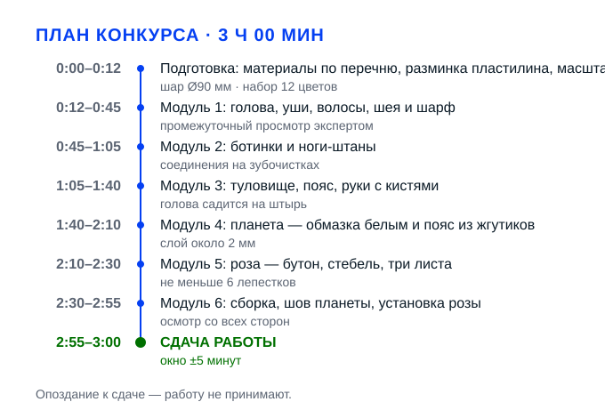
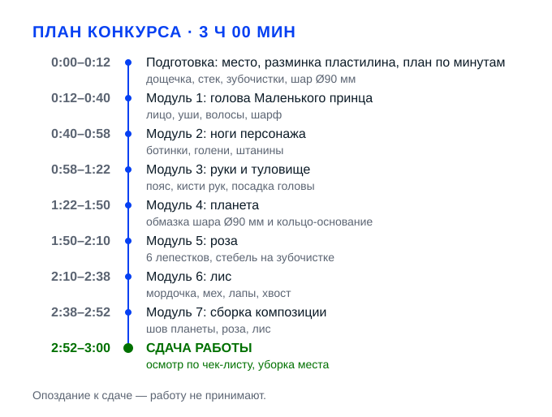
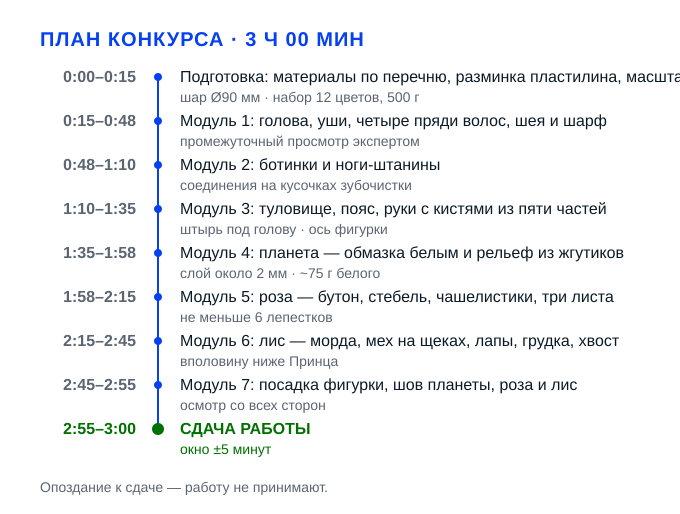

Макетирование из пластилина (ФВ)
Задания ниже — официальные файлы «Абилимпикс» (источник: abilympics-russia.ru), разложенные по категориям. Решения написаны по тексту задания, регламенту и критериям оценки; в них указано, что именно проверяет эксперт.
Школьник
14–16 лет, базовый уровень заданияВ официальном файле категории не разделены отдельными разделами — приводим задание целиком; различия по категориям смотрите в таблице модулей.
Пошаговое решение
Задание для школьников — одна пластическая композиция из пластилина: фигурка Маленького принца на планете и роза. В конкурсном задании шесть модулей и три часа на всё: голова персонажа, ноги, руки и туловище, планета, роза и соединение деталей. Лепится всё вручную, из материалов перечня — набор цветного пластилина из 12 цветов, брусок белого скульптурного пластилина, пенопластовый шар диаметром 90 мм, стек, зубочистки и скалка. Оценивают не «похожесть вообще», а конкретные вещи: узнаваемость персонажа, пропорции и посадку головы, аккуратность поверхности, ровно заполненный шов планеты, читаемость розы и устойчивость всей композиции. Поэтому работа строится как у скульптора: сначала подготовка и расчёт масштаба, потом крупные объёмы, потом мелкие детали, и только в конце сборка — потому что каждая деталь садится на зубочистку и почти не прощает переделок.

Задача 1. Разложить рабочее место и подготовить пластилинПодготовка · 0:00–0:12 из трёх часов
Конкурсное задание целиком делается руками, и первая четверть часа решает, будет ли вам удобно в следующие три часа. На столе должны оказаться ровно те материалы, которые перечислены в задании: набор цветного пластилина из 12 цветов, брусок белого скульптурного пластилина, пенопластовый шар диаметром 90 мм, стек, упаковка зубочисток и скалка или гладкий цилиндр. Всё остальное — лишнее, оно цепляет детали и падает на них. Здесь же вы разминаете пластилин и раскладываете его по кучкам под конкретные детали, чтобы потом не искать нужный цвет мокрыми руками.
Действие 1.1. Принять оборудование и разложить его по зонам
Шаг 1.1.1
Принимаем набор и сверяем его с перечнем задания по пунктам: набор цветного пластилина из 12 цветов, отдельный брусок белого скульптурного пластилина, шар из пенопласта диаметром 90 мм, стек, упаковка зубочисток, скалка или гладкий цилиндр. Шар осматриваем отдельно: он должен быть целым, без вмятин и сколов, потому что любая выбоина потом проступит через слой пластилина и уведёт в сторону всю геометрию планеты. Если чего-то нет или шар повреждён, сразу говорим эксперту, до начала отсчёта времени.
Пока идёт приёмка, недостающее ещё можно получить: после старта замена идёт только через экспертов и только при уважительной причине. Кроме того, задание прямо ограничивает набор материалов, и работа, сделанная с помощью того, чего в перечне нет, оценивается как нарушение условий. Пересчёт по списку занимает две минуты и снимает главный риск начала: остаться без белого скульптурного пластилина в момент, когда нужно обмазывать планету.
Сверка закончена, когда каждая позиция перечня лежит на столе и названа вслух или отмечена. Шар проверяем на просвет и на ощупь, катаем по ладони: он должен катиться ровно, без стука. Если шар меньше 90 мм или сильно больше, скажите об этом до старта — размер заготовки задаёт масштаб всей композиции.
Типичная ошибка — схватить набор и сразу начать лепить голову: к пятому модулю выясняется, что белого скульптурного пластилина нет, и планету делают из цветного, который хуже держит форму и мажет руки. Вторая — молча согласиться с вмятиной на шаре: заровнять её не получится, и планета будет выглядеть приплюснутой.
Эксперт проходит по местам в первые минуты и смотрит, совпадает ли набор с перечнем, цел ли шар и обратился ли участник с проблемой сразу, а не в середине работы.
Шаг 1.1.2
Раскладываем стол на четыре зоны. По центру — дощечка для лепки, на ней вы будете работать всё время, и пластилин с неё не снимается на столешницу. Слева — заготовки и уже готовые детали: голова, ноги, туловище сохнут именно там, чтобы вы их не задели локтем. Справа — инструмент: стек, зубочистки в открытой упаковке, скалка. Сзади или с краю — сухая салфетка, которой протираете стек при смене цвета. Всё, что не относится к заданию, (пенал, телефон, бутылка, рюкзак) убираем со стола полностью.
Детали этой композиции мелкие: глаза — крошечные шарики чёрного цвета, кисть руки — пять частей из тонкого жгутика. На загромождённом столе такие кусочки теряются и прилипают к посторонним предметам. Зонирование экономит не время, а целость деталей: готовая голова с причёской стоит в стороне, и вы не сминаете ей волосы, когда тянетесь за стеком.
Проверьте рукой: от центра дощечки вы дотягиваетесь до стека и зубочисток, не вставая и не перенося вес на другую сторону тела. Готовые детали стоят не ближе ладони от края стола, чтобы не свалиться. Свободного места на столе столько, что дощечку можно повернуть на девяносто градусов, не задев ничего.
Ошибка новичка — держать инструмент в одной куче с заготовками: стек падает на голову персонажа и сминает нос, который вы только что пригладили. Вторая — работать прямо на столе, без дощечки: пластилин прилипает к столешнице, вы отрываете деталь вместе с волокнами, и поверхность уже не восстановить.
Оценивается организация рабочего места: эксперт смотрит, есть ли дощечка, разложен ли инструмент, убрано ли лишнее, и делает вывод о том, насколько участник владеет процессом.
Шаг 1.1.3
Смачиваем руки водой и вытираем их почти насухо — ладони должны быть влажными, но не мокрыми, иначе пластилин начнёт скользить и потеряет форму под пальцами. Садимся свободно и прямо, стопы на полу, локти чуть выше стола: при сутулой посадке кисти быстро устают, а на третьем часу работы это заметно по неровным жгутикам. Стек протираем салфеткой и убеждаемся, что кромка целая, без заусенцев и засохших кусочков чужого цвета.
Влажные руки — прямая рекомендация из требований охраны труда: сухой пластилин липнет к коже, рвётся и мажет поверхность деталей отпечатками. Ровная посадка важнее, чем кажется: в этой композиции нужно скатать десятки одинаковых шариков и четыре длинных жгутика, и именно от устойчивой кисти зависит, будут ли они одинаковыми. Чистый стек — это ещё и чистота цвета: тёмный пластилин, оставшийся на кромке, испортит бежевую голову.
Руки влажные, но с ладоней не капает. Плечи опущены, спина не касается спинки стула в изгибе. Стек проведён по салфетке, на кромке нет тёмных следов, край не цепляет кожу. Если руки начали липнуть в процессе — повторите смачивание, это пять секунд.
Частая ошибка — мочить руки обильно, «чтобы не липло»: вода попадает в пластилин, он начинает пузыриться и расползаться, а соединения деталей потом расходятся. Вторая — работать сгорбившись над дощечкой: через час кисть дрожит, и глазки персонажа получаются разного размера.
Эксперт отмечает посадку и чистоту инструмента по ходу всей работы: аккуратность рук напрямую переносится на аккуратность поверхности фигурки, и по первым же деталям это уже видно.
Действие 1.2. Размять пластилин и разложить его по деталям
Шаг 1.2.1
Разминаем пластилин не весь сразу, а по небольшой части: отделяем от бруска кусок размером с грецкий орех, кладём его между ладонями и греем круговыми движениями сорок–шестьдесят секунд, пока он не станет мягким и податливым, как плотное тесто. Затем повторяем со следующим куском. Разминать целый брусок бессмысленно: он тяжёлый, холодный и разогревается неравномерно, а руки устают уже на первом модуле.
Требования охраны труда прямо говорят: перед работой пластилин разогревают в руках, и разминают понемногу, потому что сразу весь кусок мять тяжело и неудобно. Разогретый пластилин лепится гладко, без трещин по краю лепёшки и без белых заломов на сгибе, а именно эти заломы потом видны на лепестках розы и на щеках персонажа.
Кусок готов, когда он легко сминается большим пальцем, не крошится по краям и держит форму шарика, а не расползается блином. Скатайте пробный шарик диаметром около пятнадцати миллиметров: на нём не должно быть трещин, поверхность должна быть ровной и слегка блестящей.
Ошибка — начинать лепить из холодного пластилина прямо из коробки: он рвётся, поверхность деталей получается шероховатой, а жгутики для волос и шарфа трескаются при сгибе. Вторая ошибка — размять сразу весь бежевый брусок и оставить его лежать: разогретый пластилин быстро отдаёт тепло и к моменту лепки головы снова становится жёстким.
Эксперт смотрит на поверхность первых деталей: гладкая она или в трещинах. По трещинам он судит не о старательности, а о том, размят ли материал, и это влияет на оценку подготовки к работе.
Шаг 1.2.2
Раскладываем цвета по будущим деталям, чтобы в работе не искать нужный оттенок. Бежевый или телесный — на голову, шею и кисти рук: это самый большой расход по площади. Зелёный — на туловище, руки и ноги-штаны, причём под ноги и туловище откладываем куски покрупнее. Жёлтый — на четыре пряди волос, шарф и пояс: из него скатываются длинные жгутики, поэтому куски нужны ровные. Чёрный — на два крошечных глаза и на ботинки. Красный и зелёный помельче — на розу. Белый скульптурный брусок не трогаем до модуля планеты.
Эта композиция держится на цветовом контрасте: бежевое лицо на зелёном костюме, жёлтый шарф и волосы, красная роза и белая планета. Если цвета перемешаны на столе, вы неизбежно потянетесь за куском, возьмёте не тот, и придётся либо переделывать деталь, либо соглашаться на грязный оттенок. Отдельная кучка под каждую деталь — это страховка от перерасхода: по заданию материала 500 граммов, и его должно хватить на всё.
На столе семь кучек, каждая подписана вами мысленно или разложена в своём углу дощечки. Белый скульптурный брусок лежит отдельно и нетронутым. Проверьте, что зелёного отложено заметно больше, чем красного: зелёный уходит на две ноги, туловище, два рукава и листья розы, а красный — только на лепестки.
Типичная ошибка — пустить один и тот же кусок на разные детали «по кусочку»: пластилин набирает ворс и крошки, оттенок сереет. Вторая — отложить под туловище слишком маленький кусок: по заданию туловище лепится из большого зелёного шара, и если его не хватит, фигурка получится щуплой и не удержит голову.
Эксперт оценивает рациональность расхода материала: к концу работы видно, остались ли нужные цвета или всё ушло на переделки. Отдельно он смотрит, не смешаны ли зелёный с жёлтым на одном куске и нет ли на цветном пластилине ворса.
Шаг 1.2.3
Проверяем пластилин на пробной заготовке: скатываем шарик, потом колбаску длиной с палец, затем расплющиваем её стеком в лепёшку. Так вы сразу видите, как материал ведёт себя в трёх основных приёмах этого задания — скатывании, раскатывании в жгут и приплющивании. Пробную лепёшку не выбрасываем: из неё потом получится подкладка под заготовку или подложка, на которой сохнет голова. Крошки и обрезки собираем в отдельный комочек, а не сметаем на пол.
Дальше вся работа состоит ровно из этих трёх движений: шарики для глаз и лепестков, жгутики для волос, шарфа, пояса и пальцев, плоские лепёшки для лепестков розы и пояса. Проверив материал заранее, вы не тратите время модуля на выяснение, почему жгут рвётся или лепёшка липнет к дощечке. Кроме того, это единственный способ понять, не пересушен ли пластилин: пересушенный крошится и требует капли воды, а не силы.
Шарик катается ровно, без трещин; колбаска тянется без разрывов и сохраняет толщину по всей длине; лепёшка отходит от дощечки целиком, не рвётся по центру. Если колбаска рвётся — пластилин холодный, вернитесь к разминке. Если лепёшка липнет намертво — руки слишком мокрые.
Ошибка — пропустить пробу и начать с ответственной детали: первая же лепёшка лепестка прилипает к дощечке и снимается с рваными краями, а их уже не загладить. Вторая — смахнуть крошки на пол: на скользком полу они превращаются в каток, а падение на конкурсе — это травма и снятая работа.
Эксперт смотрит на культуру работы с материалом: где лежат обрезки, чист ли стол, не разбросан ли пластилин. Разбросанные куски он читает как нарушение правил работы с материалом, а не как мелочь.
Действие 1.3. Задать масштаб композиции и порядок работы
Шаг 1.3.1
Берём пенопластовый шар и прикидываем на нём масштаб: фигурка Маленького принца должна быть примерно равна диаметру шара или чуть выше, то есть около 90–110 мм от подошвы ботинок до макушки. Прикидку делаем прямо на глаз, приложив к шару полоску бумаги и отметив карандашом высоту: голова — примерно четверть всей высоты, туловище с ногами — остальное. Роза при таком масштабе получается высотой в треть фигурки, и это нормально: она должна читаться как отдельный предмет на планете, а не как брошка.
Пропорции — первое, что видит эксперт, и первое, что выдаёт неподготовленную работу: слишком крупная голова превращает принца в младенца, слишком мелкая делает фигурку неузнаваемой. Масштаб задаётся до лепки, потому что потом его уже не исправить: голова лепится первой, и если она вышла на треть фигурки, вам придётся либо переделывать её, либо удлинять ноги, а ноги по заданию делаются из двух больших зелёных шаров, и запас зелёного ограничен.
На полоске бумаги отмечены три метки: подошва, низ головы, макушка. Голова занимает от четверти до трети высоты, туловище с ногами — остальное. Шар рядом с полоской: фигурка не ниже диаметра шара. Если разметка не сходится, вы ещё ничего не слепили и можете спокойно пересчитать размеры.
Ошибка — лепить «как получится» и обнаруживать диспропорцию на сборке: голова уже с причёской и шарфом, переделывать её значит потерять сорок минут. Вторая — сделать фигурку заметно меньше шара: на планете диаметром 90 мм такая фигурка выглядит потерянной, и композиция читается как «шарик с точкой».
Эксперт на промежуточном осмотре прикидывает соотношение головы и фигуры в целом: несоразмерность он отмечает как ошибку композиции, а исправить её позже почти невозможно — голова лепится первой.
Шаг 1.3.2
Раскладываем работу по модулям задания и держим этот порядок до конца: голова, ноги, руки и туловище, планета, роза, сборка. Для каждой готовой детали заранее определяем место на дощечке — голову кладём в левый верхний угол, ноги вниз, туловище ближе к центру, — и не переставляем их до сборки. Порядок не случайный: голова сохнет и уплотняется, пока вы лепите ноги, а планета делается позже всех, потому что обмазанный пластилином шар нельзя долго держать в руках, не оставив отпечатков.
Задание построено модулями, и каждый следующий опирается на предыдущий: кисти рук вставляются в готовые рукава, голова садится на зубочистку в туловище, фигурка ставится на планету, а роза — последней, когда композиция уже собрана. Нарушение порядка почти всегда даёт брак: голова, прикреплённая до того, как туловище соединено с ногами, мешает прижать соединение, и оно расходится.
Все шесть модулей названы вами по порядку, и на дощечке есть место под каждую деталь. Проверьте себя вопросом: если сейчас закончится время, что у меня в руках? Ответ должен быть — целая узнаваемая деталь, а не набор недоделанных кусков.
Ошибка — начать с розы, потому что она «самая красивая»: лепестки занимают двадцать минут, а фигурки ещё нет, и в спешке голова получается смазанной. Вторая — лепить всё параллельно и держать в руках по три детали: мелкие части деформируются в пальцах.
Эксперт по ходу конкурса видит, идёт ли работа по модулям задания; хаотичный порядок снижает оценку за организацию и почти всегда приводит к недоделанной композиции.
Задача 2. Слепить голову, шею и шарф (Модуль 1)Модуль 1 · 0:12–0:45 из трёх часов
Первый модуль задания — голова Маленького принца: большой шарик бежевого цвета, два жгутика на нос и рот, два крошечных чёрных шарика вместо глаз, уши, четыре жёлтые пряди волос, валик для шеи и два жёлтых жгутика шарфа. Голова — самая узнаваемая часть композиции и одновременно самая уязвимая: мелкие детали на мягком пластилине расплываются от одного неверного движения, а отпечаток пальца на щеке уже не загладить. Поэтому её лепят первой и дальше не трогают руками — только поправляют стеком и зубочисткой, а сушиться она уходит в сторону.
Действие 2.1. Скатать основу головы и придать ей форму яйца
Шаг 2.1.1
От бежевого куска отделяем часть и катаем в ладонях большой шарик — такой, чтобы он свободно помещался между большим и указательным пальцами, диаметром примерно 25–28 мм при общей высоте фигурки около 100 мм. Катаем круговыми движениями обеих ладоней, пока поверхность не станет ровной и гладкой; нажим слабый, ближе к концу ладони сводим вместе, чтобы шарик не сплющился. Готовый шарик кладём на дощечку и накрываем ладонью, чтобы он не подсох, пока вы готовите рабочее место под лицо.
Это основа всей головы, и по заданию она делается именно из одного большого шарика бежевого цвета. От её размера зависит пропорция фигурки: голова занимает примерно четверть высоты, и если шарик вышел крупнее, дальше придётся либо удлинять туловище, либо мириться с младенческими пропорциями. Ровная поверхность важна ещё и потому, что на шероховатом шарике все мелкие детали — нос, губы, глаза — смотрятся налепленными кусочками, а не частью лица.
Шарик круглый, без граней и вмятин от пальцев, катается по дощечке ровно, не подпрыгивая. Диаметр проверяем линейкой или полоской бумаги с меткой: 25–28 мм. Если на поверхности видны светлые полосы-заломы, пластилин холодный — вернитесь к разминке и перекатайте.
Ошибка — скатать шарик «на глаз» и получить комок размером с вишню: голова потом не удержит причёску и шарф, а лицо придётся лепить на площади в десять миллиметров. Вторая — сильно давить ладонями: шарик выходит приплюснутым, и форма яйца из него уже не получится без складок.
Эксперт смотрит на первые же детали: ровный ли шарик, нет ли отпечатков и крошек чужого цвета на поверхности. По ним он судит о подготовке материала и о чистоте рук участника.
Шаг 2.1.2
Кладём шарик между ладонями и прокатываем его, чуть сжимая одну сторону: сверху оставляем объём, снизу формируем сужение — подбородок. Дальше ставим заготовку на дощечку и двумя пальцами слегка вытягиваем нижнюю треть вниз и вперёд, чтобы получилось яйцо, обращённое острым концом к подбородку. Верхнюю часть, наоборот, чуть расширяем: у принца под волосами должна быть округлая макушка, а не заострённая, как у капли.
По заданию большому шарику придают именно форму яйца, и это не формальность: яйцо даёт естественный объём черепа и подбородок, на который удобно ставить нос и рот. Круглая голова выглядит как мячик и плохо держит причёску — пряди волос сползают с макушки. Кроме того, правильная форма задаёт место шеи: узкий низ головы соединяется с валиком шеи без ступеньки.
Заготовка стоит на дощечке устойчиво, узким концом вниз, и не заваливается. Высота яйца примерно на треть больше ширины. Проведите по поверхности ладонью: переход от широкой части к узкой должен быть плавным, без грани и без складки.
Ошибка — сделать из шарика правильный овал, одинаковый сверху и снизу: голова получается без подбородка, и лицо сползает вниз. Вторая — вытянуть яйцо слишком сильно, до формы капли: такая голова читается как капюшон, а не как лицо ребёнка.
На промежуточном просмотре эксперт оценивает силуэт: голова должна читаться как голова даже без лица — с ровной макушкой, с подбородком и без складок на боках. Перекошенное яйцо он фиксирует как ошибку формы.
Действие 2.2. Сделать нос, рот и глаза
Шаг 2.2.1
Скатываем два совсем маленьких жгутика из бежевого пластилина, каждый длиной около трёх миллиметров и толщиной не больше миллиметра: один пойдёт на нос, второй на губы. Жгутики катаем на дощечке подушечками пальцев, а не в ладонях — в ладонях такой маленький кусок просто исчезает под нажимом. Для носа жгутик делаем чуть толще и короче, для губ — тоньше и длиннее, потому что губы у героя узкие и слегка растянутые в улыбку.
Нос и рот по заданию делаются из двух совсем маленьких жгутиков, и именно они превращают гладкое яйцо в лицо. Разница в толщине важна: если оба жгутика одинаковые, нос и губы сливаются в одно пятно, и лицо теряет выражение. Мелкие детали лепятся первыми, до глаз: глазки-шарики сидят выше, и если начать с них, вы будете придерживать голову пальцами именно там, где они прикреплены.
Оба жгутика лежат рядом на дощечке, noses и губы не слиплись; длина носа около трёх миллиметров, губ — четыре-пять. Поверхность гладкая, без трещин по краю: если жгутик рассыпается на кусочки, пластилин пересушен, сбрызните его каплей воды и перекатайте.
Ошибка — скатать нос из куска в половину шарика: на лице получится нарост, и всё лицо сместится вниз. Вторая — сделать жгутики в ладонях: они выходят плоскими и рваными, а прилепить рваный жгутик ровно уже невозможно.
Эксперт рассматривает лицо вблизи: размер носа относительно головы, симметрию губ, есть ли трещины по краям деталей и не торчат ли они полосками. Смотрит он и на цвет — серые разводы на бежевом лице уже не загладить.
Шаг 2.2.2
Прикладываем нос по центру лица, чуть ниже середины яйца, и слегка вдавливаем его в голову подушечкой пальца, а не кончиком ногтя. Затем стеком приглаживаем края: двигаем остриём от середины носа к щекам короткими движениями, будто размазываем переход. Губы ставим ниже носа, отступив примерно высоту носа, и слегка изгибаем жгутик дугой вверх — получается спокойная полуулыбка. После установки обоих элементов проходим стеком по всему лицу, снимая лишние бугорки.
Стек в этом задании прямо предписан: им приглаживают нос и губы, чтобы они не торчали налепленными полосками, а переходили в поверхность лица. Без приглаживания пластилин даёт валик по краю детали, и на фотографии работы лицо выглядит собранным из заплаток. Полуулыбка важна не меньше: у Маленького принца спокойное, немного отстранённое лицо, и линия губ задаёт это настроение лучше любых подробностей.
Проведите по лицу пальцем с закрытыми глазами: нос и губы должны ощущаться как бугорки с плавными скатами, без ступеньки по краю. Посмотрите на голову в профиль — нос выступает примерно на миллиметр, не больше. Губы по ширине не шире расстояния между будущими глазами.
Ошибка — приглаживать стеком слишком сильно: нос размазывается и исчезает, остаётся пятно. Вторая — поставить губы почти вплотную к носу: лицо сжимается в нижней трети, а лоб остаётся пустым и огромным.
Эксперт смотрит на переходы: приглажены ли нос и губы, читается ли лицо с расстояния вытянутой руки, не размазаны ли черты. Отдельно отмечает положение губ: при слишком низкой посадке лицо выглядит старше и теряет сходство с героем.
Шаг 2.2.3
Скатываем два крошечных шарика чёрного цвета, диаметром около полутора миллиметров — это глаза. Катаем их между подушечками большого и указательного пальцев, почти без нажима, чтобы шарики не стали овальными. Ставим их на лицо симметрично: расстояние между глазами равно примерно ширине одного глаза, линия глаз — чуть выше уровня носа, по обе стороны от центральной оси. Прижимаем совсем легко, до касания поверхности, а не вдавливая в голову.
В задании сказано: два крошечных шарика чёрного цвета для глаз, — и требование «крошечных» здесь ключевое. Крупные чёрные шары превращают лицо в кукольную маску, мелкие делают его спокойным и живым. Симметрия — второй по важности признак: даже миллиметровый перекос читается как косоглазие, потому что глаз у зрителя цепляется именно за тёмные точки на светлом фоне.
Глаза на одной горизонтали: проверьте, приложив к лицу полоску бумаги или зубочистку боком. Расстояние от каждого глаза до края головы одинаковое. Шарики круглые, не сплюснутые, поверхность блестит ровно, без ворса и крошек.
Ошибка — вдавить глаза ногтем: вокруг остаётся белый след и вмятина, лицо выглядит помятым. Вторая — поставить глаза слишком высоко, почти на макушку: тогда лоб исчезает, и причёска начинается прямо над бровями.
Эксперт проверяет симметрию и размер глаз относительно головы: это один из первых признаков, по которому узнаётся персонаж. Он же смотрит, не осталось ли вокруг глаз вмятин от ногтя и не потемнел ли бежевый пластилин от чёрных крошек.
Действие 2.3. Прикрепить уши и сделать причёску из прядей
Шаг 2.3.1
Скатываем два маленьких шарика телесного цвета, диаметром около четырёх миллиметров, и превращаем каждый в короткий овал, приплюснув его между пальцами. Приставляем к голове с двух сторон на уровне линии глаз, чуть ниже её, и прижимаем внешнюю сторону, оставляя внутреннюю свободной. Следим, чтобы уши не заходили на щёки: их место — за краем лица, у самой границы головы.
Уши в задании делаются из двух маленьких шариков телесного цвета, и они нужны не только для сходства: они держат силуэт головы в профиль, который зритель видит на планетарной композиции, где фигурка стоит в три четверти. Слишком крупные уши превращают принца в эльфа, слишком мелкие теряются под волосами и не читаются вовсе. Положение на линии глаз — антропометрическая норма, и глаз зрителя чувствует её нарушение даже без измерений.
Уши симметричны по высоте и размеру, не выступают за габарит головы больше чем на два миллиметра. Проверьте, посмотрев на голову строго в профиль: ухо должно читаться как небольшой овал, а не как лепёшка на щеке.
Ошибка — прилепить уши слишком высоко, ближе к макушке: голова кажется вытянутой. Вторая — прижать ухо всей ладонью: оно расплющивается и сливается с головой, и в профиль лица вообще нет. Правильная посадка — на линии глаз или чуть ниже.
Эксперт осматривает голову с четырёх сторон: симметрия ушей и их посадка видны сразу, особенно в профиль. Слишком высоко посаженные уши он отмечает как ошибку пропорции, а приплюснутые — как потерю силуэта.
Шаг 2.3.2
Скатываем четыре длинных жгутика жёлтого цвета, каждый длиной около 30–35 мм и толщиной 3 мм. Катаем на дощечке, начиная с середины и уводя ладонь к краям, чтобы жгут получился ровным по всей длине, а не конусом. Затем берём скалку или гладкий цилиндр и прокатываем каждый жгутик, прижимая его к дощечке, — жгут становится плоским, шириной около 5 мм и толщиной около миллиметра, как лента.
Задание требует именно четырёх длинных жгутиков жёлтого цвета и отдельно указывает сделать их плоскими. Плоская лента ложится на голову как прядь, а не как шнурок, и держится на поверхности за счёт площади касания: круглый жгут скатывается с макушки при первом же наклоне. Четыре пряди — это и есть причёска героя; при трёх голова выглядит полупустой, при шести пряди перекрывают друг друга и силуэт теряется.
Ленты одинаковые по ширине, с ровными краями, не просвечивают на сгибе. Положите одну на дощечку и посмотрите вдоль: она должна лежать всей плоскостью, без волны. Если край рваный — жгут был пересушен, перекатайте его с каплей воды.
Ошибка — раскатать жгутики в тонкие полоски: они рвутся при укладке и не дают объёма причёске. Вторая — не приплющить их вовсе: круглые жгуты сползают с головы, и к концу конкурса причёска оказывается на плече.
Эксперт оценивает аккуратность прядей и однородность их толщины: это ручная работа, и разная ширина лент сразу видна, особенно в профиль. Он же проверяет, приплюснуты ли жгутики, — круглые он считает невыполнением пункта задания.
Шаг 2.3.3
Укладываем пряди на голову: две по бокам, от макушки вниз к ушам, и две по центру, чуть наискось, чтобы они перекрывали стыки боковых. Начинаем укладывать от макушки, прижимая верхний конец каждой ленты к голове и ведя её вниз по естественному изгибу черепа; нижние концы слегка подворачиваем под себя. После укладки проходим по краям прядей стеком, убирая ступеньки, и проверяем, что волосы не закрывают глаза и уши.
Пряди задают принцу узнаваемый силуэт: золотистые волосы, лежащие мягкими волнами, — главный признак персонажа наравне с зелёным костюмом. Укладка от макушки вниз повторяет направление роста волос, поэтому причёска выглядит естественно и не распадается. Если пряди закрывают глаза, лицо пропадает целиком, и вся работа над модулем 1 оказывается напрасной.
Голова читается с расстояния вытянутой руки: видны пробор у макушки, две боковые пряди, лицо открыто, глаза не перекрыты. Пальцем проверьте крепление: лента не отходит от головы и не сдвигается при легком нажатии. Стеком пройдены все края, ступенек нет.
Ошибка — прилепить пряди, начиная с концов: середина провисает и отклеивается. Вторая — уложить все четыре пряди в одну сторону: голова выглядит причёсанной на один бок, затылок остаётся голым. Третья — не пригладить края, и тогда причёска смотрится наклеенной.
Эксперт смотрит на причёску в профиль и с затылка: она должна быть замкнутой по кругу, а не только спереди. Он же отмечает, открыто ли лицо, — прядь, закрывающая глаз, считается грубой ошибкой укладки.
Действие 2.4. Сделать шею и шарф, соединить с головой
Шаг 2.4.1
Скатываем из телесного пластилина небольшой валик длиной около 10 мм и толщиной 6–7 мм — это шея. Раскатываем его на дощечке ровно, без конусности, затем ставим вертикально и слегка приплющиваем с двух сторон, чтобы он держал форму столбика. Один конец валика вминаем в низ головы — в сужение яйца, которое мы оставили под подбородком, — и приглаживаем место стыка стеком по кругу.
Валик для шеи прямо назван в задании, и он выполняет две роли: связывает голову с туловищем и задаёт посадку головы. Без шеи голова садится на плечи, фигурка становится приземистой, и пропорции, которые вы рассчитывали в начале, ломаются. Посадка тоже важна: шея ставится строго по центру и вертикально, иначе голова будет смотреть в сторону, а вся фигурка — клониться.
Валик стоит вертикально, стык с головой приглажен, ступеньки нет. Высота шеи видна примерно на 5 мм ниже подбородка. Голова сидит на шее без наклона: проверьте, поставив заготовку на дощечку и посмотрев спереди и сбоку.
Ошибка — сделать шею слишком длинной: голова выглядит насаженной на палочку. Вторая — не пригладить стык: на границе остаётся кольцевая канавка, которая при сборке станет видимым дефектом. Приглаживают по кругу, пока граница не исчезнет.
Эксперт оценивает посадку головы: вертикальность валика, высоту шеи, плавность перехода в подбородок. Слишком длинную или, наоборот, вдавленную шею он фиксирует как ошибку пропорции ещё до сборки.
Шаг 2.4.2
Скатываем два длинных жгутика жёлтого цвета, каждый около 40 мм, толщиной 3–4 мм, и приплющиваем их так же, как пряди волос, но чуть меньше — до ширины 4 мм. Это шарф. Первый жгутик оборачиваем вокруг шеи, укладывая его кольцом и оставляя спереди небольшой напуск; второй кладём поверх первого со сдвигом вниз, концы выводим вперёд и слегка перекручиваем между собой. Место соединения концов прижимаем и приглаживаем стеком.
Два жёлтых жгутика на шарф перечислены в задании, и в композиции они работают как цветовое пятно у лица: жёлтый шарф и жёлтые волосы связывают голову с жёлтым поясом на туловище, и фигурка читается цельно. Два оборота, а не один, дают объём и закрывают стык шеи с головой — это то место, где чаще всего видна щель. Перекрещенные концы спереди создают узнаваемый узел, характерный для героя.
Шарф обёрнут вокруг шеи двумя витками, стык головы и шеи закрыт полностью. Концы перекрещены и лежат на груди, не торчат в стороны. Проверьте, не закрывает ли шарф подбородок: между ним и ртом должно оставаться расстояние в толщину зубочистки.
Ошибка — намотать шарф одним кольцом и оставить шею открытой: виден стык, и вся аккуратность первых шагов пропадает. Вторая — сделать концы слишком длинными: они свисают до пояса и при сборке заминаются о туловище.
Эксперт проверяет, закрыт ли переход шеи в голову и читается ли узел шарфа как отдельная деталь, а не как жёлтое кольцо. Отмечает он и цвет: жёлтый, смешанный с зелёным, выглядит грязным.
Шаг 2.4.3
Готовую голову с шеей и шарфом ставим в отведённое место на дощечке — в левый верхний угол — и больше не поднимаем руками: дальше её берут только за шарф двумя пальцами или поддевают стеком снизу. Если есть зубочистка, вставляем её в нижний торец валика шеи на две трети длины, оставив снаружи около 10 мм: этот штырь потом войдёт в туловище. Сверху голову накрываем перевёрнутой чашкой или ставим под край дощечки, чтобы она не запылилась.
Голова сохнет и уплотняется примерно сорок минут, пока вы лепите ноги, туловище и руки, — и за это время она становится прочнее, а пальцы перестают оставлять на ней вмятины. Зубочистка в шее решает главную проблему сборки: голова, посаженная на штырь, не сползает с туловища и не разворачивается вбок под весом причёски. Задание прямо предусматривает вставку зубочистки для соединения головы с туловищем.
Голова лежит отдельно от инструмента и заготовок, не касается ничего постороннего. Зубочистка сидит в шее плотно, не шатается, снаружи остаётся ровный конец. На поверхности нет новых отпечатков: сравнивайте с тем, как деталь выглядела пять минут назад.
Ошибка — оставить голову рядом с рабочим местом: через десять минут на щеке появятся вмятины от локтя и крошки. Вторая — не вставить зубочистку сейчас: потом, когда голова затвердеет, она не войдёт без трещин, а без штыря голова на мягком туловище будет клониться.
Эксперт на промежуточном осмотре проверяет, лежит ли готовая голова отдельно и сохнет, а не мнётся в руках участника. Наличие штыря в шее он тоже отмечает: без него голова не удержится на туловище.
Задача 3. Слепить ноги, туловище и руки (Модули 2 и 3)Модули 2–3 · 0:45–1:40 из трёх часов
Второй и третий модули задания собирают всё, что ниже головы: сначала ботинки из чёрных шариков и ноги-штаны из двух больших зелёных шаров, потом туловище в форме яйца, жёлтый пояс и рукава, в которые вставляются кисти из бежевых жгутиков, разделённых на пять частей. Это самая инженерная часть работы: две трети деталей соединяются на зубочистках, и от того, насколько аккуратно вставлены штыри, зависит, устоит ли фигурка на планете. Здесь же появляется главный риск — перегрузить верх и получить фигурку, которая падает при первом касании.
Действие 3.1. Слепить ботинки
Шаг 3.1.1
Скатываем два чёрных шарика размером с горошину — диаметром примерно 8 мм — и два маленьких шарика из того же пластилина диаметром вдвое меньше. Шарики покрупнее превращаем в каплю: кладём на дощечку и вытягиваем один край пальцем, пока не получится форма, у которой пятка округлая, а носок сужен и чуть приподнят. Маленькие шарики раскатываем в короткие жгутики длиной около 6 мм — это голенища ботинок.
Ботинки — единственная опора всей фигурки, и по заданию они делаются именно из двух чёрных шариков размером с горошину. Форма капли важна: плоская подошва даёт устойчивость, а вытянутый носок читается как обувь, а не как два комка. Голенища из маленьких жгутиков закрывают переход от ботинка к ноге-штанине — без них на стыке остаётся кольцевая щель, которая на финальном осмотре выглядит как брак соединения.
Обе капли одинаковые по длине и толщине, носки смотрят в одну сторону. Каждая стоит на дощечке не заваливаясь: подошва плоская, пятка не поднята. Жгутики-голенища ровные, без конусности, по толщине совпадают с будущей ногой.
Ошибка — сделать ботинки разного размера: фигурка будет стоять с перекосом, и на планете она накренится. Вторая — скатать каплю слишком острой: носок загибается вверх рожком, обувь перестаёт читаться.
Эксперт обращает внимание на парность деталей: у обуви и рук в этой композиции разница в размере видна сразу. Он же смотрит на подошву — округлая, без плоской площадки, она не даст фигурке стоять на планете.
Шаг 3.1.2
Соединяем каплю с голенищем: вставляем короткий жгутик в широкую часть капли, предварительно сделав в ней углубление зубочисткой, и прижимаем по кругу. В верхний торец голенища вставляем половинку зубочистки длиной около 10 мм — она станет штырём для ноги. Затем скрепляем обе части стеком по шву, убирая наплыв пластилина. Повторяем то же со вторым ботинком и ставим пару рядом, носками в одну сторону, на расстоянии ширины капли между ними.
Зубочистка в этом соединении — не подстраховка, а необходимость: ботинок держит вес всей фигурки, и на одном пластилине шов разойдётся, как только вы поставите принца на планету. Задание прямо предписывает вставить кусочек зубочистки для соединения деталей. Расстояние между ботинками, равное их ширине, задаёт устойчивую стойку: слишком близко — фигурка качается, слишком широко — выглядит как циркуль.
Штырь сидит плотно, не прокручивается, верхний конец зубочистки не торчит из пластилина. Шов между каплей и голенищем приглажен, ступеньки нет. Пара стоит ровно, капли параллельны, расстояние между ними одинаковое сверху и снизу.
Ошибка — вставить зубочистку слишком глубоко, до подошвы: она проткнёт низ, и ботинок развалится при первом нажатии. Вторая — скрепить детали без штыря «на липучку»: при установке фигурки на планету ботинки останутся в руках.
Эксперт проверяет прочность соединений лёгким нажатием: шов не должен расходиться. Здесь же оценивается техника работы с крепежом — умение сделать углубление и ввести штырь, не проткнув деталь насквозь.
Действие 3.2. Скатать ноги-штаны и поставить их на ботинки
Шаг 3.2.1
Скатываем два больших шара зелёного цвета, диаметром около 22 мм каждый — это ноги. Катаем их так же, как голову: круговыми движениями ладоней до ровной поверхности, с одинаковым нажимом, чтобы шары вышли одного размера. Проверяем парность, поставив шары рядом на дощечку: разница в диаметре больше миллиметра уже заметна. Затем превращаем каждый шар в валик, прокатывая его ладонью по дощечке и слегка приплющивая низ — снизу валик должен быть шире, чем сверху.
По заданию ноги делаются из двух больших зелёных шаров, из которых скатывают валики, немного приплюснутые к низу. Приплюснутый низ — это будущая посадка на ботинок: плоская площадка даёт пятно контакта и фигурка не качается. Если валик круглый снизу, он садится на ботинок только на одну точку, и при сборке принц заваливается вперёд. Одинаковый размер валиков — залог того, что фигурка будет стоять ровно, а не на одной ноге.
Валики одинаковой длины и толщины, низ каждого плоский, верх округлый. Поставьте валик на дощечку: он стоит сам, не падает. Длина ноги — примерно четверть высоты фигурки, то есть около 25 мм, чтобы вместе с ботинком получилась устойчивая опора.
Ошибка — скатать валики разной длины: туловище потом встанет криво, и это уже не исправить. Вторая — сделать ноги слишком короткими: фигурка становится приземистой, и голова, которую вы лепили по расчёту, выглядит огромной.
Эксперт смотрит на парность ног и на то, читается ли в них штанина, а не просто зелёная колбаска. Приплюснутый низ и разная ширина сверху и снизу — признак того, что пункт задания выполнен осознанно.
Шаг 3.2.2
Надеваем валики на штыри ботинок: берём ногу за верх, насаживаем низом на торчащую зубочистку и доводим до упора, слегка поворачивая вокруг оси — так пластилин обжимает штырь. Прижимаем низ валика к голенищу и приглаживаем шов стеком по кругу, двигая остриём от ноги к ботинку. Ставим обе ноги, затем выравниваем их по высоте, поставив фигурку на дощечку и посмотрев на неё сбоку: подошвы должны касаться поверхности одновременно.
Соединение ноги с ботинком — второе по нагрузке место после шеи: на него давит вес всего туловища с головой. Насаживание с поворотом нужно для того, чтобы пластилин затёк вокруг штыря и соединение стало монолитным, а не держалось на трении. Приглаженный стеком шов закрывает границу цветов: чёрный ботинок переходит в зелёную штанину без кольцевой канавки.
Фигурка стоит на двух ногах без поддержки, не заваливается ни вперёд, ни назад, ни в сторону. Шов приглажен, граница чёрного и зелёного ровная. Покачайте заготовку лёгким нажатием на верх ног: соединение не хрустит и не расходится.
Ошибка — надеть ногу на штырь до половины: она держится, но при установке на планету соскакивает. Вторая — приглаживать шов, надавливая на ногу сбоку: валик изгибается, и фигурка начинает клониться в сторону нажатия.
Эксперт проверяет устойчивость заготовки на столе — это промежуточный тест на качество соединений. Он же смотрит, приглажен ли шов на стыке чёрного и зелёного: кольцевая канавка считается браком.
Действие 3.3. Сделать туловище, пояс и посадить голову
Шаг 3.3.1
Скатываем один большой зелёный шар для туловища, диаметром около 30 мм, и придаём ему форму яйца: снизу чуть уже, сверху шире — так же, как делали голову, только яйцо перевёрнутое. Отдельно скатываем небольшой шарик жёлтого цвета диаметром около 10 мм — это пояс. Из жёлтого шарика катаем жгутик длиной около 60 мм, а затем приплющиваем его скалкой в ленту шириной 5 мм.
Туловище в задании лепится из одного большого зелёного шарика, которому придают форму яйца, — и это единственная деталь, которая держит на себе и голову, и руки. Обратное яйцо нужно для того, чтобы плечи были шире бёдер: у героя узкая фигурка с аккуратными плечами, и перевёрнутая форма даёт правильный силуэт. Жёлтый пояс из плоского жгутика — цветовая перекличка с шарфом, без него зелёный костюм выглядит бесформенным пятном.
Яйцо устойчиво стоит на дощечке, широкая часть сверху, высота примерно на треть больше ширины. Пояс-лента ровный по всей длине, толщиной около миллиметра, не рвётся при растягивании. Проверьте, что зелёного шара хватило и он не получился меньше ног: туловище должно быть шире каждой ноги.
Ошибка — сделать туловище из того же куска, что и ноги, и получить пропорцию «голова-туловище-ноги» как один столбик: фигурка теряет силуэт. Вторая — скатать пояс круглым жгутом: он сползает с туловища при первом же наклоне.
Эксперт оценивает силуэт: туловище должно читаться отдельно от ног и головы, а не сливаться с ними в один объём. Широкое сверху и узкое снизу яйцо он считает правильной формой, ровный шар — потерей пропорции.
Шаг 3.3.2
Ставим туловище на ноги: совмещаем низ яйца с верхними торцами валиков и слегка вдавливаем. Если валики стоят близко, сначала чуть разводим их в стороны, чтобы плечи не оказались уже бёдер. Проглаживаем место соединения стеком по кругу, снимая наплыв зелёного. Затем оборачиваем пояс-ленту вокруг нижней трети туловища, заводим концы один на другой и приглаживаем место стыка, а свободный кончик аккуратно срезаем стеком.
Соединение туловища с ногами в задании идёт до установки головы — и это логично: пока верх открыт, вы можете прижать посадку ладонью, не задев причёску. Пояс садится на нижнюю треть туловища, туда, где по пропорциям заканчивается корпус и начинаются ноги; выше он выглядит как ремень на груди. Срезанный стеком кончик убирает бугор, который иначе виден в профиль.
Туловище сидит на ногах без перекоса: ось фигурки вертикальна, проверяется поставленной рядом зубочисткой. Шов приглажен, границы не видно. Пояс лежит ровным кольцом на одной высоте, стык не выделяется бугром.
Ошибка — прижать туловище ладонью сверху, когда голова уже стоит: причёска сминается, и модуль 1 приходится переделывать. Вторая — намотать пояс выше талии: фигурка делится на непропорциональные части, ноги кажутся короткими.
Эксперт проверяет посадку туловища на предмет перекоса и чистоту линии пояса: он должен лежать на одной высоте и не наползать на ноги. Ступенька на стыке с ногами видна с расстояния и оценивается как небрежность.
Шаг 3.3.3
Вставляем в верх туловища зубочистку: берём её за середину, вводим вертикально в яйцо на три четверти длины, оставляя снаружи около 10 мм. Сверху насаживаем голову за валик шеи — тем концом, где уже торчит своя зубочистка, — совмещая штыри и слегка поворачивая голову вокруг оси. Доводим до плотного касания шейного валика с плечами, проверяем, что голова смотрит прямо, и приглаживаем стык шарфом снизу, если он отошёл.
Голова на двух штырях не разворачивается и не падает даже при наклоне планеты — это прямо предусмотрено заданием, где зубочистка ставится для присоединения головы. Совмещение штырей поворотом вокруг оси делает соединение плотным: пластилин обжимает зубочистку, и голова сидит как влитая. Посадка головы задаёт характер всей фигурки: чуть наклонённая вперёд голова читается как задумчивость героя, но перекос в сторону сразу выглядит ошибкой.
Голова держится без поддержки, смотрит вперёд, линия носа совпадает с осью туловища. Стык закрыт шарфом, зазора нет. Покачайте фигурку лёгким толчком — голова не кивает и не проворачивается. Общая высота от подошв до макушки около 100 мм.
Ошибка — насадить голову, не проверив вертикальность штыря: голова встаёт с наклоном, и исправить это можно только снятием. Вторая — не оставить штырь в шее заранее: голова держится на одном штыре, проворачивается и падает.
Эксперт оценивает посадку головы по отношению к оси фигуры: перекос виден с расстояния нескольких метров. Он же проверяет, закрыт ли стык шарфом и не осталось ли между шеей и плечами зазора.
Действие 3.4. Сделать рукава и кисти рук
Шаг 3.4.1
Скатываем два зелёных шарика поменьше — диаметром около 14 мм, — превращаем их в валики длиной около 30 мм и слегка приплющиваем с одного конца, чтобы получился рукав. Приставляем рукава к плечам туловища под углом примерно 45 градусов вниз, прижимаем и приглаживаем место соединения стеком. Правый рукав делаем чуть повёрнутым вперёд — потом в него войдёт кисть, которая будет тянуться к розе, — левый опускаем вдоль тела.
Руки по заданию делаются из двух шариков поменьше, которые скатывают в валики. Угол в 45 градусов — не украшение, а условие читаемости: при руках, прижатых к туловищу, фигурка выглядит склеенной, а при поднятых выше плеч — нелепой. Разное положение рукавов задаёт позу и позволяет потом поставить розу так, чтобы рука к ней тянулась. Приглаживание шва убирает наплыв, из-за которого плечо выглядит квадратным.
Рукава симметричны по длине, сидят на одной высоте, угол примерно одинаковый. Шов у плеча приглажен, ступеньки нет. Длина рукава — примерно втрое меньше длины туловища, конец рукава доходит до пояса. Проверьте оба рукава нажатием: они не должны отходить от туловища.
Ошибка — прилепить рукава слишком высоко, почти у самой шеи: плечи сходятся, и фигурка выглядит сутулой. Вторая — сделать рукава одинаково длинными и висящими строго вниз: поза становится манекенной, и композиция с розой не читается.
Эксперт оценивает позу: положение рук — половина узнаваемости персонажа в этой композиции. Одинаково висящие вниз рукава он читает как отсутствие позы, а руку, поднятую выше плеча, — как ошибку анатомии.
Шаг 3.4.2
Скатываем два длинных жгутика бежевого цвета, каждый длиной около 25 мм и толщиной 3 мм. Каждый делим стеком на пять частей — это пальцы. Пять кусочков складываем вместе, чуть разводя концы веером, и скрепляем у основания, прижав их друг к другу: получается кисть с четырьмя пальцами и большим, отведённым в сторону. Вторую кисть делаем так же, стараясь сохранить размер: разница в длине пальцев между руками заметна сразу.
Разделение жгутика на пять частей и сборка кисти прямо описаны в задании, и это самая мелкая работа во всём модуле. Пять частей — анатомическая норма: при четырёх кисть читается как варежка, при шести превращается в гребёнку. Веерное разведение концов нужно, чтобы пальцы не слиплись в один комок: на мягком пластилине они схватываются за минуту.
Пальцы различимы по отдельности, веер виден, кисть не слиплась в комок. Длина кисти примерно равна длине рукава, делённой на три. Обе кисти одинакового размера и с одинаковым числом пальцев — пересчитайте их на обеих руках.
Ошибка — разделить жгутик стеком, не разделяя кусочки: они тут же слипаются обратно, и кисть выглядит обрубком. Вторая — сделать пальцы слишком толстыми: кисть получается больше рукава, и её невозможно вставить.
Эксперт рассматривает кисти вблизи: количество и читаемость пальцев — показатель мелкой моторики и аккуратности. Слипшиеся пальцы или кисть-комок он фиксирует как невыполненный пункт задания.
Шаг 3.4.3
Стеком выбираем немного пластилина из нижних торцов рукавов: вводим остриё в торец и короткими движениями вынимаем лишнее, пока не получится углубление глубиной около 5 мм. Затем смазываем основание кисти и вставляем её в рукав до упора, разворачивая пальцы в нужную сторону. Приглаживаем край рукава вокруг запястья, чтобы получился манжет, и повторяем всё со второй рукой, держа её в том же положении.
Стеком удаляют пластилин из рукавов именно для того, чтобы кисть вошла внутрь, а не приклеилась снаружи: без углубления бежевая кисть садится на зелёный рукав поверх, и рука удлиняется на всю длину кисти. Манжет из приглаженного края закрывает границу цветов и делает соединение похожим на настоящий рукав. Положение пальцев задаёт жест: у героя одна рука тянется к розе, вторая спокойно опущена.
Кисти сидят в рукавах, а не поверх них: бежевая часть начинается от края зелёного рукава. Пальцы смотрят в нужную сторону, не замяты. Потяните кисть легонько на себя — она не выходит из рукава. Манжет закрывает границу цветов по всему кругу.
Ошибка — вставить кисть, не сделав углубление: она отваливается при первом касании, а на её месте остаётся белое пятно. Вторая — утопить кисть слишком глубоко: остаются торчать только кончики пальцев, и рука выглядит обрубленной.
Эксперт проверяет соединение кистей с рукавами и то, насколько естественно читается жест: кисть, повёрнутая ладонью назад, ломает позу. Он же смотрит, нет ли белого наплыва на зелёном рукаве.
Задача 4. Обмазать планету и слепить розу (Модули 4 и 5)Модули 4–5 · 1:40–2:30 из трёх часов
Четвёртый и пятый модули — это фон и смысловой центр композиции: планета из пенопластового шара диаметром 90 мм, обмазанного небольшими кусочками белого пластилина, и роза из красных лепестков на зелёном стебле с тремя листьями. Планета требует терпения и тонкого слоя: толстая обмазка утяжеляет шар, теряет форму и ползёт вниз, а тонкая просвечивает пенопластом. Роза требует другого — аккуратности в наложении лепестков, потому что именно она оценивается вблизи и именно она задаёт всей работе настроение.
Действие 4.1. Обмазать пенопластовый шар белым пластилином
Шаг 4.1.1
Берём пенопластовый шар диаметром 90 мм и сразу отмечаем на нём верх и низ: сверху будет стоять принц, снизу планета опирается на стол. Отметки делаем не карандашом, а двумя крошечными кусочками пластилина, прижатыми в намеченных точках, — так вы не потеряете ориентацию, когда шар будет полностью белым. Рядом готовим рабочее место: дощечку, кусок белого скульптурного пластилина, стек и сухую салфетку.
Шар — готовая заготовка из перечня оборудования, и его нельзя ни сжать, ни проткнуть: пенопласт крошится от нажима, а любая вмятина останется под слоем пластилина навсегда. Отметки верха и низа нужны потому, что после обмазки шар становится однотонным, и определить, где должна стоять фигурка, можно будет только по слою: он ложится неравномерно, и на глаз это уже не различить.
Метки стоят строго напротив друг друга: проведите через них воображаемую ось, приложив зубочистку, — она должна пройти через центр шара. Шар целый, без сколов и вмятин, катается по дощечке ровно. Кусочки-метки держатся, но легко снимаются.
Ошибка — сжать шар в руке, проверяя его прочность: остаётся вмятина от пальцев, и планета получается приплюснутой. Вторая — не отметить верх: потом фигурку ставят на случайное место, и композиция заваливается на бок.
Эксперт проверяет, цела ли заготовка и работает ли участник с ней бережно: пенопласт — единственный материал, который не прощает нажима, и вмятина от пальцев видна на планете после обмазки.
Шаг 4.1.2
От белого скульптурного пластилина отделяем небольшие кусочки размером с ноготь и разминаем каждый в руках до мягкости. Затем налепляем их на шар вплотную друг к другу, начиная от верхней метки и двигаясь по спирали вниз: прижимаем кусочек подушечкой большого пальца и разравниваем им же, ведя движение от центра кусочка к краям. Кусочки должны стыковаться краями, а не ложиться внахлёст, иначе получаются бугры.
Задание требует обмазывать заготовку именно небольшими кусочками — и это главный технический приём модуля. Большим куском обмазать шар невозможно: он не прилипает к пенопласту ровно, сползает и образует складки. Движение по спирали от верха к низу даёт равномерный слой без пропусков, а разравнивание от центра к краям избавляет от бугров на стыках. Толщина слоя около двух миллиметров — оптимум: шар не тяжелеет и пенопласт не просвечивает.
Поверхность шара закрыта полностью: при взгляде на просвет белых пятен пенопласта не видно. Слой одинаковый по толщине — проверяется на ощупь ладонью, проведённой по шару: она не должна спотыкаться о бугры. Диаметр вырос примерно до 94 мм, не больше.
Ошибка — лепить кусочки внахлёст, как чешую: поверхность получается ребристой, и на ней видны тени от каждого слоя. Вторая — оставить пропуски у нижней метки, где неудобно дотянуться: пенопласт просвечивает, и планета выглядит облезлой.
Эксперт осматривает планету на просвет и на ощупь: ровность слоя и отсутствие пропусков — основной критерий этого модуля. Он же смотрит, не просвечивает ли пенопласт у нижней метки.
Шаг 4.1.3
Проходим по всей поверхности шара стеком, приглаживая стыки: ведём плоской стороной стека по шару короткими движениями, будто выравниваем штукатурку, и снимаем излишки, если где-то слой вышел толще. Затем ладонью, чуть смоченной водой, проходим по шару круговыми движениями — поверхность становится ровной и слегка блестящей. Шар после этого кладём на дощечку меткой вниз и больше не переворачиваем, чтобы не смять свежий слой.
Приглаживание стеком убирает границы между кусочками: без него на планете видна сетка стыков, которая при боковом свете читается как трещины. Влажная ладонь закрывает микропоры и снимает отпечатки пальцев, оставшиеся при налепливании, — а планета в этой композиции занимает половину площади работы, и её поверхность оценивается так же внимательно, как лицо персонажа. Переворачивать шар после выглаживания нельзя: слой ещё мягкий и садится вмятинами.
Поверхность ровная, стыков не видно, следов пальцев нет. Проведите по шару сначала пальцем, потом посмотрите на свет сбоку: не должно быть ни бугров, ни полос. Метка верха на месте, шар лежит устойчиво и не катается.
Ошибка — тереть шар ладонью слишком сильно: слой сдвигается и открывает пенопласт в одном месте, а в другом собирается в бугор. Вторая — сразу перевернуть шар для проверки низа: на свежем слое остаются вмятины от дощечки.
Эксперт оценивает и ровность поверхности, и аккуратность: планета должна выглядеть как цельный белый шар, а не как облепленная заготовка. Сетку стыков и отпечатки пальцев он отмечает при боковом свете.
Действие 4.2. Скатать белые жгутики и уложить их вокруг основания
Шаг 4.2.1
Скатываем произвольное количество белых жгутиков — от шести до десяти, длиной около 60 мм и толщиной 4 мм. Катаем их на дощечке от середины к краям, чтобы толщина была одинаковой, и сразу раскладываем по длине, подбирая пары. Жгутики нужны не для украшения, а для того, чтобы закрыть линию стыка двух половин планеты: она пройдёт по экватору, и на ней останется шов, который придётся маскировать.
Задание предписывает скатать произвольное количество белых жгутиков и соединить их концы, то есть собрать замкнутое кольцо. Количество выбирают по длине окружности: на шар диаметром 90 мм по экватору приходится около 280 мм, значит пяти жгутиков по 60 мм хватает с запасом, а шесть-семь позволяют подогнать кольцо без натяжения. Одинаковая толщина нужна потому, что кольцо видно целиком.
Жгутики ровные, без конусности, одинаковой толщины. Пять-семь штук в сумме дают длину чуть больше окружности шара — с запасом на подгонку. На жгутиках нет трещин и ворса: белый пластилин особенно чувствителен к крошкам.
Ошибка — скатать два-три толстых жгута: кольцо получается грубым и не ложится по окружности. Вторая — не проверить длину и обнаружить при укладке, что кольцо короче окружности: тогда по линии пояса остаётся зазор, видимый по всей длине.
Эксперт смотрит на однородность заготовок: всё, что делается из жгутов, он оценивает по ровности. Разная толщина на кольце даёт заметные утолщения, а провисание жгута — волну по экватору.
Шаг 4.2.2
Соединяем концы жгутиков между собой, сминая их пальцами внахлёст, и получаем замкнутое кольцо. Прикладываем его к шару по экватору, у основания, и сначала примеряем без нажима: кольцо должно лечь ровно, без провиса. Затем прижимаем его к шару по всей длине, приглаживаем стеком сверху и снизу, чтобы жгут сросся с поверхностью, и убираем излишек, если кольцо оказалось длиннее окружности.
Кольцо по экватору — это не только декор: оно перекрывает стык двух половин планеты, который появится при сборке, и держит обе половины вместе. Примерка без нажима нужна потому, что белый пластилин мгновенно схватывается с уже обмазанной поверхностью: снять и переложить кольцо без следов уже не получится. Приглаживание сверху и снизу превращает жгут в рельефный пояс, который читается как край планеты.
Кольцо лежит по экватору на одной высоте, не провисает и не задирается. Стыки жгутиков не видны: они сглажены и перекрыты. Пояс приглажен с двух сторон, переход в поверхность плавный. Шар стоит ровно, кольцо не мешает.
Ошибка — приложить кольцо сразу с нажимом и обнаружить перекос: снять его без разрушения слоя невозможно. Вторая — оставить стыки жгутиков неприглаженными: на поясе видны утолщения, и планета выглядит собранной из кусков.
Эксперт проверяет линию пояса: она должна идти ровно, без волны и утолщений. Отдельно он смотрит стыки жгутиков — незаглаженные он читает как незавершённую работу.
Действие 4.3. Слепить бутон розы из красных лепестков
Шаг 4.3.1
Скатываем шесть или больше маленьких шариков красного цвета, диаметром около 8 мм каждый, и превращаем каждый в тонкую лепёшку: прижимаем шарик пальцем к дощечке и разравниваем до толщины меньше миллиметра, чтобы получился лепесток с неровным, чуть волнистым краем. Лепестки должны быть одинаковыми по размеру, но не одинаковыми по форме: у части из них слегка оттягиваем один край, делая асимметрию, — именно она даёт ощущение живого цветка.
По заданию из красных шариков делают плоские лепестки и кладут их один на другой. Тонкая лепёшка нужна потому, что из неё потом сворачивается трубочка: толстый лепесток при скручивании ломается по сгибу и даёт белую трещину. Шесть лепестков — минимум, указанный в задании; семь-восемь дают более пышный бутон, но требуют времени, поэтому считайте по остатку минут. Волнистый край — единственная возможность показать, что это роза, а не пион.
Лепестки одинаковой толщины, край слегка волнистый, не рваный. Каждый лепесток сгибается пальцем без трещин. Проверьте толщину на просвет: она должна просвечивать, но не рваться при растяжении. Трещина по сгибу означает, что пластилин пересушен.
Ошибка — раскатать лепестки толстыми лепёшками: при сворачивании они ломаются, и в бутоне появляются белые заломы. Вторая — сделать все лепестки идеально круглыми: цветок получается похожим на ромашку или на пуговицу.
Эксперт рассматривает розу вблизи: это единственная деталь, которую видно со всех сторон и в мелком масштабе. Он оценивает толщину лепестков и волнистость края, по которым цветок и узнаётся.
Шаг 4.3.2
Укладываем лепестки один на другой со сдвигом: первый кладём на дощечку, второй накрывает его примерно на треть и чуть повёрнут, третий так же поверх второго, и так до последнего. Получается ступенчатая стопка с общим смещением в одну сторону. Затем берём стопку за края и скатываем в трубочку, начиная с того края, где лепестки лежат ровно: подворачиваем первый лепесток внутрь, прижимаем, и дальше скручиваем плотно, но без сдавливания.
Ступенчатая укладка со сдвигом — это и есть приём, описанный в задании: лепестки кладут один на другой, как на рисунке, и скатывают в трубочку. Именно сдвиг создаёт спираль: при укладке ровно друг на друга получается рулет без лепестков. Скручивание без сдавливания нужно, чтобы лепестки не слиплись в один ком — в готовом бутоне должно читаться, что цветок собран из отдельных слоёв.
В бутоне видны отдельные лепестки, спираль закручена, край каждого лепестка выступает над предыдущим. Бутон держит форму в руке: не разваливается и не расползается. Диаметр бутона около 12–14 мм — примерно в четыре раза меньше высоты всей розы.
Ошибка — скрутить стопку, не сделав сдвига: получается гладкий цилиндр, и роза выглядит как свёрнутая конфета. Вторая — прижать бутон ладонью, чтобы он «схватился»: лепестки слипаются, спираль исчезает.
Эксперт проверяет читаемость спирали и то, держится ли бутон без поддержки. Слипшиеся лепестки, не дающие слоёв, он считает невыполнением пункта, а слишком крупный бутон — ошибкой масштаба.
Действие 4.4. Сделать стебель и три листа, собрать розу
Шаг 4.4.1
Скатываем длинный зелёный жгутик толщиной около 4 мм и облепляем им зубочистку: прикладываем зубочистку к жгуту и заворачиваем пластилин вокруг неё, начиная с одного конца и ведя по спирали. Разравниваем стебель пальцами, чтобы жгут лёг ровно, и оставляем свободным нижний конец зубочистки длиной около 10 мм — он послужит штырём для установки цветка на планету.
Зубочистка внутри стебля — условие устойчивости: роза стоит на планете наклонно, и стебель из одного пластилина провисает под весом бутона уже к концу конкурса. Задание прямо предписывает облепить зубочистку зелёным жгутиком. Свободный нижний конец нужен для монтажа: без штыря розу можно только приклеить снаружи, и она отваливается при первом же переносе работы.
Стебель ровный по толщине, пластилин закрывает зубочистку полностью, дерева не видно. Нижний конец зубочистки торчит ровно, без наплыва пластилина. Стебель не гнётся при лёгком покачивании, но и не трескается.
Ошибка — облепить зубочистку куском пластилина целиком: стебель получается толстым, как карандаш, и несоразмерным бутону. Вторая — оставить зубочистку открытой в середине: при высыхании пластилин садится, и дерево проступает из стебля светлым пятном.
Эксперт оценивает пропорцию стебля и бутона: стебель должен быть тоньше бутона в два-три раза. Он же проверяет, закрыта ли зубочистка полностью, — просвечивающее дерево считается дефектом.
Шаг 4.4.2
Скатываем три зелёных шарика немного большего размера, чем лепестки, — диаметром около 10 мм, — и делаем из них листья: каждому придаём форму лодочки, приплюснув шарик и вытянув один конец. Стеком наносим по центру каждой лодочки неглубокую продольную линию — центральную жилку, а по краям делаем два-три коротких насечки. Прикрепляем листья к стеблю на разной высоте, по одному, чуть отгибая наружу.
Три зелёных шарика на листья указаны в задании, и каждый лист должен читаться отдельно. Лодочка — форма, которая держит объём и не выглядит налепленной лепёшкой; вытянутый конец даёт характерный силуэт розового листа. Центральная жилка и насечки — мелочь, которая работает на узнаваемость: без них листья сливаются с фоном, особенно на белой планете. Разная высота крепления — признак живого растения, а не аппликации.
Три листа, все разного размера в допустимых пределах, читаются отдельно. Жилка видна, край не рваный. Листья держатся на стебле, не провисают вниз и не отходят при лёгком нажатии. Проверьте наклон: листья должны отгибаться от стебля, а не прижиматься к нему.
Ошибка — прилепить все три листа в одну точку: получается зелёный шар, и розу невозможно узнать. Вторая — сделать листья из лепёшек без объёма: они слипаются со стеблем и выглядят как наклейки. Третья — поставить листья на бутон, закрыв лепестки.
Эксперт смотрит на розу целиком: силуэт из бутона, стебля и трёх листьев должен читаться без пояснений. Жилку и насечки на листьях он отмечает как признак детальной работы.
Шаг 4.4.3
Собираем розу: насаживаем бутон на верхний конец стебля, слегка вдавливая его и поворачивая вокруг оси, чтобы пластилин обжал штырь. Приглаживаем место стыка пальцем, а если бутон сидит криво — стеком подправляем основание, не сминая лепестки. Готовый цветок кладём на дощечку горизонтально, подперев бутон кусочком пластилина, чтобы он не примялся, и оставляем сохнуть до сборки.
Роза садится на стебель до установки на планету, потому что в собранной композиции её уже неудобно держать и поворачивать: шар занимает место, а руки заняты фигуркой. Насаживание с поворотом вокруг оси делает соединение прочным — без него бутон проворачивается под собственным весом. Горизонтальное положение при сушке сохраняет форму лепестков: вертикально поставленная роза оседает и бутон сплющивается с одной стороны.
Бутон сидит на стебле плотно, не проворачивается, ось стебля проходит через центр бутона. Место стыка приглажено, границы не видно. Высота розы около 45–50 мм, то есть примерно половина высоты фигурки — это правильная пропорция для композиции такого масштаба.
Ошибка — насадить бутон без поворота: он держится на трении и падает при установке. Вторая — сушить розу вертикально, оперев о что-нибудь: бутон сминается, лепестки слипаются, и вся работа модуля 5 идёт насмарку.
Эксперт осматривает розу до сборки: целостность бутона и посадку на стебель он отмечает ещё на промежуточном просмотре. Сплющенный с одной стороны бутон он читает как сушку в неправильном положении.
Задача 5. Собрать композицию, установить розу и сдать работу (Модуль 6)Модуль 6 · 2:30–3:00 из трёх часов
Последний модуль собирает всё, что слеплено: фигурку ставят и закрепляют на планете, готовят вторую часть планеты, соединяют обе части и заполняют пластилином шов, затем устанавливают розу. Здесь уже ничего не лепится заново — здесь проверяется, насколько прочными получились соединения и насколько точно вы держали пропорции. И здесь же теряются последние баллы: небрежно заполненный шов, наклонённая фигурка или роза, воткнутая мимо, сводят на нет три часа аккуратной работы.
Действие 5.1. Поставить и закрепить принца на планете
Шаг 5.1.1
Берём планету, ставим её на дощечку меткой верха вверх и находим точку установки фигурки: чуть в стороне от полюса, примерно на треть радиуса от метки. Прикладываем принца подошвами к шару и смотрим, как он читается: он должен стоять не по центру планеты, а слегка сбоку, иначе композиция выглядит симметричной и плоской. Проверяем и направление взгляда: лицо принца разворачиваем к зрителю, а руку, которая тянется к розе, — в сторону будущего цветка.
Точка установки — композиционное решение, и оно оценивается: фигурка в центре шара делит работу пополам и не даёт глазу движения, а смещённая к краю оставляет место для розы и создаёт диагональ. Кроме того, от точки зависит устойчивость: ближе к полюсу поверхность более пологая, и подошвы ложатся ровнее. Направление взгляда и руки задаёт сюжет — принц смотрит на свой цветок, а не в пустоту.
Точка намечена зубочисткой крестиком, фигурка приставлена и читается с расстояния метра: видно, что она стоит на планете, а не парит. Роза, поставленная мысленно с другой стороны, уравновешивает композицию: между фигуркой и цветком остаётся не меньше трети окружности.
Ошибка — поставить принца ровно на полюс: композиция становится осевой, и планета выглядит постаментом. Вторая — не продумать, куда смотрит фигурка: лицо развёрнуто в сторону, и зритель видит затылок.
Эксперт оценивает композицию целиком: расположение фигурки на планете — первое, что видно на общей фотографии работы. Фигурку точно по центру он считает ошибкой композиции, а развёрнутую спиной — потерей сюжета.
Шаг 5.1.2
Закрепляем фигурку: в намеченной точке делаем зубочисткой два углубления под ботинки, глубиной около 3 мм, на расстоянии, равном расстоянию между подошвами. Смазываем подошвы тонким слоем зелёного пластилина, ставим фигурку углублениями на отметки и прижимаем — не сверху ладонью, а двумя пальцами за ноги, чтобы не смять голову. Вокруг каждого ботинка наносим тонкий валик пластилина и приглаживаем его стеком, получая небольшое утолщение, будто фигурка стоит на поверхности.
Углубления под подошвы — простой способ удержать фигурку от сползания: без них она стоит на выпуклой поверхности и кренится. Прижимать за ноги нужно потому, что голова с причёской уже схватилась, но всё ещё мягкая в местах соединения прядей. Валик вокруг ботинок решает две задачи: фиксирует подошву и закрывает щель, из которой виден шов — на белой планете тёмная полоска под обувью читается как ошибка сборки.
Фигурка стоит на планете устойчиво: наклон шара на десять градусов не сдвигает её с места. Оба ботинка прижаты, щелей под подошвами нет. Валик приглажен, переход от обуви к поверхности плавный, цвет не смешан.
Ошибка — прижать фигурку ладонью сверху: причёска и шарф сминаются, и работу приходится переделывать в последние минуты. Вторая — поставить фигурку без углублений, просто приклеив: при переносе работы она съезжает и падает.
Эксперт проверяет устойчивость работы лёгким покачиванием: фигурка не должна реагировать на наклон. Он же смотрит, нет ли под ботинками щели и не осталось ли белого валика вокруг подошв.
Действие 5.2. Подготовить вторую часть планеты и соединить
Шаг 5.2.1
Готовим вторую часть планеты так же, как первую: обмазываем её небольшими кусочками белого пластилина, приглаживаем стеком и влажной ладонью до ровной поверхности. Особое внимание — плоскости стыка: тот край, которым деталь будет соединяться с основной частью, должен быть ровным и чистым, без наплывов и крошек. Если на нём остался пластилин другого цвета, снимаем его стеком и заглаживаем заново.
Вторая часть планеты — отдельная деталь по заданию, и её готовят до соединения: после стыковки добраться до поверхности в зоне шва почти невозможно, любое движение там сминает уже соединённое. Ровный край стыка — залог того, что шов получится тонким и его можно будет закрыть валиком. Пластилин другого цвета на краю при соединении выступит наружу полосой и испортит белизну планеты.
Поверхность второй части ровная, слой одинаковый, пенопласт не просвечивает. Край стыка ровный, без наплыва, чистый. По размеру деталь совпадает с первой частью: приложите их друг к другу — зазора быть не должно.
Ошибка — обмазать вторую часть наскоро, «всё равно она снизу»: при соединении стык расходится, и через щель виден пенопласт. Вторая — оставить на краю наплыв: при стыковке он выдавливается наружу бугром, который невозможно загладить, не размазав шов.
Эксперт осматривает вторую часть до соединения: ровность слоя и чистоту края он отмечает как отдельный этап модуля. Наплыв на стыке потом выдавится наружу бугром, и это видно на готовой планете.
Шаг 5.2.2
Совмещаем части: прикладываем вторую деталь к первой по намеченной линии, сначала без нажима, и проверяем, совпадают ли края по всей длине. Затем прижимаем постепенно, ведя нажим от середины шва к краям, — так из-под детали выходит воздух и лишний пластилин, а не образуется воздушная подушка. Держим соединение двумя руками, пока оно не схватится, и не поворачиваем работу в этот момент.
Нажим от середины к краям — приём, который не даёт шву разойтись: если давить на края первыми, деталь садится на место, а в середине остаётся полость, и при следующем касании часть проваливается. Совмещение без нажима нужно, чтобы увидеть перекос: сдвинуть уже прижатую деталь нельзя без разрушения поверхности. Две руки на соединении — потому что пластилин схватывается за несколько секунд, и именно эти секунды определяют прочность композиции.
Части соединены без зазора по всей длине шва, перекоса нет: линия стыка представляет собой ровную окружность. Деталь не шатается и не проваливается при нажатии. Внешний контур планеты остался круглым, без ступеньки.
Ошибка — прижать сначала один край: деталь встаёт клином, и на противоположной стороне остаётся щель в миллиметр. Вторая — крутить работу в руках, чтобы посмотреть, как получилось: свежий шов разъезжается, и всё приходится переделывать.
Эксперт проверяет соединение на просвет и на ощупь: щель и ступенька — самые частые дефекты этого этапа. Он же смотрит, не сместилась ли вторая часть относительно первой по линии стыка.
Шаг 5.2.3
Заполняем шов: скатываем тонкий белый жгутик толщиной около 2 мм, укладываем его в линию стыка и вдавливаем пальцем по всей длине, а затем приглаживаем стеком поперёк шва — короткими движениями, снимая излишек. Если шов длинный, работаем по частям, не растягивая жгутик. В конце проходим по всему стыку влажным пальцем, чтобы граница исчезла совсем и поверхность планеты стала цельной.
Соединительный шов по заданию заполняют пластилином — иначе на белой планете остаётся тёмная линия, которая делит работу на две половины и читается как незавершённая сборка. Приглаживание поперёк шва, а не вдоль, позволяет загнать пластилин вглубь щели и снять лишнее, не сдвигая заполнитель. Влажный палец в финале закрывает микропоры: после него шов не отличается от остальной поверхности.
Шва не видно: при взгляде с расстояния полуметра поверхность планеты выглядит цельной. На ощупь шов не прощупывается как канавка или валик. Цвет совпадает с остальным белым пластилином, посторонних вкраплений нет.
Ошибка — заполнить шов, не пригладив: остаётся валик, который при боковом свете даёт тень по всей окружности. Вторая — использовать для заполнения пластилин с крошками: на белом фоне они видны как точки, и планета выглядит грязной.
Эксперт осматривает планету с разных сторон и при боковом свете: шов — проверка аккуратности всей сборки. Валик или канавка на месте стыка читаются как незавершённая работа.
Действие 5.3. Установить розу
Шаг 5.3.1
Выбираем точку для розы: с противоположной стороны от принца, примерно на таком же удалении от края, чтобы композиция уравновесилась. Зубочисткой делаем углубление под нижний конец стебля — наклонно, под углом около 20 градусов от вертикали, с наклоном в сторону принца: цветок склоняется к герою, а не от него. Глубина углубления — около 8 мм, чтобы штырь вошёл плотно и роза не шаталась.
Уравновешенность — главный композиционный критерий: фигурка и цветок должны работать как две точки, между которыми движется взгляд. Наклон розы в сторону принца создаёт смысловую связь между деталями — это и есть сюжет композиции. Наклонное углубление, а не вертикальное, нужно потому, что прямой штырь в выпуклой поверхности держится хуже, а наклонённый стебель выглядит естественно, как у настоящего растения.
Углубление сделано под нужным углом, его видно на поверхности как аккуратную точку, а не рваное отверстие. Приложенная роза наклонена к принцу, её бутон находится примерно на уровне лица или чуть ниже. Расстояние от розы до фигурки не меньше ширины туловища.
Ошибка — сделать углубление строго вертикально: роза стоит как палка, и композиция теряет динамику. Вторая — расположить розу рядом с принцем: детали слипаются в одно пятно, и работать взгляду не на чем.
Эксперт оценивает общую композицию: равновесие, диагональ, читаемость сюжета. Розу, стоящую вплотную к фигурке или, наоборот, у самого края планеты, он отмечает как ошибку расположения.
Шаг 5.3.2
Вставляем стебель в углубление до упора, поворачивая его вокруг оси, чтобы пластилин обжал штырь. У основания наносим тонкое кольцо белого пластилина и приглаживаем его стеком, маскируя вход стебля в поверхность. Затем проверяем силуэт: отходим на два шага и смотрим на работу целиком — бутон не должен перекрывать лицо принца, а листья — выходить за контур планеты. Если что-то мешает, поправляем наклон до того, как пластилин схватится.
Маскировка входа стебля нужна по той же причине, что и заполнение шва: на белой поверхности тёмное отверстие сразу бросается в глаза. Проверка силуэта с расстояния — единственный способ увидеть композицию так, как её увидит эксперт: вблизи все детали кажутся читаемыми, а с двух шагов видно, что бутон закрывает лицо или что листья торчат за край шара. Поправить наклон можно только сейчас, пока пластилин мягкий.
Роза стоит плотно, не проворачивается и не наклоняется при лёгком толчке. Вход стебля замаскирован, поверхность вокруг чистая. С расстояния двух шагов видны обе смысловые точки — фигурка и цветок, — и они не перекрывают друг друга.
Ошибка — вставить розу без поворота: она держится на трении и падает при переносе работы, а на её месте остаётся дырка. Вторая — поставить розу так, что бутон закрывает лицо: три часа работы над головой оказываются невидимыми.
Эксперт смотрит работу с нескольких расстояний и ракурсов, в том числе сверху: перекрытия и выходы за габарит видны именно так. Наклон стебля он читает как часть сюжета, если цветок повёрнут к герою.
Действие 5.4. Осмотреть работу и сдать её
Шаг 5.4.1
Обходим работу кругом, держа её на уровне глаз, и осматриваем с четырёх сторон по очереди. Стеком и влажным пальцем убираем мелкие дефекты: крошки на белой поверхности, отпечатки пальцев на зелёном, наплывы на швах, торчащие волоски пластилина по краям лепестков. Особое внимание — лицу: проверяем, не смазались ли глаза и губы при сборке, на месте ли шарф. Всё, что нашли, правим на месте, не снимая деталей.
Финальный осмотр — это те же критерии, по которым работу оценивают: аккуратность поверхности, читаемость персонажа, целостность композиции. Крошки и отпечатки не воспринимаются как мелочь: на белой планете каждая тёмная точка заметна, а лицо — единственное место, куда зритель смотрит в первую очередь. Правки на месте занимают минуты и не разрушают соединений, в отличие от попытки переделать деталь целиком.
С четырёх сторон работы нет крошек, отпечатков и наплывов. Лицо целое: глаза на месте, губы не смазаны, причёска не примята. Швы на планете и вокруг ботинок приглажены. Работа узнаётся с расстояния: принц, планета, роза.
Ошибка — осмотреть работу только спереди: сзади остаётся необработанный шов или крошки, и эксперт видит именно их. Вторая — начать переделывать деталь за минуту до сдачи: свежая правка на схватившемся пластилине выглядит хуже исходного дефекта.
Эксперт осматривает работу со всех сторон, обходя стол, и подготовка к такому осмотру есть содержание этого шага. Крошки на белом фоне и смазанное лицо он фиксирует как снижение оценки за аккуратность.
Шаг 5.4.2
Приводим в порядок рабочее место: обрезки и крошки собираем в один комок, дощечку очищаем стеком, инструмент протираем салфеткой и складываем на место, упаковку зубочисток закрываем. Готовую композицию ставим на отведённое место для сдачи — так, чтобы её не задели, — и больше не трогаем. Мусор убираем в контейнер, руки вытираем и моем. Кусочки, упавшие на пол, подбираем сразу: на них легко поскользнуться.
Требования охраны труда прямо предписывают по окончании работы привести в порядок рабочее место, сдать оборудование, материалы и инструмент, снять спецодежду и вымыть руки с мылом. Кроме формального требования, порядок на столе — часть оценки организации: эксперт проходит по площадке после сдачи и видит, закончил участник работу или бросил её. Крошки пластилина на полу к тому же скользкие, и это вопрос безопасности следующего участника.
Стол чистый: дощечка без налипшего пластилина, инструмент на месте, обрезков нет. Композиция стоит отдельно и устойчиво. Мусор в контейнере, руки вымыты. На полу под столом нет пятен и комков, на стуле и на краю дощечки пластилина не осталось.
Ошибка — оставить разбросанные обрезки и грязный стек: снимаются баллы за организацию, а пластилин, прилипший к полу, — прямая претензия по безопасности. Вторая — убрать композицию в сумку до сдачи: работа не предъявлена, и её не оценивают.
Эксперт осматривает рабочее место после сдачи: чистота стола входит в итоговую оценку. Брошенные обрезки и грязный инструмент он читает как незавершённую работу, даже если композиция получилась хорошей.
Студент
учащиеся колледжей и техникумовВ официальном файле категории не разделены отдельными разделами — приводим задание целиком; различия по категориям смотрите в таблице модулей.
Пошаговое решение
Студенческая категория отличается от школьной тем, что к фигурке Маленького принца на планете добавляется второй персонаж — лис, и вся работа получает более подробную детализацию. На конкурс отводится 3 часа и семь модулей: голова принца, ноги, руки и туловище, планета, роза, лис и сборка. Материалы перечислены в задании точно: набор цветного пластилина, брусок белого скульптурного пластилина общим весом 500 граммов, пенопластовый шар диаметром 90 мм, стек, зубочистки и скалка. Сложность не в отдельных операциях, а в масштабе и времени: фигурка принца получается высотой около 60 мм, кисть руки — 8 мм, глаз — 1 мм, и всё это должно уложиться в три часа вместе с обмазкой шара и сборкой. Разбор идёт в том порядке, в котором выгодно работать: сначала место, материал и план по минутам, потом принц от головы к ногам, потом планета с розой, потом лис и сборка.

Задача 1. Войти в 180 минут с готовым рабочим местомСтарт · 3 ч 00 мин · Модули 1–7
На столе не должно остаться ничего лишнего: дощечка, стек, зубочистки, скалка, пенопластовый шар Ø90 мм и пластилин, разложенный по цветам ещё до первого движения лепки. Три часа на семь модулей — это мало, поэтому первые десять минут решают, будете вы работать спокойно или догонять себя весь остаток конкурса. Разминка пластилина, разделение цветов и записанный план по минутам — не формальность, а способ не потерять двадцать минут на поиск ножа, воды или жёлтого куска.
Действие 1.1. Разложить место и проверить инструмент
Шаг 1.1.1
Кладём дощечку строго по центру рабочей зоны, отступив от края стола ладонь — так локоть не свисает и кисть работает свободно. Слева ставим коробку с пластилином, справа — стек, упаковку зубочисток и скалку, ближе к себе — салфетки. Воду набираем в небольшую ёмкость и ставим её так, чтобы за ней не приходилось тянуться через всю дощечку: мокрые пальцы касаются пластилина каждые полминуты, и каждое лишнее движение стоит секунд.
Порядок на столе — это не эстетика, а время. В конкурсном задании на всю работу даётся 3 часа на семь модулей, и любая пауза на поиск инструмента вычитается из лепки, а не откуда-то ещё. Плюс к этому организация рабочего места и соблюдение требований охраны труда входят в оценку: эксперт фиксирует, работает ли участник на дощечке, а не на голом столе, и лежит ли стек на своём месте, а не под локтем.
Проверьте взглядом: всё, что нужно для модуля 1, достаётся одной рукой без наклона корпуса; на столе нет посторонних предметов, телефона, сумки, верхней одежды; салфетки сухие и лежат отдельной стопкой. Если чего-то не хватает — идёте к эксперту сейчас, а не в середине лепки.
Частая ошибка — оставить пластилин в закрытой коробке «чтобы не засох» и открывать его по одному цвету: на разминку каждого куска уходит по две-три минуты, и к модулю 4 вы уже в цейтноте. Вторая ошибка — работать прямо на столе: пластилин въедается в поверхность, а крошки потом попадают в белые детали планеты.
Эксперт обходит рабочие места в первые минуты и смотрит на три вещи: есть ли дощечка, исправен ли инструмент, лежит ли он на своём месте. Отдельно фиксируется, убраны ли со стола посторонние предметы: по правилам находиться на площадке в верхней одежде запрещено. Оценка идёт по готовности на старте.
Шаг 1.1.2
Разминаем пластилин по кускам: отделяем примерно пятую часть бруска, греем её между ладонями секунд двадцать, потом мнём большим пальцем от середины к краям, пока кусок не станет мягким и податливым, как разогретое сливочное масло. Сразу весь брусок не разминаем — он остынет, пока вы лепите первое, и придётся начинать заново. Руки перед лепкой смачиваем водой и стряхиваем лишние капли: мокрая ладонь не липнет к пластилину, и поверхность деталей остаётся гладкой.
Недомятый пластилин рвётся по швам и даёт трещины на сгибах — а именно трещины эксперт и замечает первыми на голове и лапах лиса, потому что они ловят свет. Перегретый кусок, наоборот, течёт и не держит форму: нос, уши и лепестки розы расплываются за десять минут. В инструкции по охране труда это записано отдельным пунктом — перед работой разогрейте пластилин в руках, разминая по небольшой части.
Кусок гнётся, не трескаясь, и держит форму шарика, если сжать его в кулаке. На ощупь он тёплый, но не липнет к пальцам. Если пластилин крошится — он холодный, грейте дальше; если пачкает руки цветом — перегрет, отложите на минуту.
Ошибка — греть пластилин над горячей водой или на радиаторе: он становится текучим, и голова принца «поплывёт» уже на этапе сборки, а исправить это в конце нельзя, не переделывая лицо. Вторая ошибка — лепить сухими руками: на бежевой голове остаются тёмные отпечатки и ворсинки.
Эксперт смотрит на состояние материала в начале и в середине работы: размятый и однородный пластилин — признак того, что участник понимает технологию.
Шаг 1.1.3
Осматриваем пенопластовый шар: он должен быть диаметром 90 мм, без вмятин, сколов и жирных пятен — на жирном месте пластилин не держится и отходит пластом. Проверяем зубочистки: они целые, не расщеплённые, штук десять под рукой. Скалку или гладкий цилиндр протираем салфеткой и кладём рядом с дощечкой. Стек осматриваем на сколы: заусенец на конце царапает пластилин рваной бороздой, и загладить её потом невозможно.
Шар Ø90 мм — это готовая основа планеты, и его размер задаёт масштаб всей композиции: фигурка принца должна читаться рядом с ним, а не теряться. Если на шаре вмятина, она проявится после обмазки как провал, а выровнять её через слой пластилина толщиной 2–3 мм нельзя. Скол на стеке опасен ещё и тем, что рвёт тонкие детали — лепестки розы, уши лиса.
Шар катается по дощечке ровно, без стука, диаметр проверяем линейкой или на глаз по отношению к ладони — он должен быть чуть меньше ширины ладони взрослого человека. Стек проводим по тыльной стороне ногтя: он скользит гладко, без зацепов.
Ошибка — начать обмазывать шар, не проверив его на жир и вмятины: через полчаса обмазка начнёт отходить пластом, и придётся снимать весь белый слой, теряя двадцать минут. Вторая — работать сломанной зубочисткой: обломок остаётся внутри детали и рвёт её изнутри при сборке.
Эксперт проверяет исправность инструмента до старта: сколотый стек или расщеплённая зубочистка считаются нарушением требований охраны труда. Он же смотрит, как участник обращается с шаром-заготовкой: вмятину после обмазки уже не выровнять.
Действие 1.2. Разложить цвета и распределить материал
Шаг 1.2.1
Раскладываем бруски по группам и сразу отщипываем заготовки под конкретные детали: бежевый — голова, шея, кисти рук; зелёный — ноги и туловище; жёлтый — волосы, шарф, пояс; чёрный — глаза и ботинки; красный — роза; оранжевый и белый — лис; белый скульптурный брусок — планета. Каждую заготовку скатываем в шарик или колбаску и кладём отдельной кучкой, подписывая мысленно по размеру. Белый скульптурный пластилин держим отдельно: он жёстче цветного и для планеты его нужно больше всего.
В перечне оборудования на участника даётся набор из 12 цветов и брусок белого скульптурного пластилина общим весом 500 граммов — этого хватает, но только если материал распределён заранее. Белый цвет расходуется дважды: на планету и на грудку лиса с кончиком хвоста, и если вы израсходуете его на планете целиком, грудка останется серой от смешанных остатков.
Проверьте раскладку: на каждую деталь есть отдельный кусок, ни один цвет не лежит в единственном экземпляре «на всё». Отдельно проверьте, что белого осталось примерно на два шарика размером с вишню — это грудка и кончик хвоста лиса.
Ошибка — лепить из одного куска по очереди, отрывая понемногу: к концу работы выясняется, что зелёного не хватает на вторую ногу, а белый ушёл в планету. Вторая ошибка — смешать остатки разных цветов в «нейтральный» шарик: он даёт грязный оттенок, который виден на белом фоне планеты.
Эксперт оценивает рациональность расхода материала: крупный кусок на мелкую деталь виден по её толщине, мелкий выдаёт себя разрывами при раскатке. Отмечается и то, осталось ли чем доделать лиса: он делается последним.
Шаг 1.2.2
Держим цвета раздельно: после каждого перехода стек протираем салфеткой, руки вытираем и только потом берём следующий цвет. Тёмные цвета берём последними в каждой паре — после чёрного даже вытертый стек оставляет серый след на бежевом. Крошки не смахиваем на пол и не сдуваем: собираем их в отдельный комок, который потом пойдёт внутрь туловища принца как наполнитель.
Смешанный цвет — самая обидная потеря на этой компетенции: бежевая голова с серыми разводами не спасается ничем, а переделывать её в середине конкурса значит снимать модуль 1 и заново проходить весь путь до шарфа. Чистота цвета — прямое требование к качеству исполнения, а чистота рабочего места записана в инструкции по охране труда отдельным пунктом.
Проверяем просто: проведите чистым стеком по бежевому куску — борозда должна быть бежевой, без тёмной каймы. На салфетке после протирки не остаётся цветной полосы толщиной в палец. Отдельно посмотрите на ногти и подушечки пальцев: если под ними тёмный пластилин, следующий светлый кусок будет испорчен.
Ошибка — тереть стек о фартук или о дощечку: пластилин налипает обратно и переносится на следующую деталь. Вторая — брать чёрный шарик для глаз теми же пальцами, которыми только что держали зелёный: на глазах появляется зелёный ободок, и взгляд персонажа теряется.
Эксперт осматривает готовые детали на цветовые загрязнения: лицо, белые элементы планеты, грудку лиса. Проверка идёт дважды — сразу после лепки головы и при финальном осмотре композиции.
Действие 1.3. Распределить 180 минут по семи модулям
Шаг 1.3.1
Записываем на листе окна времени и держим лист на виду: 12 минут на подготовку, 28 — на голову, 18 — на ноги, 24 — на туловище и руки, 28 — на планету, 20 — на розу, 28 — на лиса, 14 — на сборку, 8 — на финальный осмотр и сдачу. Ставим будильник на телефоне или просим волонтёра подсказывать время на границах модулей. Каждое окно закрываем по факту, а не «когда получится»: если на голову ушло на пять минут больше, эти пять минут снимаем с планеты, а не с лиса.
Семь модулей за три часа означают в среднем 25 минут на модуль, и самый дорогой по времени — не голова, а планета: обмазка шара Ø90 мм занимает почти полчаса только потому, что поверхность большая. Без письменного плана участники обычно застревают на лице, доводя его до идеала, и потом делают лиса за десять минут — а лис в студенческой категории оценивается отдельно и полноценно.
На листе семь окон и напротив каждого — галочка, поставленная по факту. К моменту 1:22 у вас должна быть закончена планета, к 2:38 — лис. Если отставание больше пяти минут, режем детализацию на менее заметных участках, а не время сборки.
Ошибка — планировать «по ощущениям» и обнаружить в 2:45, что лис ещё не начат: второй персонаж — это целый модуль, и в спешке он получается с плоской мордочкой и без меха. Вторая ошибка — отдать сборке пять минут в конце: композиция разваливается на глазах у эксперта.
Эксперт фиксирует соблюдение регламента: работа, брошенная в незавершённом виде к моменту сдачи, оценивается по фактическому состоянию, а не по замыслу.
Шаг 1.3.2
Составляем короткий чек-лист сдачи из семи пунктов — голова, ноги, туловище с руками, планета, роза, лис, сборка — и напротив каждого пишем признак готовности: например, «голова: глаза посажены, шарф лежит, шея на зубочистке». Чек-лист держим рядом с планом и вычёркиваем пункты по ходу. В конце по нему же проверяем композицию перед вызовом эксперта.
Чек-лист спасает от самой частой потери баллов в этой компетенции — забытой детали. Не приклеенный шарф, отсутствующее ухо, роза, лежащая рядом с планетой вместо установленной на ней: всё это отдельные пункты, и каждый стоит баллов. Проверка по списку занимает две минуты и закрывает целый блок оценки «завершённость композиции».
К моменту сдачи все семь строк вычеркнуты, и по каждой можно ответить, где она находится на композиции. Если строка не вычеркнута — деталь либо не сделана, либо сделана и потерялась на дощечке: проверьте оба варианта.
Ошибка — держать чек-лист в голове: под конец конкурса внимание сужается, и глаз просто не видит отсутствующего уха. Вторая ошибка — заполнять чек-лист в конце «задним числом», вместо того чтобы идти по нему.
Эксперт при сдаче идёт по составу композиции: наличие персонажей и элементов, их расположение, устойчивость. Работа без одного элемента из перечня модулей оценивается ниже независимо от качества остальных.
Задача 2. Слепить голову Маленького принцаМодуль 1 · голова · ≈28 минут
Голова — единственная часть композиции, которую зритель рассматривает в первую очередь, поэтому именно здесь видно качество лепки: гладкая ли поверхность, симметричны ли глаза, читается ли взгляд. По конкурсному заданию голова собирается из одного большого бежевого шара, двух жгутиков для носа и рта, двух крошечных чёрных шариков для глаз, двух шариков для ушей, четырёх жёлтых прядей волос, валика шеи и двух жгутиков шарфа. Размер головы подчиняем масштабу: при фигурке высотой около 60 мм голова получается 22–24 мм в диаметре.
Действие 2.1. Слепить основу головы и лицо
Шаг 2.1.1
Скатываем большой бежевый шарик: кусок размером с грецкий орех кладём на ладонь и катаем круговыми движениями обеих ладоней, пока поверхность не станет ровной, без складок. Затем придаём форму яйца: сжимаем шарик между ладонями и прокатываем с небольшим нажимом, сужая одну сторону до подбородка. Узкая часть — низ лица, широкая — лоб. Высота готовой головы должна получиться 24–26 мм при ширине 21–22 мм: разница в три-четыре миллиметра и даёт нужную форму.
Пропорция яйца определяет, похож ли персонаж на себя: у круглого шарика получается младенческое лицо, у слишком вытянутого — взрослое и худое. В задании форма яйца названа прямо, и дальше все детали лица крепятся к этой форме, поэтому исправить пропорцию после установки носа и глаз уже нельзя — придётся снимать их и начинать заново, теряя восемь-десять минут из двадцати восьми.
Поверхность головы гладкая, без трещин и отпечатков пальцев; при взгляде сбоку видно сужение к подбородку; голова стоит на дощечке устойчиво и не заваливается. Проверьте симметрию: положите голову на дощечку и посмотрите сверху — левая и правая половины должны быть одинаковыми.
Ошибка — катать шарик на весу одной рукой: получается неровный комок с вмятинами, и все они останутся на лбу. Вторая — сильно сжать яйцо, чтобы ускорить форму: появляются заломы, которые на бежевом цвете видны как тени.
Эксперт берёт голову в руки и осматривает поверхность и пропорции. Он смотрит силуэт сбоку и симметрию сверху: заломы на бежевом читаются как тени, а снять их на готовой голове уже нельзя.
Шаг 2.1.2
Нос делаем из совсем маленького жгутика: скатываем колбаску длиной 4 мм и толщиной около 1,5 мм, слегка заостряем один конец и приклеиваем по центру лица, чуть ниже середины, направляя острый конец вниз и вперёд. Губы — второй жгутик такой же длины, но тоньше, укладываем горизонтально под носом и слегка выгибаем уголки вверх. Оба элемента приглаживаем стеком: плоскостью лезвия ведём от центра детали к её краям, пока граница между деталью и лицом не исчезнет.
Приглаживание стеком — не украшение, а способ соединения: без него нос и губы держатся только на поверхности и отваливаются, когда вы прижимаете голову к шее. Кроме того, именно шов виден эксперту как тёмная линия, а на лице он заметнее всего. Нос и рот в задании вынесены отдельными пунктами модуля 1, значит оценивается и наличие, и аккуратность посадки.
Проведите пальцем по лицу: переход от носа к щеке не чувствуется как ступенька, шва не видно. Нос выступает над поверхностью на 1,5–2 мм, губы — на 0,5 мм, то есть заметны при боковом свете, но не торчат.
Ошибка — прилепить нос слишком высоко, между линией глаз: лицо становится непропорциональным, а глаза потом поставить некуда. Вторая — приглаживать мокрым пальцем: пластилин размазывается, и вокруг носа появляется светлый ореол.
Эксперт смотрит лицо при боковом свете: нос и губы должны читаться, но не бросаться в глаза. Отдельно проверяется шов у основания носа. Осмотр идёт после установки головы на фигурку, в ракурсе зрителя.
Шаг 2.1.3
Скатываем два крошечных чёрных шарика диаметром около 1 мм — буквально по крупинке пластилина на кончике стека. Ставим их симметрично: мысленно делим лицо вертикальной осью, откладываем от неё влево и вправо по 4 мм и на 3 мм выше носа. Прижимаем каждый шарик подушечкой пальца до плоской капли, чтобы он держался, а не лежал сверху. Между глазами должно остаться расстояние, равное примерно двум диаметрам самого глаза.
Глаза задают взгляд, а взгляд — узнаваемость персонажа: у Маленького принца он задумчивый и спокойный, и добиваются этого ровной посадкой без перекоса. Смещённый на миллиметр глаз сразу превращает лицо в комичное, и это видно на итоговой фотографии композиции. Симметрия и качество мелких деталей — то, что отличает студенческий уровень детализации от школьного.
Проверяем симметрию линейкой или ниткой: расстояние от оси лица до центров глаз одинаковое, глаза на одной горизонтали. Посмотрите на голову с расстояния вытянутой руки и прищурьтесь: если один глаз «уезжает», это видно сразу.
Ошибка — прилепить глаза на разной высоте, ориентируясь на пальцы, а не на ось. Вторая — сделать шарики крупными: на голове 24 мм глаз 2 мм выглядит как пуговица и делает лицо мультяшным вместо сдержанного.
Эксперт проверяет симметрию и масштаб черт лица с расстояния полутора метров: на таком расстоянии сдвинутый глаз виден сразу, хотя вблизи кажется, что всё в порядке. Правки после сдачи не принимаются.
Действие 2.2. Прикрепить уши и уложить волосы
Шаг 2.2.1
Скатываем два маленьких шарика телесного цвета диаметром 4 мм — это уши. Сплющиваем каждый в овальную лепёшку толщиной около 1,5 мм и приклеиваем по бокам головы на уровне линии глаз, чуть ниже её. Место крепления слегка приминаем пальцем, а затем стеком делаем в центре уха небольшую вмятину-углубление, ведя остриём по кругу. Верхний край уха не должен подниматься выше линии брови.
Уши в задании даны отдельным пунктом, и их отсутствие читается как незавершённая голова, даже если лицо сделано идеально. Посадка на уровне глаз, а не на макушке — анатомическая норма, по которой эксперт отличает аккуратную работу от собранной на скорость. Углубление в ухе даёт тень и делает деталь объёмной, а не плоской нашлёпкой.
Уши на одном уровне, одинакового размера, плотно прижаты и не отходят краем. Проверьте, взяв голову двумя пальцами и повернув профилем: ухо должно читаться как овал с ямкой, а не как бесформенный комок.
Ошибка — прилепить уши выше линии глаз «чтобы было видно»: голова приобретает вид зверька, и это сразу сбивает образ. Вторая — сделать уши из кусков разного размера: на симметричном лице разница в полмиллиметра заметна.
Эксперт осматривает голову в профиль, где посадка ушей видна лучше всего. Проверяются уровень относительно линии глаз, одинаковая величина и наличие углубления: без ямки ухо читается как плоская нашлёпка.
Шаг 2.2.2
Скатываем четыре жёлтых жгутика длиной 30–35 мм и толщиной 2 мм — это пряди волос. Каждый расплющиваем: кладём на дощечку и прокатываем скалкой или плоской стороной стека до толщины около 1 мм, получая ленту шириной 3–4 мм. Укладываем пряди от макушки к вискам и ко лбу, слегка перекрывая друг друга, и прижимаем только у основания, оставляя концы свободными. Кончики слегка подкручиваем стеком.
Плоские пряди, а не круглые жгутики — принципиальный момент: круглая колбаска на голове выглядит как спагетти и не даёт той причёски, которая есть в образце. Плюс плоская лента держится на голове всей поверхностью, а круглая — только линией касания. Четыре пряди в задании названы точно, и их количество проверяется при осмотре.
Все четыре пряди на месте, перекрывают друг друга без просветов, макушка закрыта полностью. Волосы не закрывают уши и не лежат на глазах. Если поднять голову и посмотреть снизу, на затылке не должно быть лысого участка.
Ошибка — уложить пряди, начиная с затылка, и оставить макушку открытой: сверху видна бежевая плешь, и это самый заметный дефект после сборки композиции. Вторая — прижать концы прядей намертво: причёска становится плоской, и объём, который даёт образ, пропадает.
Эксперт смотрит на голову сверху — с этого ракурса видно и макушку, и перекрытие прядей. Открытый участок на макушке считается дефектом причёски, а количество прядей сверяется с заданием.
Действие 2.3. Сделать шею и шарф
Шаг 2.3.1
Скатываем небольшой валик телесного цвета: колбаску длиной 8 мм и толщиной 5 мм, слегка суженную к одному концу. Один конец вставляем в основание головы снизу, предварительно сделав там стеком углубление, второй оставляем свободным — он уйдёт в туловище. Внутрь валика по оси вкручиваем половину зубочистки, оставив снаружи 4–5 мм: она будет нести голову и не даст ей завалиться набок при сборке.
Шея связывает голову с туловищем, и без внутреннего стержня голова на пластилине держится только за счёт трения — при первой же попытке повернуть фигурку она наклоняется. Зубочистка названа в перечне материалов именно для таких соединений. Кроме того, шея задаёт высоту фигурки: если её не сделать, голова ляжет прямо на плечи и пропорции сломаются.
Валик сидит в голове плотно, не прокручивается, ось зубочистки вертикальна. Возьмите голову за шею и покачайте: люфта нет. Длина свободной части зубочистки 4–5 мм — этого хватает, чтобы войти в туловище, но не пробить его насквозь.
Ошибка — вставить зубочистку слишком глубоко, до лица: она выйдет остриём через подбородок или щёку. Вторая — сделать шею толстой, в половину головы: персонаж теряет изящество, а шарф потом не ложится.
Эксперт проверяет прочность соединения головы с туловищем на собранной работе. Он покачивает голову пальцем: люфт означает, что стержень не дошёл до туловища. Отдельно смотрит, не вышло ли остриё через лицо.
Шаг 2.3.2
Скатываем два жёлтых жгутика длиной 40 мм и толщиной 2 мм. Первый укладываем вокруг шеи как воротник, оборачивая её полтора раза и перекрывая концы на груди. Второй кладём поверх, со смещением, и выводим один конец вниз, имитируя свисающий хвост шарфа. Место перехлёста приминаем пальцем и приглаживаем стеком, чтобы витки не разошлись. Шарф ставим сразу, пока шея ещё мягкая.
Шарф — узнаваемая деталь образа и одновременно маскировка стыка головы с туловищем: он закрывает шов, который иначе виден как тёмная линия. В задании на него отведены два отдельных жгутика, и если сделать один виток, деталь теряет объём. Ставить шарф на уже собранную фигурку неудобно: голова мешает подлезть к основанию шеи.
Витки лежат ровно, не сползают при наклоне головы, свисающий конец держится и не отваливается. Шея закрыта по кругу не меньше чем на две трети. Проверьте, что шарф не закрывает подбородок и не лезет в лицо.
Ошибка — обмотать шею, не пригладив концы: витки расходятся, и шарф сползает на плечо уже к моменту сборки. Вторая — сделать шарф из толстого жгутика: он закрывает всю шею и подбородок, и голова выглядит вросшей в туловище.
Эксперт осматривает узел шеи и шарфа при проверке завершённости головы: по нему видно, умеет ли участник маскировать соединения. Сползший виток считается дефектом сборки и снижает оценку модуля 7.
Задача 3. Собрать ноги, туловище и рукиМодули 2–3 · ноги, корпус, кисти · ≈42 минуты
Два модуля задания — ноги и руки с туловищем — делают одну конструкцию, поэтому удобнее собирать их подряд, пока не остыл пластилин. Логика такая: сначала ботинки и голени, потом зелёные брюки, потом яйцо-туловище с руками и поясом, и только в конце кисти рук, которые вставляются в рукава. Внутри всех соединений работают зубочистки: ноги к ботинкам, туловище к ногам, голова к туловищу. Без них фигурка высотой 60 мм разваливается от собственного веса к моменту сборки композиции.
Действие 3.1. Слепить ботинки и голени
Шаг 3.1.1
Скатываем два чёрных шарика размером с горошину — это ботинки. Каждый ставим на дощечку и подушечкой большого пальца оттягиваем носок вперёд, получая каплю: пятка округлая и чуть выше, носок вытянут на 2–3 мм. Подошву приплющиваем о дощечку, чтобы ботинок стоял, а не качался. Длина готового ботинка 8 мм, высота 4 мм, носок смотрит строго вперёд, а не в стороны.
Капля, а не шарик — потому что ботинок должен читаться с первого взгляда: у шарика нет направления, и ноги выглядят обрубленными. Приплюснутая подошва даёт устойчивость всей фигурке: она стоит на планете, а планета — шар, и любая неровность в опоре превращается в завал. Чёрный цвет в задании задан именно для обуви.
Ботинки одинаковой длины и высоты, стоят на дощечке без качания, носки параллельны. Поставьте их рядом и посмотрите сверху: линия носков должна быть ровной, без разворота в стороны. Приложите линейку к подошвам — обе должны лежать на ней всей плоскостью, а не касаться краем.
Ошибка — сделать ботинки разного размера: на симметричной фигуре это видно сразу и сразу читается как небрежность. Вторая — оставить круглый шарик: фигурка стоит «на шариках» и заваливается при малейшем наклоне.
Эксперт ставит фигурку на ровную поверхность и проверяет устойчивость. Он смотрит на подошвы сбоку: приплюснутая видна как ровная линия, круглая — как точка касания. Размер обуви сверяется с ногой.
Шаг 3.1.2
Скатываем два маленьких чёрных шарика диаметром 3 мм и раскатываем их в жгутики длиной 6 мм — это голени. Один конец каждого жгутика сплющиваем и прижимаем к задней части ботинка, второй оставляем свободным и слегка заостряем. В ботинок сверху втыкаем кусочек зубочистки длиной 4 мм, предварительно сделав стеком углубление, и надеваем на него голень — так соединение держится и не проворачивается.
Голень — это переход от обуви к брюкам, и без неё ботинок просто прилипает к зелёному валику, образуя бесформенный стык. Зубочистка в этом соединении обязательна: площадь контакта у жгутика 3 мм слишком мала, чтобы держаться на одном пластилине. В задании этот приём назван прямо — вставьте кусочек зубочистки для соединения деталей.
Голени сидят вертикально, не болтаются, при нажатии пальцем пружинят, а не складываются. Проверьте, что зубочистка не выходит наружу через ботинок: снизу подошва должна остаться целой. Поставьте заготовку на дощечку и отпустите — она должна стоять, не заваливаясь вперёд.
Ошибка — приклеить голень к носку, а не к пятке: направление стопы сбивается, и персонаж «косолапит». Вторая — сделать голень толще ботинка: пропорция переворачивается, нога выглядит как столбик с нашлёпкой.
Эксперт проверяет именно узел «ботинок — голень — брюки», потому что это самое нагруженное соединение в фигурке. Он берёт фигурку за ногу и слегка тянет: если голень выходит из ботинка, значит стержень не дошёл до подошвы, и на сдаче нога отвалится при переносе работы.
Шаг 3.1.3
Скатываем два больших зелёных шара диаметром 12 мм — это брюки. Каждый прокатываем в валик длиной 20 мм, при этом низ валика приплющиваем ладонью о дощечку, получая небольшое расширение — штанина как бы накрывает голень. Надеваем валик на свободный конец голени и прижимаем снизу, чтобы стык ушёл внутрь. Верх штанины оставляем открытым и слегка размятым — туда войдёт туловище.
Приплюснутый низ штанины — единственное место, где видно, что нога одета, а не вылеплена одним куском; без этого расширения фигурка выглядит как две зелёные колбаски с чёрными точками. Открытый верх нужен для стыка с туловищем: если закрыть его наглухо, туловище сядет сверху шаром и между деталями появится щель.
Штанины одинаковой длины — 20 мм, верхушки на одной высоте. Поставьте заготовку на дощечку: она должна стоять ровно, без наклона вперёд или вбок. Стык с голенью не виден снаружи, а верх штанины остаётся открытым и мягким — в него пойдёт туловище.
Ошибка — сделать штанины разной длины: туловище потом сядет криво, и вся фигурка перекосится, а выровнять её можно только подрезкой, которая обнажит голень. Вторая — не приплюснуть низ: брюки «надеваются» на голень как труба, сползают при первом повороте, и между обувью и зеленью появляется щель.
Эксперт осматривает ноги на симметрию и на то, читается ли одежда: стык, расширение, обувь. Он ставит фигурку на белый лист и смотрит снизу — на просвет видно, касаются ли обе подошвы поверхности. Наклон в два-три градуса уже заметен на фотографии композиции.
Действие 3.2. Слепить туловище и пояс
Шаг 3.2.1
Скатываем один большой зелёный шар диаметром 16 мм — туловище — и придаём ему форму яйца, сужая верхнюю часть к плечам: широкая часть внизу, узкая вверху. Снизу делаем стеком углубление и надеваем туловище на верхушки штанин, предварительно вставив в одну из них обломок зубочистки длиной 5 мм, проходящий через оба верха. Прижимаем туловище сверху ладонью, чтобы оно село до конца и закрыло стык.
Яйцо, а не шар: у шара фигурка получается без плеч, и руки потом приходится лепить на середине боков, отчего силуэт становится бесформенным. Зубочистка, проходящая через обе штанины, связывает ноги в один узел — иначе они разъезжаются в стороны, когда вы прижимаете туловище. Этот приём прямо назван в модуле 3 задания.
Туловище сидит по центру, не свисает на одну сторону, стык со штанинами закрыт. Высота всей заготовки без головы — около 42 мм. Покачайте фигурку за туловище: ноги должны двигаться вместе с ним, а не оставаться на месте.
Ошибка — поставить туловище на ноги без стержня: при первом же наклоне оно проворачивается, и фигурка «ломается» в поясе. Вторая — оставить туловище шаром: плечи оказываются на одной линии с головой, шея не читается.
Эксперт смотрит силуэт: плечи, талия, посадка головы — три точки, по которым видно, держится ли пропорция. Он проверяет фигурку в профиль: у яйца спина мягко выгнута, у шара — прямая стенка. Отдельно фиксируется, закрыт ли стык со штанинами: открытая щель на тёмном фоне сразу видна.
Шаг 3.2.2
Скатываем небольшой жёлтый шарик диаметром 5 мм, раскатываем в жгутик длиной 25 мм и расплющиваем его в ленту шириной 4 мм и толщиной 1 мм. Оборачиваем ленту вокруг нижней трети туловища, накладывая концы друг на друга, и приглаживаем стеком по всей длине. Пояс должен лежать горизонтально, на 5–6 мм ниже линии плеч и на 4 мм выше стыка со штанинами.
Пояс делит фигурку на две части и держит пропорцию: без него зелёное туловище сливается с зелёными брюками в один комок, и персонаж теряет талию. Жёлтая лента в задании предусмотрена отдельным шариком, и её положение задано геометрией фигурки, а не вкусом. Плюс пояс прикрывает стык туловища со штанинами, который иначе виден как тёмная полоса.
Пояс идёт по кругу без разрывов, стык концов не виден снаружи, лента не сползает при нажатии. Проверьте горизонтальность: расстояние от пояса до верха туловища одинаковое спереди и с боков. Пояс не должен перекрывать место крепления рук.
Ошибка — положить пояс слишком высоко, под самые плечи: фигурка становится коротконогой, и вся пропорция ломается. Вторая — не пригладить концы: лента расходится, и на поясе появляется торчащий хвостик, который виден с любого ракурса как лишняя деталь.
Эксперт оценивает пропорции фигуры целиком, и линия пояса — самый быстрый способ увидеть, соблюдены ли они. Он отмеряет на глаз нижнюю треть туловища: пояс, стоящий выше середины, читается как ошибка даже без линейки. Проверка идёт в профиль, где видно, не съехал ли пояс на бок.
Шаг 3.2.3
Скатываем два зелёных шарика диаметром 8 мм — это руки — и раскатываем каждый в валик длиной 22 мм, слегка сужая к запястью. Верхний конец каждого валика делаем плоским и прижимаем к боку туловища на 3 мм ниже линии плеч, направляя руку вниз вдоль тела с небольшим отведением в сторону. Прижимаем пальцем по всей длине стыка, а затем приглаживаем стеком, чтобы плечо переходило в туловище без ступеньки.
Руки в задании — валики, а не шары, потому что рука имеет направление и длину: 22 мм при туловище 16 мм дают нормальную пропорцию, при которой кисть доходит до уровня пояса. Сужение к запястью нужно, чтобы кисть села не шире рукава. Приглаживание плеча — то, что отличает лепку от склейки: без него видна щель.
Обе руки одинаковой длины, висят симметрично, не топорщатся в стороны. Расстояние от плеча до запястья одинаковое слева и справа. Проверьте, что рука не отходит от туловища при наклоне фигурки, а запястье находится примерно на линии пояса.
Ошибка — прилепить руки на середину туловища: плечи оказываются на уровне пояса, и фигурка выглядит сгорбленной. Вторая — сделать руки толстыми, в половину туловища: силуэт становится тяжёлым, и кисти в рукава не входят.
Эксперт осматривает фигурку спереди и в профиль: положение плеч и симметрия рук видны сразу. Он обращает внимание на паузу между рукой и корпусом — прижатая наглухо рука сливается с туловищем, отведённая слишком далеко торчит. Норма — просвет в один-два миллиметра у запястья.
Действие 3.3. Сделать кисти рук и посадить голову
Шаг 3.3.1
Скатываем два длинных бежевых жгутика длиной 25 мм и толщиной 3 мм. Каждый делим стеком на пять равных частей — получается десять коротких заготовок длиной 5 мм, по пять на кисть. Собираем кисть: четыре заготовки кладём рядом веером, пятую — большую — прижимаем поперёк у основания как ладонь. Соединяем стеком, приглаживая пальцы к ладони, пока не получится плоская кисть шириной 8 мм с четырьмя расходящимися пальцами.
Кисть из пяти частей — прямой пункт модуля 3: каждый жгутик делится на пять частей и соединяется в кисть руки. На масштабе фигурки 60 мм кисть размером 8 мм — это уже предел детализации, и именно она показывает студенческий уровень работы. Если слепить кисть одним комком, на фотографии она читается как обрубок, и детализация теряется.
На кисти видны четыре пальца и основание ладони, ширина кисти не больше ширины рукава. Пальцы не слиплись в один блок: при боковом свете между ними видны бороздки. Обе кисти одинакового размера, а большой палец не теряется в общей массе заготовки.
Ошибка — делить жгутик на глаз, получая пальцы разной толщины: кисть выглядит расчёской, и детализация теряется. Вторая — приглаживать пальцы слишком сильно: они сливаются в один блок, и вместо пяти частей остаётся плоская лепёшка, которую эксперт читает как отсутствие кисти.
Эксперт рассматривает кисти вблизи: это одна из немногих деталей, где видно владение мелкой моторикой. Он смотрит на просвет между пальцами и на то, не раздавлена ли кисть при установке в рукав. На фотографии работы кисть читается только при четком членении на пальцы.
Шаг 3.3.2
Стеком выбираем немного пластилина из нижней части каждого рукава — делаем углубление глубиной 4 мм и диаметром чуть меньше кисти: лезвие вводим со стороны запястья и вычерпываем пластилин короткими движениями. Вставляем кисти в рукава бежевой стороной наружу, прижимаем края рукава к запястью и приглаживаем. Затем втыкаем в верх туловища зубочистку и сажаем голову на шею, проверяя, что подбородок не касается груди.
Выборка пластилина из рукава нужна, чтобы кисть вошла внутрь, а не легла нашлёпкой на торец: иначе рука удлиняется на толщину кисти, и пропорция ломается. Приём назван в задании прямо — стеком удалите небольшое количество пластилина из рукавов. Посадка головы на зубочистку завершает фигурку и одновременно проверяет все предыдущие соединения на прочность.
Кисти сидят в рукавах до упора, не выпадают при встряхивании, края рукава закрывают запястье. Голова держится вертикально, лицо смотрит строго вперёд, подбородок не упирается в шарф. Общая высота фигурки — 60–64 мм.
Ошибка — вставить кисть, не выбрав пластилин: рукав лопается по шву, и на зелёном видна белая трещина. Вторая — посадить голову без стержня: она заваливается набок, и на сдаче фигурка смотрит в сторону.
Эксперт проверяет фигурку целиком: стойку, посадку головы, положение рук — к этому моменту модули 2 и 3 закрыты. Он поворачивает работу на подставке и смотрит, держатся ли кисти в рукавах и не наклонена ли голова. Люфт в любом из соединений считается дефектом сборки, а не лепки.
Задача 4. Сделать планету и розуМодули 4–5 · планета и роза · ≈48 минут
Планета — самая большая по площади часть композиции: пенопластовый шар Ø90 мм обмазывается белым пластилином тонким слоем, а сверху на него крепится кольцо-основание из белых жгутиков. Именно на этой поверхности будут стоять принц, роза и лис, поэтому ровность обмазки и жёсткость кольца определяют, устоит ли вся композиция. Роза делается из шести и больше красных лепестков, трёх зелёных листьев и стебля на зубочистке — это самая мелкая и самая хрупкая работа во всём задании.
Действие 4.1. Обмазать шар белым пластилином
Шаг 4.1.1
Отщипываем от белого скульптурного пластилина кусочки размером с фасолину и разминаем их в тонкие лепёшки толщиной 2 мм. Наклеиваем лепёшки на шар вплотную друг к другу, начиная с верхней точки и спускаясь по спирали вниз: каждую следующую кладём так, чтобы она перекрывала край предыдущей на 2–3 мм. Прижимаем ладонью, а затем большим пальцем разглаживаем шов по направлению наклейки, пока поверхность не станет ровной.
Обмазка кусочками, а не целым пластом — единственный способ закрыть сферу без складок: плоская лепёшка на выпуклой поверхности морщинится, и эти морщины остаются навсегда, потому что разгладить их через слой нельзя. Спираль с перекрытием даёт монолитный слой без щелей, а щель на белом сразу читается как тёмная трещина. Толщина 2 мм — минимум, при котором пенопласт не просвечивает.
Поверхность закрыта полностью, пенопласт не виден ни в одной точке, при поглаживании ладонью не чувствуется бугров и швов. Нажмите пальцем в нескольких местах: слой пружинит ровно, без провалов до основы.
Ошибка — обмазывать шар большими кусками, прижимая их ладонью: получаются волны, и планета выглядит как смятый снежок. Вторая — оставить незакрытой нижнюю часть, рассчитывая, что её не видно: на сдаче работу ставят на подставку и смотрят со всех сторон.
Эксперт обходит стол и осматривает планету с боков и снизу, где чаще остаются непрокрытые участки. Он ищет просветы пенопласта и бугры от лепёшек: на белом они читаются как тени.
Шаг 4.1.2
Скатываем произвольное количество белых жгутиков толщиной 3 мм и длиной 20–30 мм. Соединяем их концы в кольцо, укладывая жгутик за жгутиком по окружности диаметром около 60 мм, и прижимаем к поверхности шара так, чтобы кольцо лежало в одной плоскости. Стыки жгутиков приглаживаем стеком, внутренний край кольца слегка разминаем пальцем, образуя бортик высотой 2 мм.
Кольцо из жгутиков — это основание, на котором стоит фигурка принца: в задании оно описано отдельным пунктом. Бортик нужен, чтобы ноги не скользили по сферической поверхности, а упирались в него. Плоскость кольца важна потому, что наклон даже в три градуса превращается в заметный крен фигурки, а исправить его после установки принца уже нельзя.
Кольцо замкнуто, стыки не видны, ширина его одинаковая по всей окружности. Положите на кольцо линейку: она должна лежать ровно, без качания. Бортик читается при боковом свете как валик, а не как плоская полоса.
Ошибка — уложить кольцо на глаз, не проверяя плоскость: принц потом стоит с наклоном, и вся композиция выглядит перекошенной. Вторая — сделать кольцо слишком маленьким: фигурка свисает с планеты краем ноги.
Эксперт проверяет, стоит ли фигурка на основании, а не приклеена к сфере сбоку. Он смотрит на кольцо сверху: замкнутость и плоскостность видны как ровный круг. Разрыв в кольце означает, что фигурка будет опираться на две точки вместо площадки, и при переносе работы она наклонится.
Действие 4.2. Подготовить вторую часть планеты
Шаг 4.2.1
Из остатков белого пластилина скатываем шар диаметром 30 мм — вторую часть планеты, которая крепится снизу. Придаём ему форму приплюснутого с одной стороны шара: та сторона, которой он сомкнётся с основным шаром, остаётся плоской и слегка шероховатой, чтобы пластилин схватился, а нижняя площадка подминается ладонью о дощечку до ровной. По центру плоской стороны втыкаем обломок зубочистки длиной 8 мм.
Вторая часть планеты — это и подставка, и опора: на ней композиция стоит, поэтому у неё должна быть плоская нижняя площадка. Приём с зубочисткой назван в задании как подготовка второй части, и он же страхует от проворота при сборке. Если пренебречь им, нижняя часть отваливается, когда работу переносят на стол эксперта.
Вторая часть по диаметру меньше основного шара примерно втрое, нижняя площадка плоская и устойчивая. Шар не качается на дощечке. Зубочистка торчит по центру плоской стороны на 8 мм, а не сбоку: смещение в два миллиметра уже даёт перекос при соединении.
Ошибка — сделать вторую часть слишком большой: композиция теряет устойчивость и заваливается на бок при первом же переносе. Вторая — оставить обе стороны круглыми: работа стоит на сфере, качается и падает от толчка, а на конкурсе работу переносят на стол эксперта дважды.
Эксперт проверяет устойчивость готовой композиции, приподнимая и ставя её обратно на место. Он смотрит на нижнюю площадку: если она не плоская, работа качается, и это фиксируется как дефект сборки. Отдельно оценивается соразмерность нижней части и основного шара.
Шаг 4.2.2
Проверяем, как части сходятся: приставляем вторую часть к основному шару снизу и смотрим на линию стыка. Зазор по окружности должен быть одинаковым и не превышать 2 мм. Если зазор больше, подминаем край пальцем и добавляем полоску пластилина. Обе части пока не соединяем — сначала на планете должны встать принц и роза, иначе к поверхности будет не подлезть.
Примерка до окончательной сборки — единственный способ увидеть зазор, когда его ещё можно устранить. После соединения шов заполняется пластилином, и работа с ним идёт уже на весу, с риском смять причёску принца и лепестки розы. В задании порядок прямо задан: сначала фигурка на планете, потом вторая часть, потом шов.
Линия стыка ровная, зазор не больше 2 мм по всему кругу. Части не разъезжаются, если прижать их друг к другу. Отметьте стеком положение второй части, чтобы при сборке поставить её точно так же, и проверьте, что отметка попадает на плоский участок, а не на край.
Ошибка — соединить половины сразу, а потом пытаться поставить принца: пальцы мнут готовую голову, и причёска теряет форму. Вторая — не заметить перекос: шов получается клином, и на белом он виден как тёмная полоса.
Эксперт осматривает шов соединения — по нему видно, собиралась работа по технологии или наспех. Он проводит пальцем по линии стыка: ступенька означает, что части сомкнулись не по плоскости. Отдельно проверяется, не осталось ли внутри пустоты: после сдачи там появляется вмятина.
Действие 4.3. Слепить лепестки розы
Шаг 4.3.1
Скатываем шесть красных шариков диаметром 6 мм — это лепестки. Каждый расплющиваем пальцем в лепёшку толщиной 1,5 мм с утолщением у одного края: утолщённый край будет основанием лепестка, тонкий — верхней кромкой. Кладём лепёшки на дощечку в ряд по размеру, от первой к шестой, и слегка отгибаем тонкие края стеком, придавая им лёгкую волну: три лепестка с волной наружу, три внутрь.
Число лепестков в задании задано как «шесть или больше»: меньше шести — и роза выглядит как бутон из трёх лопухов, больше — уже не хватает времени на остальные модули. Утолщённый край лепестка нужен потому, что тонкий край при скручивании в трубочку рвётся, а утолщённый держит форму завитка. Волна на кромке даёт тень между лепестками — именно она делает розу розой, а не шариком.
Все шесть лепестков одинаковой толщины, кромки волнистые, ни один не порван. Разложите их в ряд: размер должен нарастать от первого к последнему не больше чем на миллиметр. Поднимите лепешку за край — она держит форму и не рвётся под собственным весом.
Ошибка — расплющить лепестки в тонкие блины: при скручивании они рвутся и не держат форму завитка. Вторая — сделать лепестки разного размера: роза получается однобокой, и спираль при скручивании уходит в сторону, а исправить её после сборки бутона нельзя.
Эксперт рассматривает розу вблизи — это самый заметный мелкий элемент композиции. Он проверяет толщину лепестков на просвет и наличие волны на кромке: плоские лепестки читаются как бумажные. Осмотр идёт после установки розы, когда видно, держится ли форма бутона на весу.
Шаг 4.3.2
Укладываем лепестки один на другой со смещением: каждый следующий накладываем на предыдущий, отступив на треть, утолщёнными краями к одному центру. Получается веер шириной около 30 мм. Прижимаем веер ладонью, чтобы лепестки схватились между собой, и скатываем его в трубочку, начиная с первого лепестка: катаем по дощечке с нажимом, пока не получится бутон диаметром 12 мм.
Скручивание веера в трубочку — это и есть формирование бутона: лепестки встают спиралью, и между ними появляются щели-тени, которые читаются как объём. Если лепить бутон из отдельных наклеенных лепестков, они отваливаются при установке розы на планету. Нажим при скатывании важен: без него лепестки сдвигаются и спираль рассыпается.
Бутон держит форму, лепестки не разъезжаются, при взгляде сверху видна спираль из трёх-четырёх видимых слоёв. Диаметр бутона не больше 14 мм, иначе он не сомасштабен фигурке принца. Поставьте бутон на дощечку — он должен стоять, а не раскрываться обратно в веер.
Ошибка — скатывать веер без нажима: спираль не фиксируется, и бутон раскрывается обратно уже через минуту. Вторая — скрутить слишком туго: лепестки слипаются в один ком, и роза теряет членение, а на фотографии выглядит красным шариком вместо цветка.
Эксперт оценивает не только наличие цветка, но и читаемость спирали лепестков на фотографии работы. Он смотрит на бутон сверху и сбоку: спираль должна читаться в обоих ракурсах. Отдельно проверяется, не разошлись ли лепестки после установки розы на планету.
Шаг 4.3.3
Скатываем три зелёных шарика диаметром 8 мм и каждый расплющиваем в овальный лист длиной 12 мм, сужая один конец. По центру каждого листа проводим стеком неглубокую бороздку-жилку и слегка отгибаем лист по этой линии, чтобы он был не плоским. Приклеиваем листья к основанию бутона с трёх сторон, отступая от края на 2 мм, и приглаживаем место крепления пальцем.
Листья в задании выделены в отдельные три шарика — значит, оценивается и их количество, и форма. Плоский лист без жилки читается как зелёная клякса, а отогнутый по жилке даёт тень и объём. Крепление с трёх сторон, а не в одну точку, нужно для устойчивости: роза вставляется в планету стеблем, и листья работают как распорки.
Три листа на месте, жилка видна, листья не закрывают бутон. При нажатии пальцем лист пружинит, а не отклеивается. Основание бутона закрыто листьями не больше чем наполовину, а сами листья развёрнуты в разные стороны, а не лежат одним пучком.
Ошибка — приклеить листья к середине бутона: цветок становится зелёным и теряет красный силуэт. Вторая — сделать листья толстыми, из нерасплющенных шариков: они перевешивают бутон и роза заваливается набок.
Эксперт смотрит на розу сбоку: видно, держится ли цветок на стебле и не перевешивают ли его листья. Он проверяет количество листьев — их должно быть три — и наличие жилки: без бороздки лист читается как зелёная клякса. Осмотр идёт вместе с оценкой стебля.
Действие 4.4. Сделать стебель и собрать розу
Шаг 4.4.1
Берём зубочистку и облепляем её зелёным пластилином: отщипываем кусочки размером с горошину и наматываем по спирали от одного конца к другому, прижимая каждый виток к предыдущему. Толщина стебля — 3 мм, длина открытой части — 35 мм. Верхний конец стебля делаем чуть толще и вставляем его в основание бутона, предварительно сделав стеком углубление между листьями.
Зубочистка под пластилином — это несущий стержень: стебель из одного пластилина толщиной 3 мм не выдержит веса бутона и согнётся при установке в планету. Приём задан в задании прямо — зубочистку облепите зелёным жгутиком. Витки по спирали, а не один длинный жгутик, дают ровную толщину без утолщений, которые потом видны как шишки.
Стебель ровный, одинаковой толщины по всей длине, пластилин не расходится витками. Роза держится на стебле вертикально и не провисает. Нижний конец зубочистки выступает на 3–4 мм — им роза и войдёт в планету.
Ошибка — облепить зубочистку одним жгутиком: он ложится неровно, сползает и оставляет открытые участки стержня. Вторая — сделать стебель без стержня: роза падает на планету при первой попытке поправить положение, а поднять её, не сминая лепестки, уже не получится.
Эксперт проверяет устойчивость розы на композиции: цветок не должен лежать на поверхности. Он берёт стебель двумя пальцами и слегка тянет — если пластилин проворачивается вокруг зубочистки, витки намотаны слабо. Толщина стебля сверяется с толщиной листьев.
Шаг 4.4.2
Проверяем розу целиком: держим за стебель, смотрим силуэт, поправляем лепестки стеком. Втыкаем нижний конец стебля в намеченную точку на планете — обычно в 25–30 мм от кольца, с противоположной от лиса стороны, — продавливая до упора, чтобы стебель вошёл на 4 мм. Роза должна стоять вертикально или с наклоном не больше пятнадцати градусов, а её бутон — быть выше кольца-основания на 10–12 мм.
Место розы задаёт композицию: роза рядом с принцем — это сюжет, роза в отдалении — просто украшение. Наклон больше пятнадцати градусов читается как упавший цветок. Высота бутона над кольцом важна потому, что принц смотрит в сторону розы, и на одной высоте с его лицом она работает как вторая точка композиции.
Роза стоит уверенно, при лёгком покачивании планеты не выпадает, бутон не касается поверхности. Посмотрите на композицию с расстояния вытянутой руки: роза и принц должны читаться как пара. Проверьте, что стебель не прошёл насквозь и не показался с нижней стороны планеты.
Ошибка — вставить розу слишком близко к кольцу: она упирается в ноги принца и мешает фигурке, а при переносе работы цепляется за неё. Вторая — воткнуть стебель на половину длины: роза качается и выпадает, а след от прокола на белом остаётся заметным.
Эксперт оценивает композиционное решение: расположение элементов относительно друг друга и центра планеты. Он смотрит работу с четырёх сторон и отмечает, читается ли роза как второй смысловой центр. Слишком близкая к принцу роза сливается с фигуркой в одно пятно.
Задача 5. Слепить лисаМодуль 6 · лис · ≈28 минут
Лис — то, чем студенческая категория отличается от школьной, и он оценивается как полноценный персонаж: мордочка, уши, мех на щеках, грудка, четыре лапы, хвост с белым кончиком. Работа идёт сверху вниз: сначала голова, потом туловище с лапами, потом хвост, и только в конце голова садится на половину зубочистки. Мех делается стеком по расплющенным валикам — это самая тонкая операция модуля, и на неё нужно оставить не меньше пяти минут из двадцати восьми.
Действие 5.1. Слепить голову лиса
Шаг 5.1.1
Скатываем оранжевый шар диаметром 14 мм и придаём ему форму треугольника с мягкими углами: кладём на ладонь и прищипываем с одной стороны, формируя вытянутую мордочку длиной 8 мм, а основание оставляем широким и округлым. Углы не заостряем — ведём пальцем по граням, сглаживая переходы, а потом прокатываем заготовку по дощечке одним движением, чтобы грани стали мягкими. Широкая часть — затылок, узкая — нос.
Треугольник с мягкими углами задан в задании прямо: острый клин выглядит как бумажная маска, а сглаженный читается как живая морда. Длина мордочки 8 мм при голове 14 мм даёт правильное соотношение, при котором лис узнаётся в профиль. Затылок остаётся широким, потому что к нему крепятся уши и шея.
Мордочка симметрична относительно оси, переходы сглажены, при взгляде сверху виден клин с округлым основанием. Голова стоит на дощечке, не заваливается набок. Проверьте длину мордочки линейкой: 8 мм при голове 14 мм — иначе лис получается либо короткомордым, либо похожим на птицу.
Ошибка — прищипнуть мордочку слишком сильно: получается клюв, и лис становится похож на птицу, а исправить это можно только добавлением пластилина, который виден как нашлёпка. Вторая — оставить шар круглым: морда не читается, персонаж теряет узнаваемость, и модуль 6 оценивается ниже целиком.
Эксперт сравнивает голову лиса с образцом по силуэту — это первое, что выделяет студенческую работу. Он смотрит профиль: линия от лба к носу должна быть плавной, без ступеньки. Отдельно проверяется размер головы относительно туловища: при конусе 16 мм голова 14 мм читается правильно.
Шаг 5.1.2
Скатываем два оранжевых шарика диаметром 6 мм — уши. Каждый формируем в треугольник: прищипываем три стороны, получая плоскую деталь толщиной 3 мм с основанием 6 мм и высотой 8 мм. Стеком или заострённой палочкой делаем в центре каждого уха углубление глубиной 2 мм, продавливая от основания к вершине. Приклеиваем уши к затылку, разведя их в стороны под углом примерно 45 градусов.
Углубление в ухе — не декоративная мелочь, а способ показать внутреннюю поверхность уха: без него деталь выглядит плоской нашлёпкой, и сходство с лисом теряется. Разведение под углом 45 градусов соответствует силуэту зверя и нужно ещё и потому, что уши, поставленные вертикально, визуально удлиняют голову и ломают пропорцию.
Оба уха одинакового размера, углубления читаются при боковом свете, посадка симметрична. Основания ушей не отходят от головы при нажатии пальцем. Проверьте угол разведения: между ушами должно быть около 90 градусов, а не 30 и не 150.
Ошибка — приклеить уши на макушку вплотную друг к другу: получается кошка, и всё сходство с лисом теряется. Вторая — продавить углубление насквозь: ухо рвётся, на оранжевом остаётся дыра, и деталь приходится переделывать из нового куска, теряя минуты из двадцати восьми.
Эксперт осматривает голову лиса спереди и в профиль — форма ушей здесь так же важна, как форма морды. Он проверяет, читается ли внутренняя поверхность уха: без углубления деталь выглядит нашлёпкой. Отдельно смотрит на симметрию и на угол разведения ушей.
Шаг 5.1.3
Скатываем маленький шарик для носа — чёрный или тёмно-коричневый, диаметром 2,5 мм — и приклеиваем его на самый кончик мордочки, слегка вминая, чтобы получилась площадка. Из небольшого белого шарика скатываем валик длиной 10 мм и расплющиваем в ленту шириной 4 мм; укладываем её от носа по нижней стороне мордочки, приглаживая стеком. Затем прижимаем мордочку к голове, проверяя, что линия носа проходит по центру.
Чёрный нос и белая полоса на морде — те две детали, которые делают силуэт лиса читаемым даже на маленьком масштабе: без них голова остаётся оранжевым комком. Нос 2,5 мм — предел, при котором он ещё различим на фотографии композиции. Белая лента задана в задании отдельным шариком и укладывается именно на нижнюю часть мордочки.
Нос по центру, белая полоса не сбивается в сторону и не выходит за край мордочки. При взгляде снизу видно белую полосу и чёрную точку на её конце. Проверьте, что нос не продавлен внутрь: он должен выступать над поверхностью на полмиллиметра.
Ошибка — прилепить нос сбоку: морда перекашивается, и взгляд персонажа уходит в сторону, что сразу видно на общей композиции. Вторая — сделать белую полосу слишком широкой: она закрывает морду целиком, оранжевый цвет пропадает, и голова сливается с белой планетой.
Эксперт рассматривает мордочку вблизи, оценивая детализацию — по ней видно уровень работы. Он проверяет положение носа относительно оси морды и ширину белой полосы. Отдельно фиксируется, видна ли чёрная точка на фотографии работы: слишком мелкий нос теряется.
Действие 5.2. Сделать мех на щеках и грудку
Шаг 5.2.1
Скатываем два небольших оранжевых шарика диаметром 8 мм — это мех на щеках. Каждый раскатываем в валик, затем расплющиваем в лепёшку толщиной 1,5 мм и придаём форму полукруга. Стеком с тонким концом прорезаем на лепёшке рисунок меха: короткие насечки длиной 2 мм, идущие от края к центру с небольшим наклоном, с расстоянием 1,5 мм между ними. Режем не насквозь, а на две трети толщины.
Прорезанный мех — единственный способ показать шерсть на пластилине: насечки дают тени и превращают гладкую лепёшку в пушистую деталь. В задании этот приём описан отдельным пунктом, и именно он отличает студенческую детализацию от школьной, где щёки просто прилеплены шариками. Наклонные насечки имитируют направление роста шерсти от морды к ушам.
Насечки видны при боковом свете, лепёшка не разорвана на части, края остаются целыми. Рисунок меха на обеих щеках направлен симметрично, а не в одну сторону. Поднимите лепёшку на свет: насечки не должны просвечивать насквозь.
Ошибка — резать насквозь: лепёшка рвётся по насечкам, и деталь приходится делать заново, а на оранжевом обрывки меха выглядят как мусор. Вторая — нарезать мех слишком часто: пластилин размягчается и зализывает бороздки, рисунок исчезает уже через минуту после нарезки.
Эксперт проверяет наличие и качество прорезанного меха — это один из признаков высокой детализации. Он смотрит на щёки при боковом свете и считает, читается ли рисунок с расстояния шага. Гладкие лепёшки без насечек снижают оценку детализации модуля 6.
Шаг 5.2.2
Приклеиваем мех на щёки: лепёшки ставим по бокам мордочки, отступая от носа на 5 мм, волнистым краем наружу, и приглаживаем только внутреннюю кромку, оставляя зубчатый край свободным. Из белого шарика диаметром 10 мм делаем грудку: расплющиваем в овальную лепёшку и прикрепляем под подбородком, к основанию головы, тоже прорезав по краю короткие насечки.
Мех на щеках работает как обрамление морды: он расширяет голову и делает её выразительнее, а свободный зубчатый край даёт ту самую пушистую кромку. Грудка в задании — отдельный белый элемент, и её положение под подбородком важно потому, что она закроет стык головы с туловищем при сборке.
Мех держится, зубчатые края не приглажены, грудка закрывает основание головы. Проверьте симметрию: расстояние от носа до левой и правой лепёшки одинаковое. Нажмите на лепёшку пальцем — она должна пружинить вместе с головой, а не отходить по краю.
Ошибка — пригладить мех целиком: насечки замазываются, и деталь становится гладкой, как и щёки до нарезки. Вторая — поставить лепёшки на середину морды: они перекрывают нос и белую полосу, и вся работа над деталями головы пропадает впустую.
Эксперт осматривает голову в сборе с туловищем: мех и грудка должны читаться как единый объём. Он проверяет, закрывает ли грудка стык головы с конусом, и не выглядит ли она отдельным белым пятном. Оценка идёт вместе с проверкой посадки головы на стержень.
Действие 5.3. Слепить туловище, лапы и хвост
Шаг 5.3.1
Скатываем большой оранжевый шар диаметром 16 мм и придаём ему форму конуса с округлой вершиной: основание широкое, верх сужен к шее. Скатываем два небольших шара по 6 мм — передние лапы — и раскатываем их в длинные валики длиной 14 мм, слегка сужая к низу. Из двух шаров по 7 мм делаем блинчики толщиной 3 мм — задние лапы — и придаём каждому форму овала, вытянутого вперёд.
Конус, а не шар, задаёт направление тела: у лиса корпус сужается к голове, и именно это делает силуэт звериным. Длинные валики передних лап и блинчики задних — прямое указание задания, и разница между ними важна: передние лапы у лиса стоят вертикально, задние лежат на поверхности. Размеры подобраны так, чтобы в холке лис был вдвое ниже стоящего принца.
Конус устойчив, вершина смотрит вверх, лапы одинаковой длины: передние 14 мм, задние по 7 мм в диаметре. Поставьте конус на дощечку: он не заваливается, а при нажатии на вершину пружинит, а не складывается. Проверьте, что блинчики задних лап лежат плоско.
Ошибка — сделать туловище шаром: лис получается бесформенным и не читается рядом с принцем, потому что у шара нет направления. Вторая — перепутать лапы: передние блинчиками, задние валиками, и зверь «садится» на передние, а задние торчат вверх как рога.
Эксперт оценивает силуэт персонажа в композиции: узнаётся ли зверь с расстояния двух метров. Он смотрит на линию спины от хвоста к голове — у конуса она поднимается, у шара остаётся горизонтальной. Отдельно проверяется соразмерность туловища и головы.
Шаг 5.3.2
Присоединяем передние лапы к туловищу: верхние концы валиков прижимаем к бокам конуса на 3 мм ниже вершины, направляя вниз и слегка вперёд, и приглаживаем место стыка стеком, ведя от лапы к корпусу. Скатываем четыре чёрных шарика диаметром 2 мм — это ступни. Стеком делаем в нижних торцах лап небольшие отверстия глубиной 1,5 мм и вставляем в них чёрные капельки, прижимая по краю так, чтобы ступня читалась отдельной деталью.
Передние лапы крепятся первыми, потому что доступ к бокам конуса снизу ещё свободен: после установки задних лап и хвоста подлезть к стыку уже неудобно. Чёрные капельки в отверстиях — приём из задания, и он даёт чёткий контур ступни, который не стирается при установке лиса на планету. Ступни должны быть видны, иначе лапы выглядят обрубленными.
Лапы держатся, не проворачиваются, ступни видны и одинакового размера. При нажатии на кончик лапы она пружинит, а не отваливается вместе со ступнёй. Проверьте симметрию: расстояние от вершины конуса до обеих лап одинаковое, а сами лапы параллельны.
Ошибка — приклеить лапы на середину конуса: они оказываются на брюхе, и зверь «плывёт», теряя опору. Вторая — вставить чёрные капельки без отверстий, просто налепив их сверху: они отпадают при первом касании, и на сдаче лис стоит на голых оранжевых обрубках.
Эксперт проверяет прочность всех четырёх конечностей: работа должна выдержать перестановку и фотографирование. Он аккуратно тянет каждую лапу и смотрит, не отходит ли она по шву. Отдельно фиксируется наличие ступней — без них лапы читаются как обрубленные.
Шаг 5.3.3
Присоединяем задние лапы к нижней части конуса, разведя их в стороны и вперёд, блинчиками на дощечку. Затем делаем хвост: скатываем оранжевый шар диаметром 10 мм в колбаску длиной 20 мм, сужая один конец, и прикрепляем широким концом к задней части туловища под углом 30 градусов к поверхности. Из белого шарика 8 мм делаем плоскую лепёшку, прорезаем по краю насечки и надеваем на кончик хвоста.
Хвост под углом 30 градусов, а не вертикально — так он уравновешивает наклонённую вперёд фигуру и не мешает ставить лиса на планету. Белый кончик в задании выделен отдельным шариком, и он важен: без него хвост читается как оранжевая сосиска. Прорезанный край кончика поддерживает общий приём с мехом на щеках.
Лис стоит на четырёх лапах без поддержки, хвост не касается дощечки, белый кончик виден. Проверьте, что задние лапы не мешают хвосту и не сдвигают его в сторону. Наклон хвоста — около 30 градусов к поверхности, а не вертикально.
Ошибка — приклеить хвост вверх: он торчит как антенна, перевешивает фигурку и заваливает её назад. Вторая — сделать кончик из непрорезанной лепёшки: он выглядит как белый шарик, надетый на палку, и весь приём с мехом на щеках теряет смысл.
Эксперт осматривает лиса со всех сторон: устойчивость, силуэт хвоста, читаемость белого кончика. Он проверяет, не перевешивает ли хвост фигурку и не касается ли он поверхности планеты. Оценка идёт вместе с проверкой посадки головы.
Действие 5.4. Посадить голову лиса
Шаг 5.4.1
Вставляем половину зубочистки в верхнюю часть конуса по центру, оставив снаружи 5 мм, и надеваем на неё голову через основание затылка, предварительно сделав там стеком углубление глубиной 3 мм. Прижимаем голову до упора и разворачиваем мордочкой в сторону розы, доворачивая за затылок, а не за морду. Место стыка закрываем белой грудкой, слегка подтянув её вверх под подбородок и пригладив верхний край.
Половина зубочистки — прямое указание задания: голова лиса тяжелее головы принца относительно шеи, и на одном пластилине она заваливается вперёд. Разворот мордочкой к розе — композиционное решение: два персонажа должны быть связаны взглядом, иначе композиция рассыпается на отдельные фигурки. Грудка, подтянутая к подбородку, закрывает шов.
Голова сидит плотно, не качается, мордочка смотрит в нужную сторону. Шов не виден: грудка его закрывает. При взгляде сбоку линия спины переходит в голову без ступеньки. Проверьте, что остриё зубочистки не вышло через макушку или щёку.
Ошибка — насадить голову без стержня: она провисает и смотрит вниз, и весь образ лиса ломается. Вторая — поставить голову слишком высоко: между туловищем и головой появляется щель, видимая на белом фоне планеты как тёмная полоса.
Эксперт проверяет посадку головы на собранной композиции — это последняя операция модуля 6. Он смотрит линию шеи и наклон морды: у лиса она направлена вперёд и чуть вниз. Люфт или перекос фиксируются как дефект сборки, который уже не исправить без разборки.
Шаг 5.4.2
Ставим лиса на дощечку рядом с уже готовой планетой и проверяем масштаб: в холке лис должен быть примерно вдвое ниже принца, а его морда — на уровне пояса фигурки. Если пропорция не сходится, подрезаем стеком нижние части лап на 2–3 мм и заново приплющиваем ступни. Затем ставим лиса на планету с противоположной от розы стороны, сохраняя разворот морды.
Сомасштабность персонажей — главный композиционный критерий: лис размером с принца превращает сцену в карикатуру, а слишком мелкий теряется на белой планете. Подрезка лап вместо переделки — нормальный рабочий приём, но делать её нужно до установки на планету, а не на ней: на сфере фигурка качается и режется неровно.
Лис стоит на поверхности планеты всеми четырьмя лапами, не заваливается, его морда направлена к розе или к принцу. Расстояние до кольца-основания — не меньше 15 мм, чтобы персонажи не слипались. В холке лис примерно вдвое ниже принца.
Ошибка — поставить лиса вплотную к принцу: фигурки сливаются в одно пятно, и композиция читается как одна бесформенная масса. Вторая — оставить лиса того же роста, что принц: сцена теряет смысл, и работа выглядит несобранной.
Эксперт оценивает композицию в целом: три объекта — принц, роза и лис — должны читаться как одна сцена. Он смотрит расстояние между фигурками и направление их морд. Скученность или разброс по краям планеты снижают оценку композиционного решения.
Задача 6. Собрать композицию и сдать работуМодуль 7 · сборка · ≈22 минуты
Сборка — короткий модуль, в котором легче всего потерять уже набранные баллы: фигурка принца ставится на кольцо-основание, планета соединяется со второй частью, шов заполняется пластилином, устанавливаются роза и лис. Каждая операция идёт на уже готовой работе, поэтому руки работают через салфетку и без нажима. Последние восемь минут — осмотр по чек-листу, уборка места и сдача эксперту.
Действие 6.1. Посадить принца на планету
Шаг 6.1.1
Ставим фигурку принца ботинками внутрь кольца-основания, прижимая подошвы к поверхности планеты: сначала выравниваем фигурку по вертикали, потом прижимаем по одному ботинку, начиная с того, который ближе к центру. Под каждую подошву подкладываем маленький кусочек зелёного пластилина и вминаем его по краю, образуя валик высотой 1 мм — он фиксирует ноги на сфере.
Кольцо-основание и прижим по краю подошвы — два способа удержать фигурку на сферической поверхности: сама по себе пара плоских подошв на выпуклой поверхности держится только за счёт трения и съезжает при переносе работы. Валик из пластилина по краю работает как борт, и в задании этот приём описан как закрепление фигурки на планете.
Принц стоит вертикально, оба ботинка касаются поверхности, фигурка не качается при лёгком толчке пальцем. При взгляде спереди линия ног вертикальна, а не наклонена к центру планеты. Валик из пластилина по краю подошвы виден как небольшой борт и не выступает выше ботинка.
Ошибка — прижать фигурку ладонью сверху: голова и шарф сминаются, причёска теряет форму, а исправить это на собранной работе почти невозможно. Вторая — поставить принца на край кольца: он свисает и заваливается на бок при первом же переносе работы на стол эксперта.
Эксперт при сдаче проверяет устойчивость: работа должна стоять без поддержки и не разваливаться при осмотре. Он легонько толкает планету и смотрит, не съезжает ли фигурка. Отдельно фиксируется, стоит ли принц внутри кольца, а не поверх него.
Шаг 6.1.2
Проверяем посадку принца по трём точкам: подошвы, вертикаль корпуса, взгляд. Разворачиваем голову так, чтобы лицо смотрело в сторону розы, — доворачиваем её за шарф, а не за волосы, и не больше чем на 30 градусов. Если фигурка наклонилась, поправляем не голову, а ботинки: подкладываем под них по половине горошины пластилина и снова прижимаем, приглаживая валик по краю.
Взгляд — связующее звено композиции: принц, смотрящий в пустоту, превращает сцену в набор отдельных фигурок, а поворот головы к розе делает её сюжетом. Доворачивать за шарф нужно потому, что шея посажена на зубочистку и выдерживает поворот, а волосы и лицо от нажима деформируются. Правка через ботинки, а не через корпус, сохраняет уже вылепленные пропорции.
Лицо смотрит на розу, голова не наклонена, шарф лежит ровно. Проверьте с расстояния вытянутой руки: взгляд читается, фигурка не завалена ни вперёд, ни назад. Линия плеч должна быть горизонтальной, а подбородок — не касаться шарфа.
Ошибка — поворачивать голову за волосы: причёска сминается, и на макушке появляется вмятина. Вторая — выравнивать фигурку, наклоняя её за корпус: туловище отделяется от ног, и на поясе возникает трещина.
Эксперт смотрит на композицию целиком, и первое, что он оценивает, — связаны ли персонажи между собой. Он проверяет направление взгляда принца и лиса: они должны быть обращены внутрь сцены, а не наружу. Фигурка, смотрящая в пустоту, снижает оценку композиции.
Действие 6.2. Соединить половины планеты и закрыть шов
Шаг 6.2.1
Придерживаем планету одной рукой снизу, второй приставляем вторую часть по отметке, сделанной стеком, и совмещаем зубочистку с гнездом. Прижимаем до появления одинакового зазора по всему кругу, проверяя линию стыка пальцем. Переворачиваем композицию осторожно, держа за обе половины сразу, и ставим на дощечку так, чтобы нижняя площадка легла всей плоскостью.
Совмещение по отметке нужно потому, что вторая часть несимметрична: при повороте на десять градусов она встаёт с перекосом, и шов с одной стороны расходится на три миллиметра. Держать за обе половины обязательно: если тянуть за верхнюю, шов раскрывается и внутрь попадает воздух — потом там образуется пустота под пластилином.
Зазор по всему кругу одинаковый, линия стыка ровная, композиция стоит на нижней площадке устойчиво. При лёгком наклоне половины не разъезжаются. Проведите пальцем по кругу стыка — ступеньки быть не должно.
Ошибка — соединять части, держа работу за фигурку принца: она отрывается вместе с куском планеты. Вторая — не проверить зазор: с одной стороны остаётся щель, которая после заполнения выглядит как рубец.
Эксперт осматривает шов соединения: ровный, без вмятин и наплывов. Он проверяет, совпадает ли линия стыка с отметкой и не повёрнута ли нижняя часть относительно верхней. Перекос в десять градусов виден как скошенный шов на белом.
Шаг 6.2.2
Заполняем шов: отщипываем маленькие кусочки белого пластилина размером с рисовое зерно, вдавливаем их в линию стыка подушечкой пальца и разглаживаем круговыми движениями, пока поверхность не станет однородной. Работаем по участкам длиной 20–25 мм, переходя по кругу. В конце протираем поверхность салфеткой, смоченной водой, и убираем отпечатки пальцев.
Шов на белой поверхности — самое заметное место после сдачи: тёмная полоса читается как трещина, и эксперт снижает оценку за качество исполнения, даже если всё остальное сделано аккуратно. Заполнение мелкими кусочками, а не одной длинной колбаской, даёт однородный слой без наплывов. В задании этот шаг назван прямо — соединительный шов заполните пластилином.
Шов не виден: поверхность белая и однородная, без тёмных линий и бугров. Проведите по нему пальцем вслепую — ступеньки не чувствуется. Отпечатки пальцев стёрты, крошек на поверхности нет, а линия стыка не выделяется оттенком.
Ошибка — замазать шов, не разгладив: остаются бугры, которые отбрасывают тень и подчёркивают стык. Вторая — разглаживать мокрыми пальцами: пластилин размазывается, и вокруг шва появляется серое пятно.
Эксперт оценивает чистоту поверхности планеты — по ней видно, насколько аккуратно велась сборка. Он осматривает работу на просвет и сбоку: незаполненная щель и наплыв видны как тень. Отдельно фиксируются следы пальцев на белом.
Действие 6.3. Установить розу и лиса, выверить сцену
Шаг 6.3.1
Проверяем устойчивость розы на собранной планете: если она наклонилась при соединении половин, вынимаем стебель, прокалываем новое отверстие на 2 мм глубже в двух миллиметрах от старого и ставим обратно, прижимая у основания кусочек белого пластилина и разглаживая его. То же делаем с лисом: слегка вдавливаем его лапы в поверхность на 1 мм, чтобы ступни не скользили по гладкому белому слою.
При соединении половин планеты стебель розы часто смещается: он проходит через шов, и половинки немного сдвигают его. Новое отверстие глубже предыдущего на два миллиметра даёт стеблю дополнительную опору, а прижим у основания скрывает след старого прокола. У лиса вдавливание лап в поверхность нужно потому, что он стоит на четырёх точках и легко скользит по гладкому белому слою.
Роза стоит вертикально, бутон выше кольца, при покачивании работы не выпадает. Лис стоит всеми лапами, следы от пальцев на поверхности стёрты. Старые проколы от стебля заглажены и не читаются как тёмные точки.
Ошибка — оставить розу наклонившейся: цветок лежит на планете, и композиция теряет второй смысловой центр. Вторая — вдавить лиса слишком глубоко: лапы уходят в пластилин, и фигурка выглядит утонувшей.
Эксперт проверяет, стоят ли оба персонажа самостоятельно, не поддерживая друг друга. Он смотрит на основания розы и лап лиса: следы правки в виде пятачков пластилина считаются дефектом. Оценка идёт вместе с проверкой композиции.
Шаг 6.3.2
Отходим от работы на два шага и смотрим сцену целиком: принц, роза и лис должны образовать треугольник с разной высотой точек, а не выстроиться в линию. Если два объекта оказались на одной линии, слегка сдвигаем лиса по поверхности — не больше чем на 10 мм, чтобы не порвать слой. Проверяем, что пустое место на планете распределено равномерно, без скучивания с одной стороны.
Композиционное решение оценивается отдельно от качества лепки: треугольник с разной высотой точек даёт глубину и читается с любой стороны, а линия из трёх фигур выглядит как очередь. Сдвиг не больше 10 мм — предел, при котором ещё не рвётся слой под лапами и не остаётся заметный след.
Сцена читается с двух шагов: видны все три объекта, ни один не перекрывает другой, пустое пространство распределено ровно. Обойдите стол вокруг: композиция должна работать и с боков, а не только спереди.
Ошибка — поставить всех персонажей в одну линию: работа выглядит плоской и теряет глубину, а на фотографии объекты накладываются друг на друга. Вторая — сдвигать фигурки, не придерживая планету: лис срывается и падает на пол, а поднять его без следов на белом нельзя.
Эксперт оценивает композицию с нескольких ракурсов, в том числе сбоку и сзади. Он проверяет, образуют ли объекты треугольник с разной высотой точек и нет ли пустующей половины планеты. Нарушение равновесия снижает оценку композиционного решения.
Действие 6.4. Проверить по чек-листу, убрать место и сдать
Шаг 6.4.1
Идём по чек-листу из семи пунктов и проверяем каждую деталь глазами и пальцем: голова (глаза, уши, волосы, шарф), ноги (ботинки, голени, штанины), туловище (пояс, руки, кисти), планета (кольцо, шов), роза (лепестки, листья), лис (уши, мех, хвост, ступни), сборка (устойчивость, взгляд). Всё, что отклеилось, подклеиваем тем же цветом, не оставляя шва.
Проверка по списку закрывает самый частый источник потери баллов — забытую или отвалившуюся деталь: на собранной работе с восемнадцатью мелкими элементами глаз замыливается, и отсутствие уха у лиса замечает эксперт, а не участник. Каждый пункт чек-листа соответствует модулю задания, и незакрытый пункт означает незакрытый модуль.
Все семь пунктов отмечены, ни одна деталь не шатается при касании. Осмотрите работу снизу и сзади — с этих сторон чаще всего остаются непрокрытые участки и отпечатки. Проверьте, что подклеенные детали не выделяются цветом.
Ошибка — проверять только то, что видно спереди: сзади остаются открытые швы и следы пальцев, которые эксперт видит при обходе. Вторая — подклеивать отвалившуюся деталь куском другого цвета: пятно заметнее, чем отсутствие детали, и оценивается как небрежность.
Эксперт при сдаче фиксирует комплектность: наличие всех элементов задания и их состояние. Он сверяет работу с перечнем модулей — голова, ноги, туловище с руками, планета, роза, лис, сборка. Отсутствие любого элемента снижает оценку соответствующего модуля.
Шаг 6.4.2
Убираем рабочее место: крошки и обрезки собираем в комок и убираем в коробку, дощечку и стек протираем салфеткой, зубочистки складываем обратно в упаковку, инструмент возвращаем на место. Руки моем с мылом, фартук оставляем чистым. Работу ставим на стол сдачи или на подставку, указанную экспертом, и ждём, пока её осмотрят, не поправляя на глазах у комиссии.
Уборка места — отдельный пункт требований охраны труда и одновременно часть оценки организации работы: участник обязан привести место в порядок и сдать оборудование, материалы и инструмент. Работу ставят на обозначенное место потому, что осмотр идёт по единой схеме, а поправки на глазах у эксперта считаются вмешательством в уже сданную работу.
Стол чистый, инструмент сдан, крошек нет, руки вымыты. Работа стоит на месте сдачи ровно, все элементы на месте. Сверьте время: до конца конкурса должно остаться минимум две-три минуты запаса, чтобы успеть поставить работу без спешки.
Ошибка — доделывать работу после сигнала о сдаче: по регламенту это не допускается, и результат оценивается в том виде, в котором его зафиксировали. Вторая — оставить на столе обрезки и грязный стек: это снимает баллы за организацию рабочего места.
Эксперт осматривает работу после сдачи, а порядок на столе фиксирует в момент уборки. Он проверяет, сдан ли инструмент и материалы, нет ли пластилина на столе. Убранное место входит в оценку организации работы наравне с самой лепкой.
Специалист
работающие профессионалыВ официальном файле категории не разделены отдельными разделами — приводим задание целиком; различия по категориям смотрите в таблице модулей.
Пошаговое решение
Задание для специалистов — пластическая композиция из пластилина: фигурка Маленького принца и лис на планете, с подробной детализацией. Основа та же, что у школьников, но добавлен седьмой модуль и второй персонаж: голова Принца, ноги, руки и туловище, планета, роза, лис и соединение всех деталей. На всё — три часа, материалы по перечню: набор пластилина из 12 цветов на 500 граммов, брусок белого скульптурного пластилина, пенопластовый шар диаметром 90 мм, стек, зубочистки и скалка. Оценивают не «похожесть вообще», а конкретные вещи: узнаваемость персонажей, пропорции и посадку головы, аккуратность поверхности, заполненный шов планеты, читаемость розы, устойчивость композиции и детализацию — мех на щеках лиса, кисти из пяти частей, белую грудку и кончик хвоста. Порядок скульпторский: подготовка и масштаб, крупные объёмы, мелкие детали, сборка в конце — каждая деталь садится на зубочистку.

Задача 1. Разложить рабочее место и подготовить пластилинПодготовка · 0:00–0:15 из трёх часов
Три часа на семь модулей — это около двадцати пяти минут на каждый, и первая четверть часа уходит не на лепку, а на то, чтобы дальше не отвлекаться. Нужно принять и проверить всё, что перечислено в задании: набор пластилина из двенадцати цветов весом 500 граммов, брусок белого скульптурного пластилина, готовую форму шара диаметром 90 мм, стек, упаковку зубочисток и скалку или гладкий цилиндр. Потом стол раскладывается по зонам, пластилин разминается по частям, а на бумаге прикидывается масштаб: фигурка Маленького принца должна читаться рядом с шаром 90 мм, а рядом с ней ещё помещается лис. Если подготовку проглотить, дальше придётся искать инструмент липкими руками и лепить на глаз — а глаз без масштаба даёт фигурку, которая на планете выглядит случайным наростом.
Действие 1.1. Принять материалы и разложить стол
Шаг 1.1.1
Получаем набор и сверяем его с перечнем задания по пунктам, держа список в руках, а не в памяти: набор из двенадцати цветов, отдельный брусок белого скульптурного пластилина, пенопластовый шар диаметром 90 мм, стек, упаковка зубочисток, скалка или цилиндр. Проверяем не только наличие, но и состояние: шар целый, без трещин и вмятин, брусок белого пластилина не заветренный и не крошится, зубочистки не поломаны в упаковке. Расхождения называем сразу и точно — чего нет, сколько и в каком виде, потому что после старта материалы не добавляют.
Перечень в задании — это ровно то, с чем вы будете работать три часа, и всё, чего в нём нет, использовать нельзя. Пропущенный брусок белого скульптурного пластилина означает, что планету придётся обмазывать цветным пластилином из набора, и он закончится к шестому модулю — на лиса не останется оранжевого. Отдельно важен диаметр шара: 90 мм — это масштабная константа всей композиции, от неё считается высота фигурки.
Все шесть позиций отмечены в списке, шар лежит на ладони и катается без стука, зубочистки целые, стек без заусенцев на рабочей кромке. Если чего-то не хватает — вы уже сказали об этом эксперту и получили ответ до начала отсчёта времени.
Частая ошибка — проверить «на глаз», увидеть, что пластилина много, и не посчитать цвета. Потом выясняется, что бежевого или оранжевого в наборе меньше всего именно потому, что он расходный, и на лиса его не хватает. Вторая ошибка — обнаружить нехватку в середине работы и просить замену, когда время уже ушло.
Эксперт проходит по рабочим местам до старта и смотрит, лежит ли на столе только то, что разрешено заданием. Лишние предметы, принесённые с собой формочки или готовые детали — повод для замечания ещё до первой минуты.
Шаг 1.1.2
Раскладываем стол по зонам и держим этот порядок до сдачи. По центру — дощечка для лепки, чуть выше — шар на подставке из картонного кольца или на свёрнутом полотенце, чтобы он не катался. Слева — пластилин, разложенный по цветам и размятый по одной части, справа — стек, скалка и зубочистки, отдельно — салфетки для рук и для стека. Готовые детали ставим в верхнюю зону и не сдвигаем их с места: каждая деталь должна иметь свой адрес на столе.
Зоны нужны не для красоты, а чтобы не тратить по десять секунд на поиск стека на каждом переходе — за пятьдесят шагов работы это складывается в четверть часа. Кроме того, аккуратность рабочего места входит в оценку: размазанный по дощечке пластилин, крошки и обрезки чужого цвета на поверхности читаются как небрежность и переносятся на оценку всей композиции. Чистое поле даёт чистые детали.
Проверьте себя просто: закройте глаза и вспомните, где лежит стек, где зубочистки, где белый брусок. Если хотя бы один предмет приходится искать взглядом — переложите. На столе не должно быть обрезков, слипшихся комков и открытых брусков, из которых торчат крошки.
Ошибка — свалить весь пластилин кучей в центр стола: цвета слипаются, на бежевом остаются зелёные волокна, а зелёный костюм получает розовые разводы. Вторая ошибка — держать готовые детали там же, где лепите: голова Принца мнётся локтем, а причёска из четырёх прядей превращается в один жёлтый комок.
Эксперт смотрит на организацию места в первые минуты и потом возвращается к ней взглядом по ходу работы. По столу видно, умеет ли участник удерживать порядок, когда руки заняты.
Шаг 1.1.3
Готовим инструмент к работе, а не хватаем его в момент, когда он нужен. Зубочистки ломаем пополам и заготавливаем десяток штырей длиной 20–25 мм — ими соединяются ботинки с ногами, ноги с туловищем, голова с шеей и голова лиса с туловищем. Стек протираем салфеткой и проверяем кромку: она должна быть ровной и не цеплять пластилин волокнами. Скалку или цилиндр держим под рукой — она нужна и для прядей волос, и для лепестков розы, и для плоских деталей меха.
Зубочистка в этой композиции заменяет арматуру: без неё голова на тонкой шее провисает уже к концу работы, а фигурка на планете заваливается набок при первом же переносе. Заготовить штыри заранее дешевле по времени, чем ломать их по одному липкими пальцами, и это прямо влияет на два критерия — прочность соединений и устойчивость композиции. Кривой или затупленный стек рвёт поверхность и оставляет борозды.
Горсть готовых штырей лежит отдельно от целых зубочисток, стек протирается насухо и не липнет, скалка чистая. Проверьте штырь на ладони: он не гнётся под пальцем и входит в пластилин с усилием, а не проваливается.
Ошибка — вставлять целую зубочистку длиной 65 мм: она протыкает деталь насквозь и выходит с другой стороны, а торчащий кончик виден на готовой работе. Вторая — взять вместо стека ноготь: кромка получается рваной, а на поверхности остаются вмятины, которые не заглаживаются.
Эксперт проверяет соединения пальцем — покачивает голову и фигурку на планете. Если деталь держится только на липкости пластилина, это фиксируется как слабое крепление.
Действие 1.2. Размять пластилин и определить масштаб
Шаг 1.2.1
Разминаем пластилин по частям, а не целиком: отделяем от бруска кусок размером с грецкий орех, мнём его в ладонях тридцать–сорок секунд, пока он не станет мягким и податливым, и только потом лепим. Большой кусок мять бессмысленно — он остывает быстрее, чем вы его согреете. Руки перед работой слегка смачиваем водой: тогда пластилин не липнет к пальцам и поверхность деталей остаётся гладкой, без отпечатков кожи.
Пластилин размягчается от тепла рук, и неразмятый кусок ведёт себя как холодная глина: трескается на сгибе, не держит форму и оставляет на поверхности белые заломы. Из него не сделать ни ровного жгутика, ни тонкой пряди волос — они ломаются при укладке. Смоченные руки — это требование безопасности из инструкции и одновременно способ получить гладкую поверхность, за которую дают баллы по аккуратности.
Кусок мягкий, податливый, катается в шарик без трещин по экватору, на пальцах не остаётся комков. Проверьте на маленьком шарике: если он при сжатии в лепёшку рвётся по краю — пластилин ещё холодный, мните дальше.
Ошибка — греть пластилин над горячей водой или на радиаторе: он становится липким, течёт и теряет способность держать форму, а тонкие детали потом оплывают. Вторая — лепить сразу из бруска, считая, что «мягкий на вид»: на сгибе жгутика появляются разрывы.
Эксперт смотрит на поверхность первых деталей: если она в мелких трещинах и заломах, значит материал не подготовлен, и это видно на всей работе. Он также обращает внимание на руки участника — смочены ли они водой и не размазан ли пластилин по столу.
Шаг 1.2.2
Пока пластилин греется в руках, определяем масштаб и запоминаем его. Опора — шар диаметром 90 мм: фигурка Маленького принца должна быть примерно равна ему по высоте, то есть 85–95 мм от подошвы до макушки, иначе персонаж либо теряется на планете, либо выглядит великаном. Отсюда считаем остальное: голова около 26–28 мм в диаметре, то есть чуть больше четверти роста, туловище 20–22 мм, ноги по 25 мм, руки по 22 мм, лис по высоте вполовину ниже Принца — 50–55 мм.
Масштаб — это то, что делает композицию композицией, а не набором отдельных фигурок. Ошибка в размере головы на пять миллиметров превращает персонажа в карикатуру, а слишком крупный лис перетягивает внимание и ломает сюжет: по заданию главный герой — Принц, лис его дополняет. Считать размеры заранее дешевле, чем переделывать готовую фигурку, на которую уже ушло сорок минут.
На бумаге или на дощечке у вас есть четыре метки: высота фигурки, диаметр головы, длина ноги и высота лиса. Приложите к шару 90 мм слепленный на пробу шарик головы — он должен быть меньше шара примерно в три с половиной раза.
Классическая ошибка — лепить «как получается», а потом обнаружить, что фигурка в полтора раза выше планеты. Вторая — сделать лиса такого же роста, как Принц: композиция становится парной, а розу поставить уже некуда.
Эксперт оценивает пропорции персонажа и соотношение фигурок с планетой — это отдельный критерий, который виден с первого взгляда и не исправляется в конце.
Задача 2. Слепить голову Маленького принца, шею и шарф (Модуль 1)Модуль 1 · 0:15–0:48 из трёх часов
Первый модуль задания расписан по операциям: большой шарик бежевого цвета, два совсем маленьких жгутика на нос и рот, два крошечных чёрных шарика вместо глаз, шарик придаётся форма яйца, детали прикрепляются и приглаживаются стеком. Дальше два шарика телесного цвета на уши и четыре длинных жёлтых жгутика на пряди волос, жгутики расплющиваются, укладываются на голову. Завершают модуль валик телесного цвета для шеи и два жёлтых жгутика шарфа. Работать надо от крупного к мелкому: сначала объём и посадка, потом лицо, потом причёска — потому что каждая следующая деталь ложится на поверхность, которую уже нельзя переделать, не сломав предыдущую.
Действие 2.1. Скатать основу головы и сделать лицо
Шаг 2.1.1
От бежевого пластилина отделяем кусок и катаем в ладонях большой шарик диаметром 26–28 мм: круговыми движениями, ладонью, а не пальцами, чтобы не осталось граней. Затем придаём шарику форму яйца — прокатываем его по дощечке с лёгким нажимом одной стороны, добиваясь того, чтобы низ был чуть уже верха: узкая часть станет подбородком, широкая — лбом. Классическое соотношение — высота яйца на два-три миллиметра больше ширины, не больше.
Яйцо, а не шар — потому что голова человека сужается к подбородку, и на шаре лицо всегда выглядит как маска, наклеенная на мяч. Задание прямо говорит: придать большому шарику форму яйца. Именно на этом этапе закладывается посадка будущей причёски и шарфа: широкий верх даёт место четырём прядям, а узкий низ позволяет посадить шею без утолщения. Переделать форму после лица уже нельзя.
Яйцо гладкое, без граней, катается по дощечке ровно, при взгляде сбоку одна ось длиннее другой на 2–3 мм. Держим его между большим и указательным пальцами — узкая часть должна смотреть вниз. Проверьте симметрию: наклон головы влево-вправо должен быть одинаковым.
Ошибка — скатать шар «на глаз» и получить комок размером с вишню: на нём не разместить ни глаза, ни уши, ни четыре пряди, и лицо придётся лепить на площади в десять миллиметров. Вторая ошибка — сделать яйцо слишком вытянутым, как желудь: голова перестаёт читаться как детская, а на фоне круглого шара планеты выглядит чужеродно.
Эксперт берёт голову в руки и смотрит профиль: линия лба, носа и подбородка должна быть плавной, без ступенек. Это первое, по чему судят о качестве всей работы.
Шаг 2.1.2
Катаем два совсем маленьких жгутика бежевого цвета — это нос и рот. Нос: жгутик длиной 5–6 мм и толщиной 2–3 мм, скатанный на дощечке ладонью под небольшим углом, чтобы он получился ровным и сужался к одному концу. Ставим его по центру лица, чуть ниже середины, и примазываем верхний край, оставляя нижний объёмным. Рот: жгутик длиной 7–8 мм, толщиной 1,5–2 мм, укладываем дугой чуть ниже носа и приглаживаем стеком по краям, чтобы он не отклеился.
Нос и рот — единственное, что делает лицо лицом при отсутствии прорисованных глаз, поэтому задание требует именно жгутиков, а не шариков: жгутик даёт вытянутую форму, которая читается на расстоянии. Примазывание верхнего края носа — приём скульптора: деталь держится за счёт перехода в основную массу, а не за счёт липкости. Стек нужен, чтобы убрать шов и не оставить грязных отпечатков на бежевом фоне.
Нос стоит по осевой линии, рот симметричен относительно неё, шов по краям закрыт и не виден. Посмотрите на голову в профиль: нос должен выступать на 2–3 мм, а не быть вдавленным в лицо. Проверьте ногтем у основания — деталь не отходит.
Ошибка — прилепить нос шариком: он читается как бородавка. Вторая, более частая — сильно приплюснуть нос стеком, чтобы «было аккуратно»: он исчезает, и лицо становится пустым. Третья — сделать рот слишком широким, и голова получает недетское выражение.
Эксперт смотрит на лицо вблизи и в профиль, оценивая выразительность и отсутствие лишних вмятин вокруг носа и рта — там чаще всего остаются следы пальцев.
Шаг 2.1.3
Скатываем два крошечных шарика чёрного цвета диаметром около 2 мм — это глаза. Место под них намечаем симметрично: на линии, проходящей примерно через середину головы, с расстоянием между центрами 9–10 мм, то есть примерно в один диаметр глаза друг от друга. В намеченных точках делаем углубление остриём зубочистки или кончиком стека и сажаем шарики в эти гнёзда, слегка приплюснув их подушечкой пальца, чтобы они не выпирали полусферами.
Глаза задают направление взгляда, и от них зависит, смотрит персонаж на розу, на лиса или в пустоту — а это уже сюжет композиции. Посадка в углубление нужна по практической причине: шарик, прилепленный на поверхность, отваливается при первом заглаживании и оставляет чёрную кляксу на бежевом. Симметрия важна потому, что любое смещение на миллиметр читается как косоглазие.
Глаза на одной линии, расстояние между ними одинаковое слева и справа от осевой, шарики не выступают больше чем на миллиметр. Посмотрите на голову, повернув её лицом к свету: блики должны стоять симметрично.
Ошибка — сделать глаза разного размера или посадить их слишком высоко: лицо становится удивлённым и недетским. Вторая — вдавить шарик слишком глубоко, и глаз превращается в чёрную точку в ямке. Третья — прилепить глаза после причёски, когда пальцами уже не подлезть.
Эксперт проверяет симметрию лица и чистоту бежевого поля вокруг глаз: размазанный чёрный пластилин не убирается, его можно только снять вместе с частью щеки.
Шаг 2.1.4
Заглаживаем лицо и всю поверхность головы, пока пластилин тёплый. Делаем это подушечкой большого пальца, смоченной водой, двигаясь от центра лица к краям и от макушки вниз, с лёгким нажимом. Мелкие неровности и следы пальцев снимаем плоской стороной стека, проводя им по поверхности под небольшим углом, а не царапая её. Отдельно проходим место посадки ушей и линию, где будет лежать причёска: там поверхность должна быть ровной.
Заглаживание — это то, за что дают баллы по аккуратности поверхности, и то, что невозможно сделать в конце: подсохший пластилин уже не слипается, и любые правки оставляют полосы. Кроме того, ровная поверхность нужна как основа: пряди волос лягут без пузырей, а шарф не будет топорщиться. Влажный палец работает как полировальщик, сухой — размазывает пластилин и тянет за собой волокна.
Поверхность матовая и однородная, без отпечатков пальцев, вмятин и белых заломов. Проведите по голове тыльной стороной ногтя: он не должен цепляться за неровности. На свету не должно быть видно границ между кусками.
Ошибка — гладить сухим пальцем с сильным нажимом: пластилин прилипает и отрывается кусочками, оставляя рыхлую поверхность. Вторая — тереть стеком, оставляя длинные борозды, которые потом заметны под причёской. Третья — разглаживать уже собранную голову с приклеенными ушами и волосами.
Эксперт осматривает голову на свету, поворачивая её: именно на свету видны бугры, вмятины и границы кусков. Поверхность — отдельный критерий, до трети оценки модуля.
Действие 2.2. Сделать уши и волосы из четырёх прядей
Шаг 2.2.1
Скатываем два маленьких шарика телесного цвета диаметром 4–5 мм и формируем из каждого каплю: приплющиваем шарик между пальцами, а затем слегка вытягиваем один край. Прикрепляем уши по бокам головы на линии глаз или чуть выше, ориентируя узкий конец вниз, и примазываем основание уха к голове по всему периметру, чтобы не было видно шва. Ухо должно плотно прилегать к голове, а не стоять на ножке.
Уши в этой фигурке маленькие и почти декоративные, но они закрывают переход от лица к затылку и без них голова выглядит как шар с наклеенным носом. Примазывание по периметру — единственный способ сделать деталь прочной: если примазать только точку, ухо отвалится при укладке волос или при переносе фигурки. Посадка на линии глаз задаёт правильную анатомическую пропорцию детской головы.
Уши симметричны по высоте, одинакового размера, прилегают к голове без щели. Посмотрите на голову анфас: уши должны выступать за контур головы на 1–2 мм, не больше. Проверьте пальцем — они не отгибаются.
Ошибка — поставить уши слишком высоко, ближе к макушке: голова начинает читаться как голова животного. Вторая — сделать уши огромными, размером с монету: они перебивают лицо и мешают укладке прядей. Третья — прилепить уши после волос.
Эксперт смотрит на силуэт головы с расстояния вытянутой руки: уши должны читаться, но не спорить с причёской. Отдельно он проверяет, не осталось ли на бежевом фоне серых разводов от пальцев — это верный признак того, что поверхность спешили заглаживать и не дали пластилину согреться.
Шаг 2.2.2
Катаем четыре длинных жгутика жёлтого цвета: каждый длиной 30–35 мм и толщиной около 3 мм. Раскатываем на дощечке ладонью, двигая её от центра к краям и постепенно разводя пальцы, чтобы жгутик получался ровным по всей длине, без утолщений на концах. Затем расплющиваем каждый жгутик: либо прокатываем скалкой, либо прижимаем подушечкой пальца по всей длине, добиваясь толщины 1–1,5 мм и ширины 4–5 мм.
Задание требует именно плоских жгутиков, и это не формальность: круглая прядь ложится на голову как верёвка и даёт грубый силуэт, а плоская читается как волосы. Ровная толщина нужна потому, что четыре пряди укладываются внахлёст, и если одна толще, она поднимает остальные, образуя бугор. Скалка даёт одинаковую толщину на всех четырёх — это быстрее, чем плющить пальцем по одной.
Все четыре жгутика одинаковой длины и толщины, края ровные, без разрывов и утолщений. Положите их рядом на дощечку — разница в длине не должна превышать 2–3 мм, а на просвет не должно быть тёмных полос, то есть промина. На сгибе жгутик не должен трескаться.
Ошибка — раскатать жгутик с утолщением посередине: при укладке получается горб на макушке. Вторая — сделать пряди слишком тонкими, меньше миллиметра: они рвутся при переносе, а на голове выглядят как жёлтые нитки. Третья — катать жгутики на столе с крошками, и в жёлтый пластилин вминается мусор.
Эксперт обращает внимание на проработку волос: именно причёска делает персонажа узнаваемым, и по ней видно, умеет ли участник работать с тонкими деталями.
Шаг 2.2.3
Укладываем четыре пряди на голову, начиная от макушки. Первую крепим по центру, от лба назад, вторую и третью — по бокам от неё, симметрично, четвёртую — сзади, закрывая затылок. Каждую прядь прижимаем по всей длине, а не только у основания, и слегка подкручиваем концы стеком, чтобы они не торчали в стороны. Пряди должны лежать внахлёст, образуя единую массу волос, а не четыре отдельные полоски.
Причёска из четырёх прядей — это и есть образ Маленького принца: светлые волосы, лежащие мягкими прядями. Укладка от макушки объясняется направлением роста волос и даёт естественный вид, а прижимание по всей длине нужно для прочности: прядь, закреплённая только у корня, отходит при высыхании. Нахлёст важен и технологически — он закрывает стыки и не даёт пряди «звенеть» отдельными полосами.
Причёска читается как единое целое, затылок закрыт, концы не торчат выше макушки, симметрия соблюдена. Посмотрите на голову со всех четырёх сторон и сверху: нигде не должно быть лысин и щелей между прядями.
Ошибка — прилепить пряди как четыре параллельные полоски с промежутками: голова выглядит полосатой. Вторая — сделать причёску слишком объёмной, подняв пряди над макушкой: силуэт перестаёт быть детским. Третья — оставить затылок открытым, потому что «сзади не видно», хотя композиция осматривается со всех сторон.
Эксперт поднимает работу и смотрит на неё сверху и сзади — именно там обнаруживается незакрытый затылок или торчащие концы. Он же проверяет, лежат ли пряди в одном направлении: это признак осмысленной укладки, а не случайного наклеивания.
Действие 2.3. Посадить шею и завязать шарф
Шаг 2.3.1
Скатываем небольшой валик телесного цвета для шеи: длиной 8–10 мм и толщиной 6–7 мм, с ровными торцами. Один торец примазываем к нижней части головы по центру, слегка вдавливая, чтобы не было ступеньки между подбородком и шеей. Внутрь валика по оси вставляем заготовленный штырь из зубочистки так, чтобы он вышел из нижнего торца на 8–10 мм — этой частью шея войдёт в туловище на третьем модуле.
Шея связывает голову с туловищем и одновременно решает инженерную задачу: без штыря внутри она сминается под весом головы, и фигурка получает характерный «кивающий» вид. Валик, а не шарик — потому что шея цилиндрическая, и на шарике голова сидит как на мяче. Примазывание к подбородку закрывает стык, который иначе виден как светлая полоса на бежевом фоне.
Шея стоит по центру, без наклона, её ось совпадает с осью головы, штырь выходит снизу ровно и не цепляет стенки. Проверьте, покачав голову: она не должна болтаться на шее, а шея не должна отходить от подбородка.
Ошибка — сделать шею слишком длинной: голова оказывается на палке, и пропорции ломаются. Вторая — прилепить шею к затылку, а не по центру: голова заваливается вперёд. Третья — забыть про штырь и вспомнить о нём при сборке, когда вставлять его уже некуда.
Эксперт проверяет посадку головы на шее покачиванием — это одна из точек контроля прочности соединений. Он смотрит и на ось шеи: если она наклонена, вся фигурка на планете будет стоять криво, а выправить это на седьмом модуле без переделки уже нельзя.
Шаг 2.3.2
Катаем два длинных жгутика жёлтого цвета для шарфа, каждый длиной 40–45 мм и толщиной 3–4 мм, одинаковых по размеру. Один жгутик укладываем вокруг шеи, обводя её по кругу с небольшим наклоном, и концы выводим на грудь; второй крепим поверх первого свободно, с провисом, и конец укладываем вниз по туловищу наискось. Места соединения и концы аккуратно примазываем и подрезаем стеком под углом, чтобы срез читался как ткань.
Шарф — это тот элемент, по которому персонаж узнаётся сразу, и в задании он выделен отдельным пунктом вместе с шеей. Два жгутика дают объём и асимметрию, характерную для развевающегося шарфа: один виток держит форму, второй добавляет движение. Косой срез на конце — приём, который имитирует ткань и одновременно прячет торец жгутика, иначе он выглядит как обрубок проволоки.
Шарф облегает шею без зазора, концы лежат свободно и не отходят от туловища, но и не приклеены намертво. Проверьте: при лёгком покачивании головы шарф не сползает. С лицевой стороны витка не должно быть видно шва.
Ошибка — намотать шарф туго, как бинт: шея исчезает, и голова кажется приставленной прямо к плечам. Вторая — сделать концы одинаковой длины и симметрично: шарф выглядит как воротник-хомут. Третья — прилепить шарф к шее до того, как она соединена с головой, и потом не суметь посадить всё на место.
Эксперт оценивает выразительность образа и аккуратность мелких деталей; шарф и причёска — то, что отличает работу специалиста от базового уровня. Он отдельно проверяет, не перекрыл ли шарф лицо и видно ли линию подбородка при взгляде спереди.
Задача 3. Слепить ноги, туловище и руки (Модули 2 и 3)Модули 2–3 · 0:48–1:35 из трёх часов
Второй и третий модули собирают всё, что ниже головы. Сначала ноги: два чёрных шарика размером с горошину превращаются в капли-ботинки, два маленьких — в жгутики, детали соединяются на кусочке зубочистки, а сверху ставятся два больших зелёных шара, скатанные в валики и приплюснутые к низу. Потом туловище из большого зелёного шара в форме яйца, жёлтый пояс плоским жгутиком и штырь для головы. Завершают модуль руки: два зелёных валика-рукава, а к ним кисти из двух бежевых жгутиков, каждый разделённый на пять частей. Здесь важно не просто слепить, а собрать несущую конструкцию: ноги, корпус и голова должны стоять на одной оси, иначе фигурка на планете завалится, и никакая детализация это уже не исправит.
Действие 3.1. Слепить ботинки и ноги
Шаг 3.1.1
Скатываем два чёрных шарика размером с горошину — 8–9 мм в диаметре, и формируем из каждого каплю: прижимаем шарик к дощечке и вытягиваем один край, чтобы получилась форма, похожая на каплю, лежащую на боку. Низ делаем плоским — притираем деталь о дощечку, пока она не встанет устойчиво. Носок ориентируем в одну сторону, оба ботинка разворачиваем симметрично, с небольшим разворотом наружу.
Ботинок — это точка опоры всей фигурки, и от его плоскости зависит, устоит ли работа на планете. Плоский низ нужен именно поэтому: круглая капля катится, и фигурка заваливается при малейшем наклоне планеты. Разворот наружу — не украшение, а признак устойчивой стойки: площадь опоры расширяется, а силуэт читается как стоящий человек, а не как две палочки.
Ботинки одинакового размера, стоят на дощечке самостоятельно и не падают при лёгком толчке, плоскость прилегания сплошная, без просвета. Носок выступает на 3–4 мм вперёд от основной массы. Поставьте их рядом — они должны смотреть в одну сторону.
Ошибка — оставить ботинки круглыми: фигурка потом не держится на поверхности планеты и падает на первом же переносе. Вторая — сделать один ботинок больше другого: разница в два миллиметра уже заметна, потому что ноги стоят рядом. Третья — сплющить каплю слишком сильно, и ботинок превращается в блин.
Эксперт ставит фигурку на стол и смотрит, стоит ли она сама. Устойчивость — отдельный критерий, и он закладывается здесь, в первом же действии второго модуля.
Шаг 3.1.2
Скатываем два маленьких шарика чёрного цвета диаметром 5–6 мм и раскатываем их в короткие жгутики — это голенища, в которые вставляются ноги-штанины. Одним концом жгутик примазываем к верхней части ботинка, ставя его вертикально, а внутрь по оси вставляем заготовленный штырь из зубочистки так, чтобы он вышел вверх на 8–10 мм. Место соединения обжимаем пальцами по кругу, добиваясь плавного перехода от ботинка к голенищу.
Задание прямо требует вставить кусочек зубочистки для соединения деталей, и на специалистах это тем важнее, что фигурка выше и тяжелее школьной. Штырь берёт на себя вес корпуса и головы, а пластилин работает только как оболочка: без него нога в ботинке разминается под нагрузкой и фигурка оседает. Обжим по кругу закрывает стык и убирает ступеньку, которая иначе видна как тёмная полоса на зелёной штанине.
Голенища стоят вертикально, одинаковой высоты, штырь выходит строго вверх и не пробивает стенку. Покачайте деталь за верх: она не должна болтаться на ботинке. Переход от ботинка к голенищу плавный, без уступа.
Ошибка — вставить штырь косо: нога потом встанет под углом, и фигурка будет заваливаться в сторону. Вторая — не обжать место соединения: остаётся кольцевая щель, из которой при сборке выдавится пластилин. Третья — сделать голенище слишком узким, и штырь просто разрывает его.
Эксперт проверяет соединение на излом — берёт ногу за верх и слегка отводит в сторону. Люфт означает, что штырь не держит, и баллы за прочность снимаются.
Шаг 3.1.3
Скатываем два больших шара зелёного цвета диаметром 13–14 мм — это ноги-штанины. Катаем их в ладонях до идеальной гладкости, затем превращаем в валики: раскатываем на дощечке, пока не получится цилиндр длиной 24–26 мм, и слегка приплющиваем низ, чтобы штанина была чуть шире у щиколотки. Верх валика оставляем округлым и не приплюснутым — он будет садиться под туловище. Оба валика делаем одинаковыми, прикладывая их друг к другу.
Валик, приплюснутый к низу, — это силуэт брюк, и именно так описано в задании. Если скатать ровный цилиндр, ноги выглядят как две трубы, а фигурка теряет детскость. Одинаковость валиков критична: на планете, которая рассматривается со всех сторон и фотографируется, разница в длине ног на два миллиметра читается сразу. Диаметр 13–14 мм держит пропорцию: нога по толщине примерно вдвое тоньше туловища.
Оба валика одинаковой длины и толщины, низ приплюснут, верх округлый, поверхность без граней. Поставьте их рядом — разница в длине не больше 1–2 мм. При взгляде с торца валик должен быть круглым, а не овальным.
Ошибка — раскатать валики разной длины: потом придётся подрезать стеком, и на торце останется плоский срез, который не закроется туловищем. Вторая — сделать ноги слишком тонкими, и они не держат вес корпуса. Третья — приплюснуть валик по всей длине, и он превращается в ленту.
Эксперт оценивает пропорции: длина ног и толщина штанин сравниваются с туловищем и головой. Соотношение примерно 1:3:1 — это то, что делает персонажа узнаваемым.
Шаг 3.1.4
Соединяем валики-штанины с ботинками: насаживаем низ валика на выступающий штырь, доводим до голенища и обжимаем по кругу большим и указательным пальцем, двигаясь от стыка вниз, чтобы пластилин лёг на голенище. Затем ставим обе ноги рядом на дощечку и проверяем, что фигурка стоит ровно, без наклона вперёд или назад. При необходимости подрезаем низ стеком на полмиллиметра, но не больше.
Стык штанины и голенища — самое нагруженное место всей фигурки: именно здесь она ломается при переносе. Обжим по кругу с движением вниз даёт конус, который держится за счёт формы, а не за счёт клеящей способности пластилина. Проверка стойки здесь обязательна, потому что дальше добавляется вес корпуса и головы, и любое отклонение оси только усилится.
Обе ноги стоят на дощечке, фигурка не качается, ботинки смотрят в одну сторону. Посмотрите сбоку: ось ноги должна быть вертикальной, а не заваливаться назад. Стык закрыт, границы между цветом ботинка и штаниной нет ступеньки.
Ошибка — насадить валик на штырь до упора и продавить голенище внутрь ботинка: получается вмятина сверху, и ботинок раздувается. Вторая — соединить детали без обжима, «на липкость»: к концу работы нога отходит. Третья — выровнять ноги, подрезав ботинки, и получить разные по высоте каблуки.
Эксперт проверяет ноги как несущую часть: покачивает, смотрит стыки и ставит фигурку на ровную поверхность. Слабый стык здесь обнуляет устойчивость всей композиции.
Действие 3.2. Слепить туловище, пояс и посадить голову
Шаг 3.2.1
Скатываем один большой зелёный шар диаметром 20–22 мм и придаём ему форму яйца, как и голове, только перевёрнутого: узкая часть смотрит вверх, к плечам, широкая — вниз, к бёдрам. Формуем прокатыванием по дощечке с нажимом на нижнюю половину, затем ставим яйцо на дощечку и слегка приплющиваем низ, чтобы получилась площадка для соединения с ногами. Поверхность заглаживаем влажным пальцем до однородности.
Туловище в задании описано как яйцо, и направление узкой части принципиально: у ребёнка плечи уже бёдер, поэтому узкий верх даёт правильный силуэт. Приплюснутый низ — это посадочная площадка: туловище должно опираться на ноги плоскостью, а не точкой, иначе фигурка складывается под собственным весом. Заглаживание здесь важно потому, что на туловище ляжет пояс и рукава, и каждая неровность под ними станет заметной.
Яйцо симметричное, узкая часть сверху, высота на 3–4 мм больше ширины, низ плоский и ровный. Поставьте туловище на дощечку — оно стоит само, не заваливаясь. На поверхности нет граней и следов пальцев.
Ошибка — сделать яйцо узким снизу: туловище садится на ноги остриём и провисает между ними. Вторая — скатать шар, а не яйцо: фигурка получает силуэт снеговика. Третья — сделать туловище слишком большим, и голова теряется на его фоне.
Эксперт сравнивает туловище с головой и ногами: соотношение примерно один к одному с головой и вдвое толще ноги. Это базовая проверка пропорций: по ней видно, считал ли участник масштаб заранее. Ещё он смотрит, не осталось ли на яйце граней от ладони.
Шаг 3.2.2
Скатываем небольшой шарик жёлтого цвета диаметром 8 мм и раскатываем его в жгутик длиной около 45 мм, а затем расплющиваем в плоскую ленту шириной 5–6 мм и толщиной около 1,5 мм. Ленту укладываем вокруг туловища по линии талии — примерно на треть высоты от низа — и замыкаем в кольцо, слегка натягивая, чтобы она села по форме. Место стыка сводим на боковой стороне и примазываем стеком.
Пояс читается как граница между курткой и брюками и держит цветовую схему персонажа: зелёный костюм, жёлтый акцент. Плоская лента, а не круглый жгутик, нужна потому, что круглый пояс выглядит как обруч, а плоский — как деталь одежды. Натяжение важно: свободно лежащее кольцо сползает при первом же наклоне фигурки, а перетянутое вдавливается в туловище и оставляет канавку.
Пояс идёт по одной линии, не перекашивается, кольцо замкнуто, стык не виден. Проверьте пальцем: лента не отходит от туловища и не врезается в него, ширина одинаковая по всему кругу. Обведите пояс взглядом по кругу, поворачивая фигурку: линия должна возвращаться в ту же высоту, откуда началась.
Ошибка — уложить пояс косо: одна сторона выше другой, и фигурка выглядит перекошенной. Вторая — сделать пояс слишком толстым: он перебивает силуэт и мешает посадке рук. Третья — замкнуть кольцо на самом видном месте, спереди, где стык сразу бросается в глаза.
Эксперт осматривает фигурку в фас и профиль: линия пояса должна быть горизонтальной, а цветовое пятно — читаемым на расстоянии. Он же проверяет, не размазан ли жёлтый по зелёному: серо-зелёные разводы вокруг пояса убираются только переделкой туловища.
Шаг 3.2.3
Ставим туловище на ноги: низ яйца сажаем на выступающие штыри обеих ног, слегка прижимаем и обжимаем стык по кругу, закрывая переход. Вдавливаем сверху в туловище новый штырь из зубочистки длиной 20 мм так, чтобы он вышел из верхней части на 8–10 мм — на него сядет голова с шеей. Проверяем вертикаль: ось ноги, туловища и штыря должна совпадать, иначе голова встанет с наклоном.
Третий модуль в задании заканчивается именно этим: вставить зубочистку, чтобы присоединить голову, и присоединить голову. Штырь в верхней части нужен потому, что шея у нас уже с армированием, иначе два армированных элемента не сойдутся. Совпадение осей — главное условие того, что фигурка будет стоять прямо: сантиметровый перекос на туловище даёт наклон головы в два-три градуса, и это видно на фотографии.
Туловище сидит плотно, без зазора, стык обжат, штырь выходит строго вверх по центру. Поставьте фигурку и посмотрите с двух сторон: она не должна клониться ни вперёд, ни вбок. Проверьте штырь на прочность — он не шатается в туловище.
Ошибка — посадить туловище на один штырь, оставив вторую ногу без опоры: фигурка складывается. Вторая — вставить штырь под углом, и голова потом смотрит в сторону. Третья — продавить штырь слишком глубоко, и он выходит из туловища сбоку, портя силуэт.
Эксперт проверяет фигурку на устойчивость и ось до того, как будет посажена голова. Исправлять перекос после седьмого модуля уже невозможно: голова, шея и туловище к тому времени связаны штырями, и любая правка разрывает соединения.
Действие 3.3. Слепить руки и кисти
Шаг 3.3.1
Скатываем два зелёных шарика диаметром 10 мм и раскатываем их в валики длиной 22–24 мм — это рукава. Один конец каждого валика оставляем округлым и чуть расплющенным: им рука примажется к плечу. Второй конец делаем ровным и ставим вертикально на дощечку, чтобы торец остался плоским — в него потом войдёт кисть. Оба валика катаем до одинаковой толщины, проверяя друг о друга.
Рука в этой фигурке короткая и толстая, как у ребёнка, и длина 22–24 мм держит пропорцию: кончик кисти должен доходить примерно до линии пояса. Плоский торец на нижнем конце — это будущая манжета: в неё вставляется кисть, и она же закрывает стык. Если торец закруглить, кисть придётся прилеплять снаружи, и рука станет длиннее на пять миллиметров, что уже ломает пропорцию.
Оба валика одинаковой длины, торцы ровные, поверхность гладкая. Приложите руку к туловищу: она должна доходить до пояса, но не ниже, а толщина валика должна быть примерно вдвое меньше толщины ноги. Сравните оба валика, приложив их друг к другу на дощечке: разница в длине не должна превышать одного миллиметра.
Ошибка — сделать руки разной длины: на фигурке это самое заметное, потому что они висят по бокам на виду. Вторая — раскатать руку тонкой, как шнурок: она не держит форму и провисает. Третья — сделать рукав слишком длинным и закрыть им пояс.
Эксперт проверяет симметрию рук и их длину относительно пояса. Разная длина читается как небрежность, а слишком короткая рука делает кисть бесполезной: до пояса она не достаёт, и жест не читается.
Шаг 3.3.2
Присоединяем рукава к туловищу: округлённый конец прижимаем к плечу под углом 30–40 градусов от вертикали, слегка отведя руку в сторону, и примазываем по всему периметру, двигаясь пальцем от рукава к туловищу. Угол отведения выбираем так, чтобы кисти не прилипали к бокам и между рукой и туловищем оставался просвет в 2–3 мм. Затем проверяем симметрию: обе руки должны быть отведены одинаково.
Отведение руки нужно не для красоты: если рука прижата к туловищу, при обжиме она слипается с боком, и на фигурке получается бесформенный ком. Просвет в два миллиметра даёт читаемый силуэт и позволяет руке двигаться при сборке. Угол 30–40 градусов — это положение, в котором рука выглядит естественно и не мешает поясу. Примазывание от рукава к туловищу даёт плавный переход, как у плечевого шва.
Руки отведены симметрично, просвет между рукой и туловищем есть, плечевой переход плавный, без кольцевой канавки. Опустите руки вниз — они не должны отходить от плеча при лёгком нажатии. Проверьте фигурку в фас: линия плеч горизонтальна.
Ошибка — прилепить руки слишком высоко, у самой шеи: плечи оказываются на месте ушей. Вторая — прижать руки к телу, и они слипаются с туловищем. Третья — примазать только верхнюю точку, и рука висит на одном пятне, отходя при малейшем движении.
Эксперт осматривает силуэт фигурки с расстояния: руки должны читаться как отдельные объёмы, а не как наросты на корпусе. Он же проверяет, не сместились ли плечи вниз под весом рукавов: тонкое место соединения провисает уже к концу модуля.
Шаг 3.3.3
Скатываем два длинных жгутика бежевого цвета — по 50–55 мм, толщиной 3–4 мм. Каждый делим стеком на пять равных частей по 10–11 мм: четыре части — пальцы, пятая короче и толще — большой палец. Собираем кисть: четыре жгутика укладываем рядом, плотно прижимая друг к другу, и примазываем их у основания к небольшому шарику-ладоншке, а пятый крепим сбоку под углом. Основание кисти обжимаем, чтобы пальцы не расходились веером.
Задание описывает именно так: разделить каждый жгутик на пять частей и соединить в кисть руки. Пять частей, а не три и не четыре — потому что кисть с четырьмя пальцами и отдельным большим сразу читается как рука, а не как лопата. Ладонь-основание нужна как замок: без неё пальцы держатся только за счёт прижима и распадаются при заглаживании манжеты. Разная длина большого пальца — то, что делает кисть узнаваемой.
Пальцы ровные, одинаковой толщины, плотно прижаты друг к другу, большой палец отведён и короче остальных. Кисть держится на ладони при лёгком потягивании за палец. В профиль кисть плоская, а не круглая.
Ошибка — разделить жгутик на пять частей, но не сделать ладонь: кисть рассыпается прямо в руках. Вторая — сделать пальцы толщиной в волос: они рвутся при установке. Третья — прилепить все пять пальцев с одной стороны, и кисть превращается в метёлку.
Эксперт рассматривает кисти вблизи — это самая тонкая работа в модуле и самый заметный признак уровня специалиста. Считает пальцы и проверяет, читаются ли они.
Шаг 3.3.4
Стеком выбираем немного пластилина из нижнего торца каждого рукава — делаем углубление глубиной 3–4 мм, чтобы получилась манжета с бортиком. Вставляем кисть основанием в это углубление, предварительно смочив стык водой, и обжимаем манжету пальцем по кругу, закрывая переход. Кисти разворачиваем ладонями чуть вперёд и внутрь, чтобы жест читался, и слегка сгибаем пальцы.
Выборка пластилина стеком — приём из задания, и он решает две задачи: освобождает место для кисти, чтобы рука не удлинилась, и создаёт бортик манжеты, который держит кисть механически. Без углубления кисть прилепляется снаружи и увеличивает длину руки на пять миллиметров — пропорция ломается. Разворот ладоней задаёт жест: у Маленького принца руки обычно чуть раскрыты, и это читается как готовность к движению.
Кисти сидят в манжетах плотно, не болтаются, переход закрыт бортиком. Длина руки с кистью не выходит за линию пояса. Пальцы видны и не слиплись в один ком. Проверьте: при лёгком потягивании кисть не выходит из манжеты.
Ошибка — вставить кисть, не выбрав пластилин: рукав раздувается и лопается по шву. Вторая — обжать манжету так сильно, что пальцы слипаются. Третья — поставить кисти до того, как рукава примяты к плечам, и потом не суметь их выровнять.
Эксперт проверяет кисти на прочность и на читаемость жеста: сжатые в комок пальцы не дают баллов за детализацию, даже если работа аккуратная. Он берёт фигурку за кисть и слегка тянет — манжета должна держать, а пальцы не расходиться.
Задача 4. Обмазать планету и слепить розу (Модули 4 и 5)Модули 4–5 · 1:35–2:15 из трёх часов
Четвёртый и пятый модули дают композиции фон и смысловой центр. Планета — это готовая форма шара диаметром 90 мм, которую нужно обмазать небольшими кусочками белого пластилина, а потом украсить рельефом из белых жгутиков, концы которых соединены между собой. Роза — шесть и больше красных шариков, превращённых в плоские лепестки, свёрнутые в трубочку на зубочистке, с тремя зелёными листьями и стеблем. Оба модуля требуют расхода материала: на планету уходит около семидесяти граммов белого, на розу — треть набора красного и зелёного. Поэтому здесь важно не только слепить аккуратно, но и считать пластилин: если белый закончится на обмазке, рельеф и лис делать будет нечем.
Действие 4.1. Обмазать шар белым пластилином
Шаг 4.1.1
Ставим шар диаметром 90 мм на подставку — картонное кольцо, стаканчик или свёрнутое полотенце, чтобы он не катался по столу. От белого пластилина отделяем кусочки размером 5–7 мм, разминаем каждый в пальцах и начинаем обмазывать шар с верхнего полюса, прижимая кусочки большим пальцем и размазывая их от центра к краям. Двигаемся по кругу, постепенно опускаясь к экватору: так каждый следующий ряд ложится на предыдущий и не сползает.
Пенопласт не липнет к пластилину, и держится обмазка только за счёт того, что кусочки прижаты друг к другу и к следующему ряду — поэтому движение от полюса к экватору принципиально. Мелкие кусочки нужны, чтобы слой получался равномерным: крупный кусок размазывается бугром, и шар теряет круглоту. По расчёту на сферу радиусом 45 мм при слое 2 мм уходит примерно 75–80 граммов пластилина: это заметная часть бруска, и тратить его на бугры нельзя.
Первый пояс кусочков лежит плотно, без щелей, каждый следующий перекрывает край предыдущего на 2–3 мм. Шар поворачивается на подставке без усилия, кусочки не сползают при повороте. Толщина слоя на ощупь одинаковая — около 2 мм.
Ошибка — прилепить крупные куски и разглаживать их ладонью: слой получается разной толщины, шар становится яйцом, а на поверхности остаются бугры. Вторая — обмазывать от экватора вниз: кусочки сползают, и на верхнем полюсе остаётся открытый пенопласт. Третья — брать белый пластилин из набора, не размяв: он крошится и не прилипает.
Эксперт проверяет планету на просвет и на ощупь: открытые пятна пенопласта видны сразу, а на фотографии они читаются как дыры. Это одна из грубых ошибок модуля.
Шаг 4.1.2
Заполняем шар полностью, до нижнего полюса, и переходим ко второму проходу: там, где слой тонкий, добавляем пластилин, а где бугор — снимаем излишек стеком и размазываем по соседнему участку. Стыки между рядами проходим пальцем, смоченным водой, двигаясь вдоль шва и слегка вдавливая пластилин в поверхность. Шар держим на подставке и поворачиваем, а не перекладываем в руках: пальцами можно продавить уже готовый слой.
Второй проход — это то, что отличает обмазанную планету от налепленной. Слой в два миллиметра должен быть всюду, потому что при переносе и фотографировании шар сжимается руками, и тонкие места проступают пенопластом. Заглаживание влажным пальцем вдоль шва убирает границу между рядами, которая иначе видна как сетка. Перенос шара в руках опасен именно тем, что слой уже сформирован и его легко смять.
Поверхность шара однородная, без сетки швов, без бугров и впадин. Проверьте ладонью, поворачивая шар: он должен ощущаться круглым, а не гранёным. Диаметр после обмазки — 94–96 мм, то есть слой около двух миллиметров по всей поверхности.
Ошибка — оставить слой в пять миллиметров на одном боку: планета визуально перекошена, и фигурка на ней стоит под наклоном. Вторая — заглаживать сухим пальцем: пластилин тянется комками и отрывается. Третья — перекладывать шар из руки в руку и помять только что выглаженный бок.
Эксперт поворачивает готовую планету в руках, оценивая ровность сферы, и сравнивает её диаметр с исходными 90 мм формы. Перекошенная планета ломает всю композицию, даже если детали слеплены хорошо.
Шаг 4.1.3
Проверяем обмазку на просвет: подносим шар к лампе и смотрим, не пробивается ли пенопласт через тонкие места — он светлее и заметен как матовое пятно. Отдельно проверяем нижний полюс: там обмазка чаще всего неполная, потому что шар стоит на подставке. Оставшиеся дефекты закрываем маленькими кусочками и заглаживаем. На этом же этапе решаем, где будет стоять Маленький принц, и намечаем это место ногтем или стеком, не прорезая слой.
Просвет на лампе — самый надёжный способ найти тонкие места: глазом они почти не видны, а на свету читаются сразу. Нижний полюс важен потому, что планета рассматривается и фотографируется со всех сторон, и «невидимая» нижняя часть попадает в кадр при съёмке сверху. Намеченное место посадки фигурки нужно заранее: потом, когда появится рельеф, выбирать площадку будет поздно.
На просвет нет матовых пятен, нижний полюс закрыт, поверхность однородная. Место для фигурки намечено на верхней трети сферы, ближе к краю, чтобы силуэт читался в профиль. Толщина слоя проверена в трёх точках — сверху, сбоку и снизу.
Ошибка — не проверить низ и получить открытый пенопласт на самой заметной нижней части. Вторая — наметить посадку в самом центре верхней точки: фигурка стоит как на макушке, и композиция теряет динамику. Третья — прорезать слой стеком до пенопласта, намечая место.
Эксперт смотрит планету на свет и с нижней стороны — это стандартная проверка качества обмазки. Открытые участки пенопласта фиксируются как дефект модуля, и перекрыть их в конце уже нечем.
Действие 4.2. Сделать рельеф из белых жгутиков
Шаг 4.2.1
Катаем произвольное количество белых жгутиков — от шести до восьми штук, толщиной 3 мм и длиной от 30 до 70 мм, то есть разной, потому что они будут огибать сферу. Каждый жгутик раскатываем на дощечке до ровной толщины и соединяем его концы: сворачиваем кольцо или дугу, а место стыка примазываем пальцем, чтобы получилась замкнутая линия без разрыва. Готовые кольца раскладываем на дощечке по размеру.
Задание говорит именно так: скатать произвольное количество белых жгутиков, соединить их концы и присоединить на шар. Замкнутая линия нужна потому, что разомкнутый жгутик при прижатии к сфере расползается, и на планете получается не рельеф, а бесформенная полоса. Разная длина даёт возможность уложить их на разные широты: короткие лягут у полюса, длинные — по экватору. Примазанный стык не даёт линии разорваться при растягивании.
Все жгутики одной толщины, концы соединены без уступа, кольца не разваливаются, если взять их за противоположные стороны. Проверьте: стык не должен быть толще самого жгутика, иначе на планете получится узел.
Ошибка — соединить концы внахлёст и оставить бугор: на сфере он торчит шишкой. Вторая — сделать жгутики разной толщины: рельеф выглядит случайным. Третья — скатать слишком тонкие жгутики, которые рвутся при укладке на шар.
Эксперт оценивает рельеф как часть образа планеты: он должен читаться как рисунок поверхности, а не как случайные белые полосы. Он же проверяет, не спорят ли линии с посадкой фигурок.
Шаг 4.2.2
Укладываем кольца на обмазанный шар: сначала два-три по экваториальной линии, затем остальные выше и ниже, с наклоном, чтобы получился рисунок, похожий на меридианы и параллели. Каждое кольцо прижимаем по всей длине подушечкой пальца, а не только в нескольких точках, и слегка вдавливаем в слой обмазки. Там, где жгутик не прилёг, шов заполняем маленьким кусочком белого и заглаживаем стеком.
Прижатие по всей длине — единственный способ закрепить рельеф: жгутик, прижатый в трёх точках, отходит при высыхании и цепляется за пальцы при сборке. Наклонные линии дают ощущение вращения планеты, а строго горизонтальные читаются как обручи. Заполнение шва нужно для чистоты: белый на белом виден только по тени, и разрыв читается как царапина.
Кольца лежат на поверхности, не топорщатся, швы закрыты, рисунок читается с расстояния вытянутой руки. Проведите пальцем поперёк линии: она должна ощущаться как валик высотой 1–2 мм, а не как наклеенная полоска с бортиками.
Ошибка — прижать жгутик только по краям, и он встаёт дугой, отходя от сферы. Вторая — уложить все линии строго параллельно, и планета выглядит полосатой дыней. Третья — оставить швы незаполненными: на фотографии это читается как трещины.
Эксперт осматривает планету со всех сторон, поворачивая её на подставке. Рельеф, который отходит или не прилегает, фиксируется как дефект крепления, а неровно уложенные линии — как небрежность.
Шаг 4.2.3
Финально проверяем планету: обводим взглядом рельеф, смотрим, не перекрыл ли он намеченное место посадки фигурки, и не оказались ли линии на той стороне, где встанет лис. Если рельеф мешает, аккуратно снимаем стеком участок кольца и заглаживаем след. Затем ставим шар на подставку так, как он будет стоять в композиции, и оцениваем, читается ли нижняя часть — она тоже попадает в поле зрения.
Рельеф — это фон, и его задача не мешать главному. Фигурка должна вставать на ровную площадку, иначе ботинки повиснут на валике и фигурка завалится. То же касается лиса: ему нужна площадка под лапы. Проверка с точки зрения зрителя нужна потому, что участник видит планету сверху, а эксперт и фотография — сбоку и снизу, где открываются совсем другие участки.
Места под фигурку и под лиса свободны от рельефа и представляют собой ровные площадки. Рельеф не выше 2 мм, кольца замкнуты, поверхность ровная. При взгляде с трёх разных сторон не видно открытого пенопласта.
Ошибка — уложить рельеф по всей сфере, и потом не найти места для ног. Вторая — снять мешающее кольцо стеком и оставить глубокую борозду, которая не заглаживается. Третья — не проверить планету снизу, где остался незакрытый участок.
Эксперт проверяет планету в сборе с фигурками, и здесь видно, продумывал ли участник посадку заранее. Случайно поставленная фигурка на рельеф — частая причина потери баллов за устойчивость.
Действие 4.3. Слепить розу со стеблем и листьями
Шаг 4.3.1
Скатываем шесть или больше маленьких шариков красного цвета диаметром 8–9 мм, а из каждого формируем лепесток: приплющиваем шарик подушечкой пальца на дощечке до толщины 1–1,5 мм и придаём ему форму овала с чуть утолщённым нижним краем. Верхний край делаем тоньше — его мы будем подкручивать. Семь лепестков — удобный запас: один-два пойдут на подкрутку и на неизбежный брак.
Лепесток-блинчик — основа розы: из шариков получаются бусины, а не цветок. Толщина в миллиметр нужна потому, что лепестки складываются внахлёст, и суммарная толщина бутона из семи слоёв не должна превышать 8–10 мм. Утолщённый нижний край даёт направление: он садится к основанию бутона, а тонкий верхний закручивается наружу, и цветок получает объём.
Лепестки одинаковой толщины, края не рваные, овал ровный. Проверьте на просвет: лепесток не должен быть толще полутора миллиметров, иначе бутон получится грубым. Нижний край ощущается плотнее верхнего.
Ошибка — сделать лепестки толстыми, «чтобы держали форму»: бутон распирает, и он разваливается. Вторая — раскатать лепестки скалкой в тонкую плёнку: они рвутся при скручивании. Третья — сделать все лепестки одинакового размера: роза получается плоской, как ромашка.
Эксперт смотрит на розу вблизи и оценивает, читается ли она как цветок с лепестками. Плоские или слишком толстые лепестки не дают баллов за детализацию.
Шаг 4.3.2
Собираем бутон: первый лепесток скручиваем в трубочку — это сердцевина, и делаем её плотной, диаметром около 4 мм. Дальше накладываем лепестки по одному внахлёст, каждый раз поворачивая бутон на треть оборота, и прижимаем нижние края к основанию, оставляя верхние свободными. Когда все лепестки собраны, подкручиваем верхние края стеком наружу, чтобы бутон раскрылся, и приминаем низ в единое основание.
Скручивание в трубочку — приём из задания: плоские лепестки кладут один на другой и скатывают. Поворот на треть оборота при каждом новом лепестке даёт спираль, которая читается как роза; если класть лепестки друг на друга без поворота, получается веер. Свободный верхний край нужен для подкрутки: именно он создаёт объём. Примятое основание — посадочная площадка для стебля и одновременно замок, который не даёт бутону развалиться.
Бутон держится в руке как единое целое, лепестки не разъезжаются, спираль читается, верхние края отогнуты. Диаметр бутона 10–12 мм, высота 8–10 мм. При взгляде сверху видны слои лепестков, а не плоский блин.
Ошибка — скрутить все лепестки в одну трубочку: получается рулет, а не роза. Вторая — не примять основание, и бутон разваливается при установке на стебель. Третья — загнуть лепестки внутрь, и цветок выглядит закрытым бутоном без объёма.
Эксперт поворачивает розу в руках, оценивая объём и читаемость спирали. Это смысловой центр композиции, и ему уделяют особое внимание: считают лепестки и смотрят, держится ли бутон при повороте.
Шаг 4.3.3
Готовим стебель: берём целую зубочистку, скатываем длинный зелёный жгутик толщиной 5 мм и длиной около 60 мм и облепляем им зубочистку по спирали, двигаясь от одного конца к другому и прижимая витки друг к другу. Верхний конец стебля заостряем и вставляем в основание бутона, предварительно сделав там накол. Ниже бутона крепим два коротких зелёных жгутика-чашелистика, отгибая их вверх вдоль лепестков.
Зубочистка внутри стебля — это то, что позволит поставить розу в планету и удержать её вертикально: стебель из одного пластилина втыкается только на пару миллиметров и падает. Облепка по спирали даёт ровную толщину и не оставляет продольного шва, который виден, если облеплять вдоль. Чашелистики закрывают переход от стебля к бутону — без них виден стык двух цветов и бутон «сидит» на палке.
Стебель ровный, толщина одинаковая, зубочистка не проступает, витки не разъезжаются. Бутон сидит на стебле плотно, не проворачивается и не отходит при покачивании. Длина стебля с бутоном — 60–70 мм, чашелистики отогнуты вверх и не закрывают лепестки.
Ошибка — облепить зубочистку толстым слоем: стебель получается толщиной с палец, и роза выглядит как дерево. Вторая — вставить бутон на стебель без накола: он раздавливается и теряет форму. Третья — не сделать чашелистики, и на виду остаётся шов между красным и зелёным.
Эксперт проверяет стебель на прочность и наклон: роза должна стоять сама, не заваливаясь. Это отдельная проверка перед сборкой: если стебель гнётся, поставить розу в планету не получится.
Шаг 4.3.4
Скатываем три зелёных шарика чуть большего размера, чем шли на стебель, — по 7–8 мм, и формируем из каждого лист: приплющиваем в овал толщиной около 1,5 мм и вытягиваем один конец в остриё. По центру каждого листа проводим стеком неглубокую бороздку — центральную прожилку, а от неё под углом наносим по три-четыре коротких насечки. Крепим листья к стеблю попарно в двух уровнях, отгибая их в стороны и слегка вниз.
Три листа указаны в задании, и их форма важна: лист-капля с остриём читается как лист розы, а круглый блин — как зелёная монета. Прожилки стеком нужны не для украшения: они дают тень, и лист перестаёт выглядеть плоским пятном. Попарное крепление в двух уровнях повторяет строение настоящего побега и делает розу узнаваемой в профиль, а не только сверху.
Листья одинакового размера, остриём наружу, прожилки видны, лист не отходит от стебля. При взгляде сбоку роза читается как цветок на стебле с листьями, а не как шарик на палке. Проверьте, что листья не перекрывают бутон целиком.
Ошибка — прилепить листья вплотную к бутону: они закрывают лепестки, и цветок теряется. Вторая — сделать листья толстыми, и они перевешивают стебель. Третья — нанести насечки слишком глубоко, и лист рвётся по прожилке.
Эксперт осматривает розу как скульптурную форму: бутон, чашелистики, стебель с листьями — все четыре элемента должны читаться. Отсутствие листьев снижает оценку модуля.
Задача 5. Слепить лиса и собрать композицию (Модули 6 и 7)Модули 6–7 · 2:15–3:00 из трёх часов
Шестой модуль — то, чем задание специалистов отличается от школьного: в композицию добавляется второй персонаж, лис. По заданию он лепится с подробной детализацией: мордочка треугольником с мягкими углами, уши с углублением, белая маска, мех на щеках, вырезанный стеком, туловище-конус, передние лапы-валики и задние-блинчики, чёрные капельки на лапах, белая грудка и хвост с кончиком. Седьмой модуль собирает всё вместе: фигурка Принца ставится и закрепляется на планете, готовится вторая часть планеты, полусферы соединяются и шов заполняется пластилином, затем устанавливаются роза и лис. На два модуля остаётся сорок пять минут, поэтому работа идёт быстрыми, но точными движениями, а сборка планируется заранее: на ней уже ничего не лепится заново.
Действие 5.1. Слепить голову лиса
Шаг 5.1.1
Скатываем один шар среднего размера для головы лиса — оранжевый, диаметром 15–16 мм, чтобы голова лиса была меньше головы Принца примерно в полтора раза. Придаём ему форму треугольника с мягкими углами: прижимаем шар тремя пальцами с трёх сторон, формируя плоские грани, а затем заглаживаем рёбра влажным пальцем, чтобы углы стали округлыми. Узкий конец треугольника смотрит вниз — это будущая морда, широкий — лоб.
Треугольник с мягкими углами — прямая формулировка задания, и она описывает узнаваемый силуэт лисьей морды: заострённая к носу и широкая у ушей. Резкие грани читаются как бумажная аппликация, поэтому рёбра обязательно заглаживаются. Размер подобран так, чтобы лис был заметно меньше Принца: по композиции он второй персонаж, и голова вровень с главным героем сразу ломает иерархию.
Морда симметрична относительно вертикальной оси, углы округлые, широкий край сверху. Смотрите на заготовку сверху: она должна напоминать треугольник с закруглёнными вершинами, а не конус. Поверхность без граней от пальцев.
Ошибка — сделать морду конусом: лис получается похож на морковку. Вторая — оставить острые грани, и на свету видны плоскости. Третья — сделать голову такого же размера, как у Принца, и персонажи начинают спорить.
Эксперт оценивает узнаваемость лиса и его соотношение с Принцем — это ключевое отличие задания специалистов от базового уровня. Он же смотрит на размер ушей относительно головы.
Шаг 5.1.2
Скатываем два маленьких оранжевых шарика диаметром 6–7 мм и формируем из каждого треугольник: приплющиваем шарик и поджимаем с двух сторон, получая остриё вверх. Внутри каждого уха палочкой или остриём стека делаем углубление глубиной около 1,5 мм, двигаясь от основания к вершине. Крепим уши к верхним углам морды, разворачивая их чуть в стороны, и примазываем основание по всему периметру.
Уши с углублением — ещё одна прямая деталь задания: углубление имитирует внутреннюю часть уха и даёт тень, без которой уши выглядят плоскими нашлёпками. Посадка на верхние углы треугольника логична: там у лиса крепятся уши. Разворот в стороны нужен для силуэта — уши должны выступать за контур морды, иначе они теряются при взгляде спереди.
Уши одинакового размера, симметрично развёрнуты, углубления видны, основание примазано без щели. При взгляде спереди уши поднимаются над макушкой на 3–4 мм. При лёгком нажатии не отгибаются. При взгляде сзади уши не сливаются в один бугор.
Ошибка — сделать углубление насквозь, и ухо превращается в кольцо. Вторая — прилепить уши слишком близко друг к другу, и они сливаются в один бугор. Третья — поставить уши после маски, когда уже не подлезть пальцем.
Эксперт смотрит на голову лиса в фас и в профиль: уши должны читаться как отдельные формы, а углубления — давать тень. Отдельно он проверяет, не продавлены ли углубления насквозь.
Шаг 5.1.3
Скатываем один небольшой шарик белого цвета диаметром 7 мм и раскатываем его в валик длиной около 12 мм. Валик расплющиваем в плоскую деталь толщиной 1–1,5 мм и придаём ей форму вытянутого овала — это белая маска морды. Крепим её на нижнюю, узкую часть треугольника, начиная от кончика морды и поднимаясь к переносице, и примазываем верхний край, оставляя нижний свободным.
Белая маска — это то, что делает лиса лисом: без неё оранжевая морда читается как кошачья. Задание описывает её именно как валик, который сделан плоским. Крепление от кончика морды вверх повторяет природную линию: белое идёт по подбородку и вокруг пасти. Примазанный верхний край нужен для прочности, а свободный нижний даёт объём и границу цвета.
Маска симметрична, лежит по центру, не выходит за контур морды больше чем на миллиметр. Толщина равномерная, край не рваный. На стыке белого и оранжевого нет серой полосы от смешивания. Край маски ровный, без задиров от стека.
Ошибка — сделать маску слишком большой, и от оранжевого остаются одни уши. Вторая — примазать маску так, что белый смешивается с оранжевым в грязный цвет. Третья — слепить маску из шарика, и она выпирает бугром.
Эксперт проверяет чистоту цвета на границе белого и оранжевого: размазанный стык не исправляется и снижает оценку за аккуратность. Серый стык цветов он отмечает как дефект аккуратности.
Шаг 5.1.4
Скатываем маленький шарик для носа — чёрный, диаметром 3 мм, и крепим его на самый кончик морды, чуть приплюснув. Симметрично намечаем место глаз: двумя наколами зубочистки на линии чуть выше маски и сажаем туда два крошечных чёрных шарика по 1,5 мм, если опираемся на образец задания. Затем проверяем голову целиком: нос по центру, уши на одном уровне, маска не перекошена. Все стыки проходим влажным пальцем.
Нос — единственная чёрная точка на морде, и он задаёт направление взгляда: лис должен смотреть в сторону Принца, а не в пустоту. Посадка в накол, а не на поверхность, нужна по той же причине, что и у Принца: чёрный шарик на оранжевом при первом заглаживании смазывается в грязное пятно. Общая проверка симметрии в конце — это то, что отличает собранную голову от набора деталей.
Нос по центру кончика, не смещён вбок, глаза на одном уровне. Голова симметрична относительно оси морды. Стыки заглажены, грязных разводов нет. При взгляде с расстояния голова читается как лисья. Нос не перекрывает маску больше чем наполовину.
Ошибка — прилепить нос набок: морда смотрит в сторону, и композиция теряет сюжет. Вторая — сделать нос слишком большим, и он перекрывает маску. Третья — не загладить стык маски перед установкой носа, и палец смазывает уже готовую деталь.
Эксперт оценивает выразительность морды: направление взгляда должно быть осмысленным, а не случайным. Именно по этой детали часто судят о замысле композиции.
Действие 5.2. Вырезать мех на щеках
Шаг 5.2.1
Скатываем два небольших оранжевых шарика диаметром 6–7 мм — по одному на каждую щёку. Из каждого делаем валик: раскатываем на дощечке до длины 12–14 мм, а затем расплющиваем пальцем в плоскую деталь толщиной около 1 мм, придавая форму вытянутого овала с расширением к одному краю. Оба валика делаем одинаковыми, прикладывая их друг к другу на дощечке.
Мех на щеках — это деталь, которая придаёт морде лиса характерную пушистость, и задание описывает её именно как валики, сделанные плоскими. Тонкая основа нужна потому, что по ней будет резаться рисунок меха: на толстом куске стек только вдавливает пластилин, а на тонком прорезает насквозь, и зубцы читаются. Одинаковость деталей обязательна — щёки симметричны, и разница в размере сразу заметна.
Оба валика одинаковой длины и толщины, края ровные, без разрывов. На просвет деталь не должна быть толще миллиметра. Широкий край выражен — по нему пойдёт рисунок. Положите детали рядом: широкий край должен оказаться с одной стороны у обеих.
Ошибка — сделать детали толстыми: стек не режет, а только продавливает, и мех выглядит как царапины. Вторая — раскатать валики разной длины, и щёки получаются асимметричными. Третья — взять слишком мало пластилина, и после вырезания от детали остаются лохмотья.
Эксперт обращает внимание на проработку меха: это самый трудоёмкий элемент модуля, и по нему видно уровень владения стеком. Толщина деталей для него важнее их размера.
Шаг 5.2.2
Кладём плоскую деталь на дощечку и вырезаем рисунок меха остриём стека, двигаясь от широкого края к узкому: делаем ряд зубцов высотой 2–3 мм, между ними оставляем такие же промежутки, затем второй ряд со сдвигом. Стек держим почти вертикально и прорезаем деталь по краю, а не по центру, чтобы не развалилась. Готовую деталь аккуратно поддеваем стеком и снимаем с дощечки.
Рисунок меха вырезается стеком — прямая формулировка задания, и техника здесь важнее силы: движение от широкого края к узкому не даёт детали разъехаться. Два ряда зубцов со сдвигом имитируют пушистый край, один ряд читается как пила. Прорезание по краю, а не по центру, оставляет целую сердцевину, на которой деталь держится, когда её снимают с дощечки.
Зубцы ровные, одинаковой высоты, не срезаны до основания. Деталь держится в руке, не распадается на полоски. При взгляде сверху рисунок читается как бахрома, а не как зубчатый край открытки. Промежутки между зубцами одинаковые.
Ошибка — резать с сильным нажимом и разрезать деталь на части. Вторая — сделать зубцы слишком мелкими, и на расстоянии мех не виден. Третья — резать тупым или загрязнённым стеком, и на оранжевом остаются тёмные полосы.
Эксперт рассматривает детали меха вблизи и с расстояния: они должны читаться и там, и там. Рваный или смазанный рисунок снижает оценку за детализацию.
Шаг 5.2.3
Крепим мех к мордочке: широкий край детали прикладываем к щеке, под ухо, узкий направляем вниз и чуть вперёд, к маске. Прижимаем по всей площади, а затем примазываем только верхний край, оставляя зубцы свободными. Симметрично ставим вторую деталь и проверяем, что обе щеки выступают за контур морды на одинаковую величину — 2–3 мм. Проверьте симметрию, отойдя на шаг назад.
Мех на щеках работает как обрамление морды: он расширяет силуэт и делает голову лиса визуально больше, что соответствует природным пропорциям. Прижимание по площади и примазывание только верхнего края — компромисс между прочностью и выразительностью: если примазать зубцы, они исчезнут и мех пропадёт. Симметрия выступания критична, потому что голова смотрится спереди и в три четверти.
Обе детали на месте, симметричны, зубцы свободны и смотрят вниз-вперёд. Голова в фас симметрична. При лёгком прижатии мех не отходит от щеки вместе с основанием. Зубцы смотрят вниз и вперёд, а не в стороны, и не поднимаются выше линии глаз лиса.
Ошибка — примазать мех целиком, и рисунок исчезает под пальцем. Вторая — поставить детали слишком низко, и они закрывают маску и нос. Третья — сделать одну щёку больше другой, и голова выглядит перекошенной.
Эксперт проверяет симметрию головы в фас — это финальная проверка модуля перед переходом к туловищу. Он просит повернуть голову: мех должен читаться и в профиль, а не только спереди.
Действие 5.3. Слепить туловище, лапы, грудку и хвост лиса
Шаг 5.3.1
Скатываем один большой оранжевый шар диаметром 18–20 мм для туловища и превращаем его в конус: раскатываем с нажимом на одну половину, пока одна сторона не станет шире другой. Широкое основание ставим на дощечку и приплющиваем, узкую часть направляем вверх и слегка отводим назад — это плечи и шея. Высота конуса 20–22 мм, поверхность заглаживаем влажным пальцем.
Конус — форма в задании, и она отражает посадку сидящего лиса: широкий низ, узкий верх. Приплющенное основание даёт устойчивость, без него лис заваливается на планете. Отведённая назад узкая часть нужна потому, что голова садится на штырь и должна смотреть чуть вверх и в сторону зрителя, а не в землю. Высота 20–22 мм держит лиса вполовину ниже Принца, как и задумано композицией.
Конус устойчив, стоит на дощечке без поддержки, основание плоское, верх узкий и слегка наклонён. Поверхность гладкая. Соотношение высоты и ширины примерно 1,2 к 1. Загладьте влажным пальцем и проверьте на свету: граней и бугров быть не должно.
Ошибка — слепить шар вместо конуса: туловище не читается, и лис выглядит колобком. Вторая — сделать конус слишком острым: голова не держится, штырь выходит через стенку. Третья — не приплюснуть основание, и фигурка падает.
Эксперт ставит лиса на стол и проверяет устойчивость — так же, как у Принца. Без этого композиция не собирается. Силуэт конуса он сравнивает с силуэтом Принца: лис должен быть заметно ниже и шире.
Шаг 5.3.2
Скатываем два небольших оранжевых шарика диаметром 6 мм и раскатываем их в длинные валики по 20–22 мм — это передние лапы. Ещё два шарика, чуть меньше, диаметром 5 мм, превращаем в блинчики толщиной около 3 мм — это задние лапы. Валики слегка сужаем к нижнему концу, блинчики приплющиваем с одной стороны, чтобы получилась подошва. Все четыре детали раскладываем парами.
Разные формы передних и задних лап — не прихоть, а узнаваемая анатомия сидящего лиса: передние вытянуты вниз, задние поджаты и видны как плоские подушечки. Задание описывает именно такое распределение: из двух шариков — длинные валики, из двух поменьше — блинчики. Сужение к низу и подошва нужны для того, чтобы лапы не выглядели обрубками и чтобы у них была площадь прилегания.
Валики одинаковой длины и толщины, блинчики одинакового диаметра. Подошвы плоские. Приложите передние лапы к туловищу: они должны доходить примерно до середины высоты конуса. Подошвы блинчиков плоские и лежат на дощечке без просвета.
Ошибка — сделать все четыре лапы одинаковыми валиками: лис теряет посадку и стоит как на ходулях. Вторая — слепить лапы слишком тонкими, и они ломаются при установке. Третья — сделать задние лапы больше передних.
Эксперт оценивает посадку фигурки: по лапам видно, понимает ли участник, как лис сидит. Это заметная часть детализации модуля. Он обращает внимание на толщину лап: слишком тонкие ломаются ещё до сборки.
Шаг 5.3.3
Скатываем четыре маленьких чёрных шарика диаметром 2–2,5 мм и формируем из каждого капельку, вытягивая один конец. В передних лапах и в задних блинчиках делаем стеком или палочкой небольшие отверстия глубиной 1,5 мм — по одному в каждой лапе — и вставляем капельки острым концом внутрь, тупым наружу, чтобы получились подушечки или коготки. Отверстия делайте неглубокими.
Чёрные капельки в отверстиях — прямая деталь задания, и она решает сразу две задачи: даёт контрастную точку на оранжевом и обозначает низ лапы, из-за чего фигурка читается стоящей, а не парящей. Посадка в отверстие, а не на поверхность, нужна потому, что капелька на лапе сминается при установке фигурки на планету и превращается в чёрное пятно.
Все четыре капельки на месте, одинакового размера, не выступают больше чем на полтора миллиметра. Отверстия не сквозные. При нажатии капельки не проваливаются внутрь. Коготки не перекрывают край лапы и не свисают с него.
Ошибка — сделать отверстия насквозь, и капелька проваливается в лапу. Вторая — прилепить капельки сбоку, и лапы выглядят грязными. Третья — сделать капельки разного размера, и это видно вблизи. Четвёртая — вставить капельку тупым концом.
Эксперт осматривает лапы вблизи: мелкие чёрные детали — признак проработанности, но только если они посажены ровно. Он проверяет, видны ли подушечки при взгляде сбоку: именно там лапы читаются.
Шаг 5.3.4
Присоединяем передние лапы: верхний конец валика прижимаем к передней части конуса на уровне нижней трети и примазываем по кругу. Затем ставим задние: блинчики крепим к нижней части конуса по бокам, слегка отведя назад, и прижимаем так, чтобы подошвы оказались на одном уровне с основанием туловища. После этого ставим лиса на дощечку и проверяем, стоит ли он без поддержки.
Порядок крепления — сначала передние, потом задние — соответствует заданию и логике устойчивости: передние лапы задают наклон, задние добавляют площадь опоры. Одинаковый уровень подошв и основания — главное условие того, что фигурка не качается; если блинчик ниже основания на миллиметр, лис опирается только на него и заваливается.
Лис стоит самостоятельно, все четыре точки касаются дощечки, наклона нет. Лапы примазаны без щелей. При лёгком толчке фигурка не падает. Посмотрите на лиса сбоку: линия спины должна быть ровной, без заваливания назад, а передние лапы — доходить до уровня задних.
Ошибка — прилепить лапы на одном уровне по высоте, и фигурка висит на двух передних. Вторая — примазать лапы только в одной точке, и они отходят при переносе. Третья — поставить задние лапы слишком высоко, и лис выглядит стоящим на цыпочках.
Эксперт проверяет устойчивость лиса до установки на планету: фигурка, которая не стоит на столе, не устоит и на сфере. Он покачивает фигурку вперёд и назад: люфт означает, что лапы примазаны точкой.
Шаг 5.3.5
Скатываем два белых шарика: средний, диаметром 8 мм, для грудки и меньший, 5 мм, для кончика хвоста. Из оранжевого пластилина скатываем шар 9 мм и превращаем его в колбаску длиной 20–22 мм — это хвост. Белые шарики расплющиваем в плоские детали, стеком придаём им форму меха, как на щеках. Колбаску-хвост прикрепляем к задней части туловища, отводя в сторону и чуть вверх, а на её конец сажаем белый кончик. Грудку крепим на переднюю часть конуса под головой, вставляем половину зубочистки в верх туловища и сажаем голову.
Грудка и хвост с белым кончиком — детали, по которым лис узнаётся с любого ракурса, и задание выделяет их отдельно. Хвост, отведённый в сторону, нужен композиционно: он уравновешивает фигурку и не мешает ставить её рядом с Принцем. Штырь в туловище обязателен, потому что голова лиса весит немало и без армирования провисает уже к сдаче работы.
Хвост держится, белый кончик на месте, грудка закрывает стык головы с туловищем. Голова сидит плотно, не проворачивается. Фигурка стоит, хвост не касается стола и не перевешивает. При взгляде сзади хвост не закрывает задние лапы.
Ошибка — прилепить хвост вверх, и он выходит выше головы, ломая силуэт. Вторая — не поставить штырь, и голова сползает на грудь. Третья — сделать белый кончик слишком большим, и хвост выглядит обвалянным в снегу.
Эксперт осматривает лиса целиком: силуэт, посадка, читаемость хвоста и грудки. На этом модуль шестой считается выполненным. Он проверяет, читается ли белый кончик хвоста на белой планете.
Действие 5.4. Собрать композицию и сдать работу
Шаг 5.4.1
Ставим фигурку Маленького принца на планету: выбираем заранее намеченную площадку на верхней трети сферы, делаем в ней накол зубочисткой и вставляем в ноги фигурки два коротких штыря так, чтобы они вышли из ботинок на 5–6 мм. Сажаем фигурку на планету, слегка вдавливая, и обмазываем место посадки тонким валиком белого пластилина, закрывая стык ботинок с поверхностью.
Посадка на штыри, а не на липкость — единственный способ удержать фигурку на сфере: поверхность планеты наклонная, и центр тяжести смещён. Обмазка вокруг ботинок решает две задачи: закрывает стык, который на белом фоне читается как тёмная щель, и добавляет механической опоры, работая как небольшой цоколь. Наклон фигурки выбираем осознанно: чуть в сторону зрителя, чтобы лицо было видно.
Фигурка стоит на планете, не качается, при лёгком нажатии на голову не отходит. Стык закрыт, белый валик не заходит на зелёные ботинки. При взгляде сбоку фигурка стоит вертикально или с небольшим наклоном вперёд.
Ошибка — посадить фигурку без штырей: она падает при первом же переносе работы. Вторая — вдавить ботинки в планету, и ноги уходят в слой обмазки. Третья — поставить фигурку в самый центр верхней точки, и композиция становится статичной.
Эксперт проверяет композицию на устойчивость, слегка наклоняя работу. Отпавшая фигурка — серьёзная потеря баллов на седьмом модуле. Он смотрит и на наклон: фигурка не должна клониться в сторону розы.
Шаг 5.4.2
Готовим вторую часть планеты, если шар был разделён на две половины: берём вторую полусферу, обмазываем её белым пластилином тем же способом, что и первую, и добавляем рельеф из двух-трёх жгутиков, согласуя рисунок с первой половиной. Особое внимание уделяем кромке: по ней половинки будут соединяться, и слой у края должен быть ровным, без утолщений.
Задание прямо требует подготовить вторую часть планеты — она нужна, чтобы композиция читалась как целая сфера, а не как полусфера с фигуркой. Согласование рисунка рельефа важно потому, что линии на двух половинах должны стыковаться через шов. Ровный слой у кромки — условие аккуратного соединения: утолщение на краю не даст половинкам сойтись и оставит ступеньку.
Вторая полусфера обмазана полностью, рельеф продолжает рисунок первой, кромка ровная по всему кругу. Толщина слоя такая же, как на первой половине. При совмещении кромки сходятся без зазора. Рельеф на второй половине не выше, чем на первой.
Ошибка — обмазать вторую половину наспех, и после соединения видна разница в толщине. Вторая — не согласовать рельеф, и линии на сфере ломаются на шве. Третья — оставить кромку с наплывом, и половинки не сходятся.
Эксперт смотрит на готовую сферу со всех сторон: шов не должен читаться как экватор. Согласованность рельефа — признак того, что работа велась по плану.
Шаг 5.4.3
Соединяем две половины: наносим на кромку одной из них тонкий жгутик белого пластилина, прижимаем вторую половину и держим несколько секунд, пока пластилин не схватится. Затем заполняем соединительный шов небольшими кусочками белого, вдавливая их стеком и заглаживая влажным пальцем по кругу, чтобы граница исчезла. Если шов получился широким, снимаем излишек стеком и заглаживаем заново.
Заполнение шва пластилином — обязательный пункт задания. Тонкий жгутик на кромке работает как прокладка: он заполняет неровности и даёт сцепление по всей длине, а не в отдельных точках. Заглаживание по кругу нужно потому, что шов на сфере виден под любым углом: свет скользит по поверхности и выделяет любую ступеньку. Снятие излишка стеком предпочтительнее, чем размазывание: размазанный пластилин даёт широкую полосу другого оттенка.
Шов заполнен, граница не видна, поверхность сферы на месте соединения круглая. Проведите пальцем по линии шва: не должно быть ступеньки и канавки. Диаметр сферы одинаковый по всем направлениям. При взгляде сбоку сфера должна оставаться круглой.
Ошибка — соединить половинки без прокладки, и шов расходится при переносе. Вторая — замазать шов толстым слоем, и на сфере появляется пояс. Третья — заглаживать сухим пальцем, и пластилин тянется полосами.
Эксперт обязательно осматривает шов: это отдельный критерий модуля. Незаполненный или небрежный шов виден сразу и стоит баллов. Он проводит пальцем по шву и смотрит на просвет у кромки.
Шаг 5.4.4
Устанавливаем розу: делаем накол в поверхности планеты рядом с фигуркой, на расстоянии 15–20 мм от неё, и вставляем стебель до упора, наклоняя цветок к Принцу. Затем ставим лиса: выбираем площадку напротив, на расстоянии 30–40 мм от фигурки, делаем накол и сажаем лиса на штырь, разворачивая мордой к Принцу. После этого обходим работу кругом, поправляем мелочи и сдаём её в окно 2:55–3:00.
Роза и лис замыкают композицию: по заданию после соединения половин планеты устанавливается роза, а затем лис. Наклон розы к Принцу и разворот лиса к нему создают сюжет — персонажи связаны, а не просто стоят рядом. Расстояния 15–20 и 30–40 мм подобраны так, чтобы фигурки не перекрывали друг друга и каждая читалась в своём секторе сферы.
Роза стоит вертикально или с наклоном к фигурке, не падает, стебель вошёл на 5–7 мм. Лис стоит устойчиво, смотрит на Принца. При обходе работы со всех сторон все три элемента видны и не перекрывают друг друга. Время сдачи — в пределах окна.
Ошибка — поставить розу вплотную к фигурке, и она закрывает лицо. Вторая — посадить лиса слишком далеко, и он выпадает из композиции, повиснув на краю сферы. Третья — доделывать мелочи после сигнала и опоздать к сдаче.
Эксперт осматривает работу целиком, обходя стол: композиция, читаемость сюжета, устойчивость и аккуратность. Это финальная точка, где сумма баллов становится видна.